library(dplyr)
library(ggplot2)
load("data/ess11_ee_clean.rdata")5. Kirjeldamine ja visualiseerimine
Andmestik on korras. Nüüd hakkame temast midagi teada saama.
Kirjeldav ja järeldav statistika
Oma andmete põhjal järelduste tegemine jaguneb kaheks.
Kirjeldav statistika (descriptive) kirjeldab seda, mida me oma andmestikus näeme. Kui suur osa vastajatest käis valimas? Milline on keskmine vanus? Kuidas jagunevad hariduskategooriad? Need on küsimused meie 1293 inimese kohta.
Järeldav statistika (inferential) läheb sammu võrra kaugemale. Meie 1293 inimest on ainult valim kogu Eesti elanikkonnast. Järeldav statistika küsib: kas see, mida me valimis näeme, kehtib ka populatsioonis? Ja kui kindlad me selles olla saame?
Praegu tegeleme esimesega. Järeldava statistikani jõuame praktikumis 6.
Kirjeldav statistika ei ole “lihtsam” statistika, millest siis edasi liigutakse. Ta on iga analüüsi esimene samm, mida ei tohi vahele jätta. Kui sa ei tea, kuidas su muutujad jaotuvad, siis sa ei oska ka öelda, kas mudeli tulemus on mõistlik.
Kirjeldamiseks on tavaliselt vaja kahte asja:
- keskväärtus — mis on kõige tüüpilisem väärtus;
- hajuvus — kui erinevad väärtused omavahel on ehk kui hästi see tüüpiline väärtus kõiki juhtumeid iseloomustab.
See, kuidas neid arvutada, sõltub muutuja skaalast.
Kategoorilised muutujad
Kategoorilise muutuja puhul huvitab meid esmalt, kui palju on igas kategoorias juhtumeid. Selleks on funktsioon table().
table(data$elukoht)##
## suurlinn äärelinn väikelinn maa-asula maakodu
## 435 133 385 249 89Sagedused on kasulikud, aga võrdlemiseks on paremad osakaalud. Nende jaoks on funktsioon prop.table(), mis võtab sisendiks sagedustabeli.
sagedustabel <- table(data$elukoht)
prop.table(sagedustabel)##
## suurlinn äärelinn väikelinn maa-asula maakodu
## 0.33694810 0.10302091 0.29821844 0.19287374 0.06893881Loetavuse huvides tasub ka ümardada. Kirjutame iga sammu eraldi reale — nii on näha, et tegemist on kolme järjestikuse toiminguga, mitte ühe maagilise käsuga.
sagedused <- table(data$elukoht)
osakaalud <- prop.table(sagedused)
round(osakaalud, 3)##
## suurlinn äärelinn väikelinn maa-asula maakodu
## 0.337 0.103 0.298 0.193 0.069Ligi kolmandik vastajatest elab suurlinnas.
Keskväärtus kategoorilise muutuja puhul
Nominaalse muutuja puhul saab välja tuua ainult moodi — kõige sagedasema kategooria. Seda saab tabelist lihtsalt välja lugeda.
Ordinaalse muutuja puhul on kaks võimalust: mood või mediaan — väärtus, millest suuremaid ja väiksemaid juhtumeid on täpselt sama palju.
Kui klassitäis tudengeid pikkuse järgi ritta panna, siis mediaanpikkus on sellel tudengil, kes seisab täpselt keskel — temast vasakule ja paremale jääb sama palju inimesi.
Mediaani arvutamiseks on funktsioon median(), mis töötab arvuliste muutujatega.
median(data$haridus, na.rm = TRUE)## [1] 5Haridustaseme mediaan on 5, mis ESS-i skaalal tähendab kutseharidust keskhariduse baasil. Tuleta meelde: na.rm = TRUE on vajalik, sest muutujas on puuduvaid väärtusi.
Hajuvus kategoorilise muutuja puhul
Kõige lihtsam viis hajuvust hinnata on vaadata, kui suur osa juhtumitest on kõige sagedasemas kategoorias. Mida suurem see osakaal, seda paremini see kategooria kogu andmestikku iseloomustab ja seda väiksem on hajuvus.
Kaks muutujat korraga
Sagedustabeli saab teha ka kahe muutuja kohta korraga — see näitab, kuidas üks muutuja jaotub teise kategooriate lõikes.
tabel <- table(data$elukoht, data$sugu)
tabel##
## mees naine
## suurlinn 182 253
## äärelinn 54 79
## väikelinn 180 205
## maa-asula 116 133
## maakodu 44 45Osakaaludeks tehes tuleb otsustada, mille suhtes protsendid arvutada. Selleks on argument margin:
margin = 1— ridade osakaalud, iga rida annab kokku 100%;margin = 2— veergude osakaalud, iga veerg annab kokku 100%.
round(prop.table(tabel, margin = 2), 3)##
## mees naine
## suurlinn 0.316 0.354
## äärelinn 0.094 0.110
## väikelinn 0.312 0.287
## maa-asula 0.201 0.186
## maakodu 0.076 0.063Nüüd on iga veerg eraldi 100%: 31,5% meestest ja 35,3% naistest elab suurlinnas.
Mõtle alati läbi, kumb suund sind huvitab. “Kui suur osa naistest elab suurlinnas” ja “kui suur osa suurlinlastest on naised” on kaks täiesti erinevat küsimust ja neile vastavad erinevad arvud.
Pidevad muutujad
Pideva muutuja puhul on keskväärtuseks kas keskmine või mediaan.
mean(data$vanus, na.rm = TRUE)## [1] 50.07309median(data$vanus, na.rm = TRUE)## [1] 50Keskmine vanus on 50,1 ja mediaanvanus 50. Need on lähedal, mis viitab sellele, et jaotus on üsna sümmeetriline.
Millal kumba kasutada? Keskmine on tundlik üksikute väga suurte või väga väikeste väärtuste suhtes, mediaan mitte. Kui jaotus on tugevalt viltu — näiteks sissetulek, kus mõned inimesed teenivad väga palju — siis annab mediaan tüüpilisest väärtusest ausama pildi. Kui keskmine ja mediaan on üksteisest kaugel, siis on see märk sellest, et jaotus ei ole sümmeetriline.
Hajuvus
Pideva muutuja hajuvust mõõdetakse standardhälbega (standard deviation). See näitab tinglikult, kui kaugel keskmisest asub tüüpiline juhtum. Funktsioon on sd().
sd(data$vanus, na.rm = TRUE)## [1] 18.03298Standardhälve on 18,3 aastat. Mida suurem see arv, seda rohkem väärtused keskmisest hajuvad.
Standardhälbe ruutu nimetatakse dispersiooniks (variance) ja teda arvutab funktsioon var().
var(data$vanus, na.rm = TRUE)## [1] 325.1884Standardhälve on suurus, mille juurde me praktikumis 6 pikemalt tagasi tuleme. Ta on kogu järeldava statistika alus — just tema kaudu saame hinnata, kui kindlad me oma järeldustes olla võime.
Kvartiilid ja miinimum-maksimum
Funktsioon quantile() näitab, millised väärtused jagavad jaotuse võrdseteks osadeks.
quantile(data$vanus, na.rm = TRUE)## 0% 25% 50% 75% 100%
## 15 37 50 64 90Veerand vastajatest on alla 37-aastased, pooled alla 50 ja veerand üle 64.
Kõige kiirem viis kogu selle info korraga saamiseks on summary().
summary(data$vanus)## Min. 1st Qu. Median Mean 3rd Qu. Max. NAs
## 15.00 37.00 50.00 50.07 64.00 90.00 7Mitu muutujat korraga
Kui tahame kokkuvõtet mitmest muutujast korraga, saab kasutada torusid ja funktsiooni summarise(), millega tegime tutvust praktikumis 3.
data |>
summarise(
keskm_vanus = mean(vanus, na.rm = TRUE),
sd_vanus = sd(vanus, na.rm = TRUE),
keskm_usaldus = mean(usaldus_pol, na.rm = TRUE),
sd_usaldus = sd(usaldus_pol, na.rm = TRUE)
)## # A tibble: 1 × 4
## keskm_vanus sd_vanus keskm_usaldus sd_usaldus
## <dbl> <dbl> <dbl> <dbl>
## 1 50.1 18.0 3.44 2.34Ja gruppide kaupa, kui lisada group_by().
data |>
group_by(sugu) |>
summarise(
n = n(),
keskm_vasak_parem = mean(vasak_parem, na.rm = TRUE),
sd_vasak_parem = sd(vasak_parem, na.rm = TRUE)
)## # A tibble: 2 × 4
## sugu n keskm_vasak_parem sd_vasak_parem
## <fct> <int> <dbl> <dbl>
## 1 mees 577 5.86 1.99
## 2 naine 716 5.51 1.76Meeste ja naiste keskmised on peaaegu samad. Kas see erinevus on üldse midagi väärt? Sellele küsimusele vastame praktikumis 5.
Kaalutud ja kaalumata kirjeldav statistika
Praktikumis 3 nägime, et kaalud on olulised just siis, kui me tahame öelda midagi rahvastiku kohta. Kirjeldav statistika on täpselt see koht.
c(
kaalumata = mean(data$vanus, na.rm = TRUE),
kaalutud = weighted.mean(data$vanus, data$pspwght, na.rm = TRUE)
)## kaalumata kaalutud
## 50.07309 48.46894Meeldetuletus. Kui sa kirjutad oma töösse lause “Eesti elanike keskmine vanus on X” või “Y protsenti eestimaalastest käis valimas”, siis pead kasutama kaale. Kui sa uurid, kuidas kaks nähtust on omavahel seotud, siis on nende mõju väike.
Sellel kursusel arvutame edaspidi kaalumata, aga ütleme selle valiku välja.
Kirjeldava statistika tabel
Käsitsi ühekaupa arvutamine on hea selleks, et aru saada, mida arvud tähendavad. Aga töösse käib tabel, kus on kõik korraga.
Selleks on paketis modelsummary funktsioon datasummary_skim(). Ta oskab hakkama saada nii pidevate kui kategooriliste muutujatega, aga vaatab neid eraldi — argument type ütleb, kumbi sa tahad.
library(modelsummary)
pidevad <- data |>
select(vanus, haridus, sissetulek, vasak_parem, usaldus_pol, rahulolu_dem)
datasummary_skim(pidevad, type = "numeric")| Unique | Missing Pct. | Mean | SD | Min | Median | Max | Histogram | |
|---|---|---|---|---|---|---|---|---|
| vanus | 77 | 1 | 50.1 | 18.0 | 15.0 | 50.0 | 90.0 | ![](data:image/png;base64, iVBORw0KGgoAAAANSUhEUgAABLAAAAGQCAYAAAC+tZleAAAEDmlDQ1BrQ0dDb2xvclNwYWNlR2VuZXJpY1JHQgAAOI2NVV1oHFUUPpu5syskzoPUpqaSDv41lLRsUtGE2uj+ZbNt3CyTbLRBkMns3Z1pJjPj/KRpKT4UQRDBqOCT4P9bwSchaqvtiy2itFCiBIMo+ND6R6HSFwnruTOzu5O4a73L3PnmnO9+595z7t4LkLgsW5beJQIsGq4t5dPis8fmxMQ6dMF90A190C0rjpUqlSYBG+PCv9rt7yDG3tf2t/f/Z+uuUEcBiN2F2Kw4yiLiZQD+FcWyXYAEQfvICddi+AnEO2ycIOISw7UAVxieD/Cyz5mRMohfRSwoqoz+xNuIB+cj9loEB3Pw2448NaitKSLLRck2q5pOI9O9g/t/tkXda8Tbg0+PszB9FN8DuPaXKnKW4YcQn1Xk3HSIry5ps8UQ/2W5aQnxIwBdu7yFcgrxPsRjVXu8HOh0qao30cArp9SZZxDfg3h1wTzKxu5E/LUxX5wKdX5SnAzmDx4A4OIqLbB69yMesE1pKojLjVdoNsfyiPi45hZmAn3uLWdpOtfQOaVmikEs7ovj8hFWpz7EV6mel0L9Xy23FMYlPYZenAx0yDB1/PX6dledmQjikjkXCxqMJS9WtfFCyH9XtSekEF+2dH+P4tzITduTygGfv58a5VCTH5PtXD7EFZiNyUDBhHnsFTBgE0SQIA9pfFtgo6cKGuhooeilaKH41eDs38Ip+f4At1Rq/sjr6NEwQqb/I/DQqsLvaFUjvAx+eWirddAJZnAj1DFJL0mSg/gcIpPkMBkhoyCSJ8lTZIxk0TpKDjXHliJzZPO50dR5ASNSnzeLvIvod0HG/mdkmOC0z8VKnzcQ2M/Yz2vKldduXjp9bleLu0ZWn7vWc+l0JGcaai10yNrUnXLP/8Jf59ewX+c3Wgz+B34Df+vbVrc16zTMVgp9um9bxEfzPU5kPqUtVWxhs6OiWTVW+gIfywB9uXi7CGcGW/zk98k/kmvJ95IfJn/j3uQ+4c5zn3Kfcd+AyF3gLnJfcl9xH3OfR2rUee80a+6vo7EK5mmXUdyfQlrYLTwoZIU9wsPCZEtP6BWGhAlhL3p2N6sTjRdduwbHsG9kq32sgBepc+xurLPW4T9URpYGJ3ym4+8zA05u44QjST8ZIoVtu3qE7fWmdn5LPdqvgcZz8Ww8BWJ8X3w0PhQ/wnCDGd+LvlHs8dRy6bLLDuKMaZ20tZrqisPJ5ONiCq8yKhYM5cCgKOu66Lsc0aYOtZdo5QCwezI4wm9J/v0X23mlZXOfBjj8Jzv3WrY5D+CsA9D7aMs2gGfjve8ArD6mePZSeCfEYt8CONWDw8FXTxrPqx/r9Vt4biXeANh8vV7/+/16ffMD1N8AuKD/A/8leAvFY9bLAAAAOGVYSWZNTQAqAAAACAABh2kABAAAAAEAAAAaAAAAAAACoAIABAAAAAEAAASwoAMABAAAAAEAAAGQAAAAAPKgHusAACtzSURBVHgB7d2xj1dVFgfw+xvG+QHRiOIIsXL8Eyzt7IyJnYmNjYWFhYm9vZ2JtVFbNcbExsZaE2OkAqmMkDiCxBHBgIGRGZYxW+wWDu/37ruPd975kGyy69x77jmf84OFrzvu4u69H8UPAgQIECBAgAABAgQIECBAgAABAhMVWJtoX9oiQIAAAQIECBAgQIAAAQIECBAg8I+AAMsHgQABAgQIECBAgAABAgQIECBAYNICAqxJr0dzBAgQIECAAAECBAgQIECAAAECAiyfAQIECBAgQIAAAQIECBAgQIAAgUkLCLAmvR7NESBAgAABAgQIECBAgAABAgQICLB8BggQIECAAAECBAgQIECAAAECBCYtIMCa9Ho0R4AAAQIECBAgQIAAAQIECBAgIMDyGSBAgAABAgQIECBAgAABAgQIEJi0gABr0uvRHAECBAgQIECAAAECBAgQIECAgADLZ4AAAQIECBAgQIAAAQIECBAgQGDSAgKsSa9HcwQIECBAgAABAgQIECBAgAABAgIsnwECBAgQIECAAAECBAgQIECAAIFJCwiwJr0ezREgQIAAAQIECBAgQIAAAQIECKwjIECAAAECBAhEFbhy5Up56623ysMPPxx1hFH6vnHjRnnvvffKqVOnRnnPIwQIECBAgACBoQUEWEOLqkeAAAECBAiMJvDZZ5+VTz75ZLT3Ij/03HPPlTfffDPyCHonQIAAAQIEEgv4FsLEyzc6AQIECBAgQIAAAQIECBAgQCCCgAArwpb0SIAAAQIECBAgQIAAAQIECBBILCDASrx8oxMgQIAAAQIECBAgQIAAAQIEIggIsCJsSY8ECBAgQIAAAQIECBAgQIAAgcQCAqzEyzc6AQIECBAgQIAAAQIECBAgQCCCgAArwpb0SIAAAQIECBAgQIAAAQIECBBILCDASrx8oxMgQIAAAQIECBAgQIAAAQIEIggIsCJsSY8ECBAgQIAAAQIECBAgQIAAgcQCAqzEyzc6AQIECBAgQIAAAQIECBAgQCCCgAArwpb0SIAAAQIECBAgQIAAAQIECBBILCDASrx8oxMgQIAAAQIECBAgQIAAAQIEIggIsCJsSY8ECBAgQIAAAQIECBAgQIAAgcQC64lnNzoBAgQIEJiswE8//VTeeeedcvz48cn2OIXGzpw5M4U29ECAAAECBAgQINBYQIDVGFh5AgQIECDQR+CDDz4oH374YZ+rqe4sFotU8xqWAAECBAgQIJBVwLcQZt28uQkQIEBg0gKCmW7r4dTNySkCBAgQIECAQHQBAVb0DeqfAAECBAgQIECAAAECBAgQIDBzAQHWzBdsPAIECBAgQIAAAQIECBAgQIBAdAEBVvQN6p8AAQIECBAgQIAAAQIECBAgMHMBAdbMF2w8AgQIECBAgAABAgQIECBAgEB0AQFW9A3qnwABAgQIECBAgAABAgQIECAwcwEB1swXbDwCBAgQIECAAAECBAgQIECAQHQBAVb0DeqfAAECBAgQIECAAAECBAgQIDBzAQHWzBdsPAIECBAgQIAAAQIECBAgQIBAdAEBVvQN6p8AAQIECBAgQIAAAQIECBAgMHMBAdbMF2w8AgQIECBAgAABAgQIECBAgEB0AQFW9A3qnwABAgQIECBAgAABAgQIECAwcwEB1swXbDwCBAgQIECAAAECBAgQIECAQHQBAVb0DeqfAAECBAgQIECAAAECBAgQIDBzAQHWzBdsPAIECBAgQIAAAQIECBAgQIBAdAEBVvQN6p8AAQIECBAgQIAAAQIECBAgMHMBAdbMF2w8AgQIECBAgAABAgQIECBAgEB0AQFW9A3qnwABAgQIECBAgAABAgQIECAwcwEB1swXbDwCBAgQIECAAAECBAgQIECAQHQBAVb0DeqfAAECBAgQIECAAAECBAgQIDBzAQHWzBdsPAIECBAgQIAAAQIECBAgQIBAdAEBVvQN6p8AAQIECBAgQIAAAQIECBAgMHMBAdbMF2w8AgQIECBAgAABAgQIECBAgEB0AQFW9A3qnwABAgQIECBAgAABAgQIECAwcwEB1swXbDwCBAgQIECAAAECBAgQIECAQHQBAVb0DeqfAAECBAgQIECAAAECBAgQIDBzAQHWzBdsPAIECBAgQIAAAQIECBAgQIBAdAEBVvQN6p8AAQIECBAgQIAAAQIECBAgMHMBAdbMF2w8AgQIECBAgAABAgQIECBAgEB0AQFW9A3qnwABAgQIECBAgAABAgQIECAwcwEB1swXbDwCBAgQIECAAAECBAgQIECAQHQBAVb0DeqfAAECBAgQIECAAAECBAgQIDBzAQHWzBdsPAIECBAgQIAAAQIECBAgQIBAdAEBVvQN6p8AAQIECBAgQIAAAQIECBAgMHMBAdbMF2w8AgQIECBAgAABAgQIECBAgEB0AQFW9A3qnwABAgQIECBAgAABAgQIECAwcwEB1swXbDwCBAgQIECAAAECBAgQIECAQHQBAVb0DeqfAAECBAgQIECAAAECBAgQIDBzAQHWzBdsPAIECBAgQIAAAQIECBAgQIBAdAEBVvQN6p8AAQIECBAgQIAAAQIECBAgMHMBAdbMF2w8AgQIECBAgAABAgQIECBAgEB0AQFW9A3qnwABAgQIECBAgAABAgQIECAwcwEB1swXbDwCBAgQIECAAAECBAgQIECAQHSB9egD6J8AAQJTEfj000/LRx99VI4dOzaVlibZx87OTnnooYfKo48+Osn+ptLU2bNnp9KKPgikEbh69Wp59dVXy8bGRpqZ+wx6/fr1sru7WzY3N/tcT3Pn1q1b5bXXXiuvvPJKmpkNSoAAgZYCAqyWumoTIJBK4OOPPy5fffVVqpn7DHv06NFy8Jt6Pw4X8Afow318lUALgW+//bZ888035c8//2xRflY1/VrebZ3L5VKA1Y3KKQIECNxXwLcQ3pfIAQIECHQTWFvzS2o3Kae6CCwWiy7HnCFAYGABP/cGBk1ezu8Nkn8AjE+AwKAC/rQ1KKdiBAgQIECAAAECBAgQIECAAAECQwsIsIYWVY8AAQIECBAgQIAAAQIECBAgQGBQAQHWoJyKESBAgAABAgQIECBAgAABAgQIDC0gwBpaVD0CBAgQIECAAAECBAgQIECAAIFBBQRYg3IqRoAAAQIECBAgQIAAAQIECBAgMLSAAGtoUfUIECBAgAABAgQIECBAgAABAgQGFRBgDcqpGAECBAgQIECAAAECBAgQIECAwNACAqyhRdUjQIAAAQIECBAgQIAAAQIECBAYVECANSinYgQIECBAgAABAgQIECBAgAABAkMLCLCGFlWPAAECBAgQIECAAAECBAgQIEBgUAEB1qCcihEgQIAAAQIECBAgQIAAAQIECAwtIMAaWlQ9AgQIECBAgAABAgQIECBAgACBQQUEWINyKkaAAAECBAgQIECAAAECBAgQIDC0gABraFH1CBAgQIAAAQIECBAgQIAAAQIEBhVYH7SaYgQIECBAgAABApMUePvtt8v7778/yd6m0tSlS5fK33//PZV29EGAAAECBAj8j4AA638w/FsCBAgQIECAwFwFbt68Wc6dOzfX8Qaba7lcDlZLIQIECBAgQGA4Ad9COJylSgQIECBAgAABAgQIECBAgAABAg0EBFgNUJUkQIAAAQIECBAgQIAAAQIECBAYTkCANZylSgQIECBAgAABAgQIECBAgAABAg0EBFgNUJUkQIAAAQIECBAgQIAAAQIECBAYTkCANZylSgQIECBAgAABAgQIECBAgAABAg0EBFgNUJUkQIAAAQIECBAgQIAAAQIECBAYTkCANZylSgQIECBAgAABAgQIECBAgAABAg0EBFgNUJUkQIAAAQIECBAgQIAAAQIECBAYTkCANZylSgQIECBAgAABAgQIECBAgAABAg0EBFgNUJUkQIAAAQIECBAgQIAAAQIECBAYTkCANZylSgQIECBAgAABAgQIECBAgAABAg0EBFgNUJUkQIAAAQIECBAgQIAAAQIECBAYTkCANZylSgQIECBAgAABAgQIECBAgAABAg0EBFgNUJUkQIAAAQIECBAgQIAAAQIECBAYTkCANZylSgQIECBAgAABAgQIECBAgAABAg0EBFgNUJUkQIAAAQIECBAgQIAAAQIECBAYTkCANZylSgQIECBAgAABAgQIECBAgAABAg0EBFgNUJUkQIAAAQIECBAgQIAAAQIECBAYTkCANZylSgQIECBAgAABAgQIECBAgAABAg0EBFgNUJUkQIAAAQIECBAgQIAAAQIECBAYTkCANZylSgQIECBAgAABAgQIECBAgAABAg0EBFgNUJUkQIAAAQIECBAgQIAAAQIECBAYTkCANZylSgQIECBAgAABAgQIECBAgAABAg0E1hvUVJIAgZkJfPHFF+XLL78s6+t+yThstefOnTvsy75GgAABAgQIECBAgAABAj0F/Gm0J5xrBDIJvPvuu+Xrr7/ONHKvWZfLZa97LhEgQIAAAQIECBAgQIDA4QK+hfBwH18lQOCegP/lVbePwWKx6HbQKQIECBAgQIAAAQIECBBYSUCAtRKXwwQIECBAgAABAgQIECBAgAABAmMLCLDGFvceAQIECBAgQIAAAQIECBAgQIDASgICrJW4HCZAgAABAgQIECBAgAABAgQIEBhbQIA1trj3CBAgQIAAAQIECBAgQIAAAQIEVhIQYK3E5TABAgQIECBAgAABAgQIECBAgMDYAgKsscW9R4AAAQIECBAgQIAAAQIECBAgsJKAAGslLocJECBAgAABAgQIECBAgAABAgTGFhBgjS3uPQIECBAgQIAAAQIECBAgQIAAgZUEBFgrcTlMgAABAgQIECBAgAABAgQIECAwtoAAa2xx7xEgQIAAAQIECBAgQIAAAQIECKwkIMBaicthAgQIECBAgAABAgQIECBAgACBsQUEWGOLe48AAQIECBAgQIAAAQIECBAgQGAlAQHWSlwOEyBAgAABAgQIECBAgAABAgQIjC0gwBpb3HsECBAgQIAAAQIECBAgQIAAAQIrCQiwVuJymAABAgQIECBAgAABAgQIECBAYGwBAdbY4t4jQIAAAQIECBAgQIAAAQIECBBYSUCAtRKXwwQIECBAgAABAgQIECBAgAABAmMLCLDGFvceAQIECBAgQIAAAQIECBAgQIDASgICrJW4HCZAgAABAgQIECBAgAABAgQIEBhbYH3sB2vf+/XXX8vOzk5tmdnff/LJJ8vBv/wgQIAAAQIECBAgQIAAAQIECEQXCBdgPfvss2V9PVzbo39O9vf3y/b29ujvepAAAQIECBAgQIAAAQIECBAgMLRAuCRouVyWixcvDu0wu3pPP/307GYyEAECBAgQIECAAAECBAgQIJBTwD8DK+feTU2AAAECBAgQIECAAAECBAgQCCMgwAqzKo0SIECAAAECBAgQIECAAAECBHIKCLBy7t3UBAgQIECAAAECBAgQIECAAIEwAgKsMKvSKAECBAgQIECAAAECBAgQIEAgp4AAK+feTU2AAAECBAgQIECAAAECBAgQCCMgwAqzKo0SIECAAAECBAgQIECAAAECBHIKCLBy7t3UBAgQIECAAAECBAgQIECAAIEwAgKsMKvSKAECBAgQIECAAAECBAgQIEAgp4AAK+feTU2AAAECBAgQIECAAAECBAgQCCMgwAqzKo0SIECAAAECBAgQIECAAAECBHIKCLBy7t3UBAgQIECAAAECBAgQIECAAIEwAgKsMKvSKAECBAgQIECAAAECBAgQIEAgp4AAK+feTU2AAAECBAgQIECAAAECBAgQCCMgwAqzKo0SIECAAAECBAgQIECAAAECBHIKCLBy7t3UBAgQIECAAAECBAgQIECAAIEwAgKsMKvSKAECBAgQIECAAAECBAgQIEAgp4AAK+feTU2AAAECBAgQIECAAAECBAgQCCMgwAqzKo0SIECAAAECBAgQIECAAAECBHIKCLBy7t3UBAgQIECAAAECBAgQIECAAIEwAgKsMKvSKAECBAgQIECAAAECBAgQIEAgp4AAK+feTU2AAAECBAgQIECAAAECBAgQCCMgwAqzKo0SIECAAAECBAgQIECAAAECBHIKCLBy7t3UBAgQIECAAAECBAgQIECAAIEwAgKsMKvSKAECBAgQIECAAAECBAgQIEAgp4AAK+feTU2AAAECBAgQIECAAAECBAgQCCMgwAqzKo0SIECAAAECBAgQIECAAAECBHIKCLBy7t3UBAgQIECAAAECBAgQIECAAIEwAgKsMKvSKAECBAgQIECAAAECBAgQIEAgp4AAK+feTU2AAAECBAgQIECAAAECBAgQCCMgwAqzKo0SIECAAAECBAgQIECAAAECBHIKCLBy7t3UBAgQIECAAAECBAgQIECAAIEwAgKsMKvSKAECBAgQIECAAAECBAgQIEAgp4AAK+feTU2AAAECBAgQIECAAAECBAgQCCMgwAqzKo0SIECAAAECBAgQIECAAAECBHIKrOcc29QECBAgQIAAAQIECBBoK/D999+Xl19+ue0jwavv7u6Wl156qbz++uvBJ9E+AQKtBQRYrYXVJ0CAAAECBAgQIEAgpcBvv/1WPv/885SzrzL0H3/8IcBaBcxZAkkFfAth0sUbmwABAgQIECBAgACBtgKLxaLtAzOpfuTIkZlMYgwCBFoKCLBa6qpNgAABAgQIECBAgAABAgQIECBQLSDAqiZUgAABAgQIECBAgAABAgQIECBAoKWAAKulrtoECBAgQIAAAQIECBAgQIAAAQLVAgKsakIFCBAgQIAAAQIECBAgQIAAAQIEWgoIsFrqqk2AAAECBAgQIECAAAECBAgQIFAtIMCqJlSAAAECBAgQIECAAAECBAgQIECgpYAAq6Wu2gQIECBAgAABAgQIECBAgAABAtUCAqxqQgUIECBAgAABAgQIECBAgAABAgRaCgiwWuqqTYAAAQIECBAgQIAAAQIECBAgUC0gwKomVIAAAQIECBAgQIAAAQIECBAgQKClgACrpa7aBAgQIECAAAECBAgQIECAAAEC1QICrGpCBQgQIECAAAECBAgQIECAAAECBFoKCLBa6qpNgAABAgQIECBAgAABAgQIECBQLSDAqiZUgAABAgQIECBAgAABAgQIECBAoKWAAKulrtoECBAgQIAAAQIECBAgQIAAAQLVAgKsakIFCBAgQIAAAQIECBAgQIAAAQIEWgoIsFrqqk2AAAECBAgQIECAAAECBAgQIFAtIMCqJlSAAAECBAgQIECAAAECBAgQIECgpYAAq6Wu2gQIECBAgAABAgQIECBAgAABAtUCAqxqQgUIECBAgAABAgQIECBAgAABAgRaCgiwWuqqTYAAAQIECBAgQIAAAQIECBAgUC0gwKomVIAAAQIECBAgQIAAAQIECBAgQKClgACrpa7aBAgQIECAAAECBAgQIECAAAEC1QICrGpCBQgQIECAAAECBAgQIECAAAECBFoKCLBa6qpNgAABAgQIECBAgAABAgQIECBQLSDAqiZUgAABAgQIECBAgAABAgQIECBAoKWAAKulrtoECBAgQIAAAQIECBAgQIAAAQLVAgKsakIFCBAgQIAAAQIECBAgQIAAAQIEWgoIsFrqqk2AAAECBAgQIECAAAECBAgQIFAtIMCqJlSAAAECBAgQIECAAAECBAgQIECgpYAAq6Wu2gQIECBAgAABAgQIECBAgAABAtUCAqxqQgUIECBAgAABAgQIECBAgAABAgRaCgiwWuqqTYAAAQIECBAgQIAAAQIECBAgUC0gwKomVIAAAQIECBAgQIAAAQIECBAgQKClgACrpa7aBAgQIECAAAECBAgQIECAAAEC1QICrGpCBQgQIECAAAECBAgQIECAAAECBFoKrLcsrjaBqQv8+OOP5bvvvpt6mw+8v2vXrj3wHjRAgAABAgQIECBAgAABAnkFBFh5d2/yewLPP/98uXz5clksFjwOEbh79+4hX/UlAgQIECBAgAABAgQIECDQVkCA1dZX9YkLnDx5smxvb0+8ywff3nK5LHt7ew++ER0QIECAAAECBAgQIECAQEoB/wyslGs3NAECBAgQIECAAAECBAgQIEAgjoAAK86udEqAAAECBAgQIECAAAECBAgQSCkgwEq5dkMTIECAAAECBAgQIECAAAECBOIICLDi7EqnBAgQIECAAAECBAgQIECAAIGUAgKslGs3NAECBAgQIECAAAECBAgQIEAgjoAAK86udEqAAAECBAgQIECAAAECBAgQSCkgwEq5dkMTIECAAAECBAgQIECAAAECBOIICLDi7EqnBAgQIECAAAECBAgQIECAAIGUAgKslGs3NAECBAgQIECAAAECBAgQIEAgjoAAK86udEqAAAECBAgQIECAAAECBAgQSCkgwEq5dkMTIECAAAECBAgQIECAAAECBOIICLDi7EqnBAgQIECAAAECBAgQIECAAIGUAgKslGs3NAECBAgQIECAAAECBAgQIEAgjoAAK86udEqAAAECBAgQIECAAAECBAgQSCkgwEq5dkMTIECAAAECBAgQIECAAAECBOIICLDi7EqnBAgQIECAAAECBAgQIECAAIGUAgKslGs3NAECBAgQIECAAAECBAgQIEAgjoAAK86udEqAAAECBAgQIECAAAECBAgQSCkgwEq5dkMTIECAAAECBAgQIECAAAECBOIICLDi7EqnBAgQIECAAAECBAgQIECAAIGUAuspp04w9KVLl8rW1laCSetGPHDygwABAgQIECBAgAABAgQIEJi2gABr2vvp3d3+/n65ePFi7/tZLm5sbGQZ1ZwECBAgQIAAAQIECBAgQCCsgAAr7Oo0ToAAAQIECBAgQIAAgfgCt2/fLufPn48/SOMJnnrqqXLixInGryhPYLoCAqzp7kZnBAgQIECAAAECBAgQmL3AmTNnygsvvDD7OWsG3NvbK6dPny4HVn4QyCogwMq6eXMTIECAAAECBAgQIEBgAgJra2vl559/nkAn025hc3Nz2g3qjkBjAf8vhI2BlSdAgAABAgQIECBAgAABAgQIEKgTEGDV+blNgAABAgQIECBAgAABAgQIECDQWECA1RhYeQIECBAgQIAAAQIECBAgQIAAgToBAVadn9sECBAgQIAAAQIECBAgQIAAAQKNBQRYjYGVJ0CAAAECBAgQIECAAAECBAgQqBMQYNX5uU2AAAECBAgQIECAAAECBAgQINBYQIDVGFh5AgQIECBAgAABAgQIECBAgACBOgEBVp2f2wQIECBAgAABAgQIECBAgAABAo0FBFiNgZUnQIAAAQIECBAgQIAAAQIECBCoExBg1fm5TYAAAQIECBAgQIAAAQIECBAg0FhAgNUYWHkCBAgQIECAAAECBAgQIECAAIE6AQFWnZ/bBAgQIECAAAECBAgQIECAAAECjQUEWI2BlSdAgAABAgQIECBAgAABAgQIEKgTEGDV+blNgAABAgQIECBAgAABAgQIECDQWECA1RhYeQIECBAgQIAAAQIECBAgQIAAgToBAVadn9sECBAgQIAAAQIECBAgQIAAAQKNBQRYjYGVJ0CAAAECBAgQIECAAAECBAgQqBMQYNX5uU2AAAECBAgQIECAAAECBAgQINBYQIDVGFh5AgQIECBAgAABAgQIECBAgACBOgEBVp2f2wQIECBAgAABAgQIECBAgAABAo0FBFiNgZUnQIAAAQIECBAgQIAAAQIECBCoExBg1fm5TYAAAQIECBAgQIAAAQIECBAg0FhAgNUYWHkCBAgQIECAAAECBAgQIECAAIE6AQFWnZ/bBAgQIECAAAECBAgQIECAAAECjQUEWI2BlSdAgAABAgQIECBAgAABAgQIEKgTEGDV+blNgAABAgQIECBAgAABAgQIECDQWECA1RhYeQIECBAgQIAAAQIECBAgQIAAgToBAVadn9sECBAgQIAAAQIECBAgQIAAAQKNBQRYjYGVJ0CAAAECBAgQIECAAAECBAgQqBMQYNX5uU2AAAECBAgQIECAAAECBAgQINBYQIDVGFh5AgQIECBAgAABAgQIECBAgACBOgEBVp2f2wQIECBAgAABAgQIECBAgAABAo0FBFiNgZUnQIAAAQIECBAgQIAAAQIECBCoExBg1fm5TYAAAQIECBAgQIAAAQIECBAg0FhAgNUYWHkCBAgQIECAAAECBAgQIECAAIE6AQFWnZ/bBAgQIECAAAECBAgQIECAAAECjQUEWI2BlSdAgAABAgQIECBAgAABAgQIEKgTEGDV+blNgAABAgQIECBAgAABAgQIECDQWECA1RhYeQIECBAgQIAAAQIECBAgQIAAgToBAVadn9sECBAgQIAAAQIECBAgQIAAAQKNBQRYjYGVJ0CAAAECBAgQIECAAAECBAgQqBMQYNX5uU2AAAECBAgQIECAAAECBAgQINBYQIDVGFh5AgQIECBAgAABAgQIECBAgACBOgEBVp2f2wQIECBAgAABAgQIECBAgAABAo0FBFiNgZUnQIAAAQIECBAgQIAAAQIECBCoExBg1fm5TYAAAQIECBAgQIAAAQIECBAg0FhAgNUYWHkCBAgQIECAAAECBAgQIECAAIE6AQFWnZ/bBAgQIECAAAECBAgQIECAAAECjQUEWI2BlSdAgAABAgQIECBAgAABAgQIEKgTEGDV+blNgAABAgQIECBAgAABAgQIECDQWECA1RhYeQIECBAgQIAAAQIECBAgQIAAgToBAVadn9sECBAgQIAAAQIECBAgQIAAAQKNBQRYjYGVJ0CAAAECBAgQIECAAAECBAgQqBMQYNX5uU2AAAECBAgQIECAAAECBAgQINBYYL1xfeUJECBAgAABAgQIECBAgACBSoHz58+XZ555prLK/K8fO3as/PDDD/MfNOGEAqyESzcyAQIECBAgQIAAAQIECMQSWCwW5cKFC7GafgDdCvkeAPpIT/oWwpGgPUOAAAECBAgQIECAAAECBAgQINBPQIDVz80tAgQIECBAgAABAgQIECBAgACBkQQEWCNBe4YAAQIECBAgQIAAAQIECBAgQKCfgACrn5tbBAgQIECAAAECBAgQIECAAAECIwkIsEaC9gwBAgQIECBAgAABAgQIECBAgEA/AQFWPze3CBAgQIAAAQIECBAgQIAAAQIERhIQYI0E7RkCBAgQIECAAAECBAgQIECAAIF+AgKsfm5uESBAgAABAgQIECBAgAABAgQIjCQgwBoJ2jMECBAgQIAAAQIECBAgQIAAAQL9BARY/dzcIkCAAAECBAgQIECAAAECBAgQGElAgDUStGcIECBAgAABAgQIECBAgAABAgT6CQiw+rm5RYAAAQIECBAgQIAAAQIECBAgMJKAAGskaM8QIECAAAECBAgQIECAAAECBAj0ExBg9XNziwABAgQIECBAgAABAgQIECBAYCQBAdZI0J4hQIAAAQIECBAgQIAAAQIECBDoJyDA6ufmFgECBAgQIECAAAECBAgQIECAwEgCAqyRoD1DgAABAgQIECBAgAABAgQIECDQT0CA1c/NLQIECBAgQIAAAQIECBAgQIAAgZEEBFgjQXuGAAECBAgQIECAAAECBAgQIECgn4AAq5+bWwQIECBAgAABAgQIECBAgAABAiMJCLBGgvYMAQIECBAgQIAAAQIECBAgQIBAPwEBVj83twgQIECAAAECBAgQIECAAAECBEYSEGCNBO0ZAgQIECBAgAABAgQIECBAgACBfgICrH5ubhEgQIAAAQIECBAgQIAAAQIECIwkIMAaCdozBAgQIECAAAECBAgQIECAAAEC/QQEWP3c3CJAgAABAgQIECBAgAABAgQIEBhJQIA1ErRnCBAgQIAAAQIECBAgQIAAAQIE+gkIsPq5uUWAAAECBAgQIECAAAECBAgQIDCSwPpI73iGAAECBAgQIECAAAECBAgQINBU4M6dO+Xs2bNN35hD8c3NzXL69OlQowiwQq1LswQIECBAgAABAgQIECBAgMC/Cfzyyy/lxRdf/Lcv++v/FTgI+i5fvhzKQ4AVal2aJUCAAAECBAgQIECAAAECBP5NYLFYlO3t7X/7sr/+X4Gtra1wFv4ZWOFWpmECBAgQIECAAAECBAgQIECAQC4BAVaufZuWAAECBAgQIECAAAECBAgQIBBOQIAVbmUaJkCAAAECBAgQIECAAAECBAjkEhBg5dq3aQkQIECAAAECBAgQIECAAAEC4QQEWOFWpmECBAgQIECAAAECBAgQIECAQC4BAVaufZuWAAECBAgQIECAAAECBAgQIBBOQIAVbmUaJkCAAAECBAgQIECAAAECBAjkEhBg5dq3aQkQIECAAAECBAgQIECAAAEC4QQEWOFWpmECBAgQIECAAAECBAgQIECAQC4BAVaufZuWAAECBAgQIECAAAECBAgQIBBOQIAVbmUaJkCAAAECBAgQIECAAAECBAjkEhBg5dq3aQkQIECAAAECBAgQIECAAAEC4QQEWOFWpmECBAgQIECAAAECBAgQIECAQC4BAVaufZuWAAECBAgQIECAAAECBAgQIBBOQIAVbmUaJkCAAAECBAgQIECAAAECBAjkEhBg5dq3aQkQIECAAAECBAgQIECAAAEC4QQEWOFWpmECBAgQIECAAAECBAgQIECAQC4BAVaufZuWAAECBAgQIECAAAECBAgQIBBOQIAVbmUaJkCAAAECBAgQIECAAAECBAjkEhBg5dq3aQkQIECAAAECBAgQIECAAAEC4QQEWOFWpmECBAgQIECAAAECBAgQIECAQC4BAVaufZuWAAECBAgQIECAAAECBAgQIBBOQIAVbmUaJkCAAAECBAgQIECAAAECBAjkEhBg5dq3aQkQIECAAAECBAgQIECAAAEC4QQEWOFWpmECBAgQIECAAAECBAgQIECAQC4BAVaufZuWAAECBAgQIECAAAECBAgQIBBOQIAVbmUaJkCAAAECBAgQIECAAAECBAjkEhBg5dq3aQkQIECAAAECBAgQIECAAAEC4QQEWOFWpmECBAgQIECAAAECBAgQIECAQC4BAVaufZuWAAECBAgQIECAAAECBAgQIBBOQIAVbmUaJkCAAAECBAgQIECAAAECBAjkEhBg5dq3aQkQIECAAAECBAgQIECAAAEC4QQEWOFWpmECBAgQIECAAAECBAgQIECAQC4BAVaufZuWAAECBAgQIECAAAECBAgQIBBOQIAVbmUaJkCAAAECBAgQIECAAAECBAjkEhBg5dq3aQkQIECAAAECBAgQIECAAAEC4QQEWOFWpmECBAgQIECAAAECBAgQIECAQC4BAVaufZuWAAECBAgQIECAAAECBAgQIBBOQIAVbmUaJkCAAAECBAgQIECAAAECBAjkEhBg5dq3aQkQIECAAAECBAgQIECAAAEC4QQEWOFWpmECBAgQIECAAAECBAgQIECAQC4BAVaufZuWAAECBAgQIECAAAECBAgQIBBOQIAVbmUaJkCAAAECBAgQIECAAAECBAjkEhBg5dq3aQkQIECAAAECBAgQIECAAAEC4QQEWOFWpmECBAgQIECAAAECBAgQIECAQC4BAVaufZuWAAECBAgQIECAAAECBAgQIBBOQIAVbmUaJkCAAAECBAgQIECAAAECBAjkEhBg5dq3aQkQIECAAAECBAgQIECAAAEC4QQEWOFWpmECBAgQIECAAAECBAgQIECAQC4BAVaufZuWAAECBAgQIECAAAECBAgQIBBOQIAVbmUaJkCAAAECBAgQIECAAAECBAjkEhBg5dq3aQkQIECAAAECBAgQIECAAAEC4QQEWOFWpmECBAgQIECAAAECBAgQIECAQC4BAVaufZuWAAECBAgQIECAAAECBAgQIBBOQIAVbmUaJkCAAAECBAgQIECAAAECBAjkEhBg5dq3aQkQIECAAAECBAgQIECAAAEC4QTCBVh7e3vhkB9Ew5y6qd+5c6fbweSnfJ66fQB8nro5+Txx6ibQ7dTdu3e7HXSKQEeB/f39jidzH+PUbf+cOHUT6HbK76G6Ofl5183p+vXr3Q5O6NT6hHrp1Mobb7xRLly40Ols5kNXrlwpp06dykzQafadnZ3y2GOPlSNHjnQ6n/XQgdMjjzxSlstlVoJOc1+9erUcPXq0HD9+vNP5rId+//33srGx8c9nKqtBl7kPPk9ra2vlxIkTXY6nPXPweVosFuXxxx9Pa9Bl8L/++qvcunWL032wDowOrHyeDoe6fft2uXnzJqfDmcru7m65ceMGp/s4HYQy165dKydPnrzPydxfPvgbNgf/nffEE0/khugwvT8Ld0C6d2Rra6vbwQmdWtz7ieBvXU5oIVohQIAAAQIECBAgQIAAAQIECBD4f4Fw30L4/+37TwQIECBAgAABAgQIECBAgAABAnMXEGDNfcPmI0CAAAECBAgQIECAAAECBAgEFxBgBV+g9gkQIECAAAECBAgQIECAAAECcxcQYM19w+YjQIAAAQIECBAgQIAAAQIECAQXEGAFX6D2CRAgQIAAAQIECBAgQIAAAQJzFxBgzX3D5iNAgAABAgQIECBAgAABAgQIBBcQYAVfoPYJECBAgAABAgQIECBAgAABAnMXEGDNfcPmI0CAAAECBAgQIECAAAECBAgEFxBgBV+g9gkQIECAAAECBAgQIECAAAECcxcQYM19w+YjQIAAAQIECBAgQIAAAQIECAQXEGAFX6D2CRAgQIAAAQIECBAgQIAAAQJzFxBgzX3D5iNAgAABAgQIECBAgAABAgQIBBcQYAVfoPYJECBAgAABAgQIECBAgAABAnMX+A+P60Jq9NDDfgAAAABJRU5ErkJggg==) |
| haridus | 8 | 0 | 4.9 | 1.6 | 1.0 | 5.0 | 7.0 | ![](data:image/png;base64, iVBORw0KGgoAAAANSUhEUgAABLAAAAGQCAYAAAC+tZleAAAEDmlDQ1BrQ0dDb2xvclNwYWNlR2VuZXJpY1JHQgAAOI2NVV1oHFUUPpu5syskzoPUpqaSDv41lLRsUtGE2uj+ZbNt3CyTbLRBkMns3Z1pJjPj/KRpKT4UQRDBqOCT4P9bwSchaqvtiy2itFCiBIMo+ND6R6HSFwnruTOzu5O4a73L3PnmnO9+595z7t4LkLgsW5beJQIsGq4t5dPis8fmxMQ6dMF90A190C0rjpUqlSYBG+PCv9rt7yDG3tf2t/f/Z+uuUEcBiN2F2Kw4yiLiZQD+FcWyXYAEQfvICddi+AnEO2ycIOISw7UAVxieD/Cyz5mRMohfRSwoqoz+xNuIB+cj9loEB3Pw2448NaitKSLLRck2q5pOI9O9g/t/tkXda8Tbg0+PszB9FN8DuPaXKnKW4YcQn1Xk3HSIry5ps8UQ/2W5aQnxIwBdu7yFcgrxPsRjVXu8HOh0qao30cArp9SZZxDfg3h1wTzKxu5E/LUxX5wKdX5SnAzmDx4A4OIqLbB69yMesE1pKojLjVdoNsfyiPi45hZmAn3uLWdpOtfQOaVmikEs7ovj8hFWpz7EV6mel0L9Xy23FMYlPYZenAx0yDB1/PX6dledmQjikjkXCxqMJS9WtfFCyH9XtSekEF+2dH+P4tzITduTygGfv58a5VCTH5PtXD7EFZiNyUDBhHnsFTBgE0SQIA9pfFtgo6cKGuhooeilaKH41eDs38Ip+f4At1Rq/sjr6NEwQqb/I/DQqsLvaFUjvAx+eWirddAJZnAj1DFJL0mSg/gcIpPkMBkhoyCSJ8lTZIxk0TpKDjXHliJzZPO50dR5ASNSnzeLvIvod0HG/mdkmOC0z8VKnzcQ2M/Yz2vKldduXjp9bleLu0ZWn7vWc+l0JGcaai10yNrUnXLP/8Jf59ewX+c3Wgz+B34Df+vbVrc16zTMVgp9um9bxEfzPU5kPqUtVWxhs6OiWTVW+gIfywB9uXi7CGcGW/zk98k/kmvJ95IfJn/j3uQ+4c5zn3Kfcd+AyF3gLnJfcl9xH3OfR2rUee80a+6vo7EK5mmXUdyfQlrYLTwoZIU9wsPCZEtP6BWGhAlhL3p2N6sTjRdduwbHsG9kq32sgBepc+xurLPW4T9URpYGJ3ym4+8zA05u44QjST8ZIoVtu3qE7fWmdn5LPdqvgcZz8Ww8BWJ8X3w0PhQ/wnCDGd+LvlHs8dRy6bLLDuKMaZ20tZrqisPJ5ONiCq8yKhYM5cCgKOu66Lsc0aYOtZdo5QCwezI4wm9J/v0X23mlZXOfBjj8Jzv3WrY5D+CsA9D7aMs2gGfjve8ArD6mePZSeCfEYt8CONWDw8FXTxrPqx/r9Vt4biXeANh8vV7/+/16ffMD1N8AuKD/A/8leAvFY9bLAAAAOGVYSWZNTQAqAAAACAABh2kABAAAAAEAAAAaAAAAAAACoAIABAAAAAEAAASwoAMABAAAAAEAAAGQAAAAAPKgHusAACpWSURBVHgB7dw9i51VFwbgPckxCiFIAhFFEEb8BSIKdpLGfyAoiI0/wl6QgI2dnWAhioKVnRgrKxHBjyISREYTbZSJEpWMmTeTQhDBd3PmnGfvtdY1IPixz7PXuu4Ho3cm2Tm8/dV8ESBAgAABAgQIECBAgAABAgQIEJhU4MSkcxmLAAECBAgQIECAAAECBAgQIECAwB0BBZYXgQABAgQIECBAgAABAgQIECBAYGoBBdbU8RiOAAECBAgQIECAAAECBAgQIEBAgeUdIECAAAECBAgQIECAAAECBAgQmFpAgTV1PIYjQIAAAQIECBAgQIAAAQIECBBQYHkHCBAgQIAAAQIECBAgQIAAAQIEphZQYE0dj+EIECBAgAABAgQIECBAgAABAgQUWN4BAgQIECBAgAABAgQIECBAgACBqQUUWFPHYzgCBAgQIECAAAECBAgQIECAAAEFlneAAAECBAgQIECAAAECBAgQIEBgagEF1tTxGI4AAQIECBAgQIAAAQIECBAgQECB5R0gQIAAAQIECBAgQIAAAQIECBCYWkCBNXU8hiNAgAABAgQIECBAgAABAgQIEFghIECAAAECBHILvPzyy+27777LveRE212/fr29/vrr7ezZsxNNZRQCBAgQIECAQGyBncPbX7FXMD0BAgQIECDwXwIPPfRQ29vb+68j/tmGBd544432wgsvbPipHkeAAAECBAgQqCvglxDWzd7mBAgQIFBEYLXyDddForYmAQIECBAgQCCtgAIrbbQWI0CAAAECBAgQIECAAAECBAjkEFBg5cjRFgQIECBAgAABAgQIECBAgACBtAIKrLTRWowAAQIECBAgQIAAAQIECBAgkENAgZUjR1sQIECAAAECBAgQIECAAAECBNIKKLDSRmsxAgQIECBAgAABAgQIECBAgEAOAQVWjhxtQYAAAQIECBAgQIAAAQIECBBIK6DAShutxQgQIECAAAECBAgQIECAAAECOQQUWDlytAUBAgQIECBAgAABAgQIECBAIK2AAitttBYjQIAAAQIECBAgQIAAAQIECOQQUGDlyNEWBAgQIECAAAECBAgQIECAAIG0AgqstNFajAABAgQIECBAgAABAgQIECCQQ0CBlSNHWxAgQIAAAQIECBAgQIAAAQIE0goosNJGazECBAgQIECAAAECBAgQIECAQA4BBVaOHG1BgAABAgQIECBAgAABAgQIEEgroMBKG63FCBAgQIAAAQIECBAgQIAAAQI5BBRYOXK0BQECBAgQIECAAAECBAgQIEAgrYACK220FiNAgAABAgQIECBAgAABAgQI5BBQYOXI0RYECBAgQIAAAQIECBAgQIAAgbQCCqy00VqMAAECBAgQIECAAAECBAgQIJBDQIGVI0dbECBAgAABAgQIECBAgAABAgTSCiiw0kZrMQIECBAgQIAAAQIECBAgQIBADgEFVo4cbUGAAAECBAgQIECAAAECBAgQSCugwEobrcUIECBAgAABAgQIECBAgAABAjkEFFg5crQFAQIECBAgQIAAAQIECBAgQCCtgAIrbbQWI0CAAAECBAgQIECAAAECBAjkEFBg5cjRFgQIECBAgAABAgQIECBAgACBtAIKrLTRWowAAQIECBAgQIAAAQIECBAgkENAgZUjR1sQIECAAAECBAgQIECAAAECBNIKKLDSRmsxAgQIECBAgAABAgQIECBAgEAOAQVWjhxtQYAAAQIECBAgQIAAAQIECBBIK6DAShutxQgQIECAAAECBAgQIECAAAECOQQUWDlytAUBAgQIECBAgAABAgQIECBAIK2AAitttBYjQIAAAQIECBAgQIAAAQIECOQQUGDlyNEWBAgQIECAAAECBAgQIECAAIG0AgqstNFajAABAgQIECBAgAABAgQIECCQQ0CBlSNHWxAgQIAAAQIECBAgQIAAAQIE0goosNJGazECBAgQIECAAAECBAgQIECAQA4BBVaOHG1BgAABAgQIECBAgAABAgQIEEgroMBKG63FCBAgQIAAAQIECBAgQIAAAQI5BBRYOXK0BQECBAgQIECAAAECBAgQIEAgrYACK220FiNAgAABAgQIECBAgAABAgQI5BBQYOXI0RYECBAgQIAAAQIECBAgQIAAgbQCCqy00VqMAAECBAgQIECAAAECBAgQIJBDQIGVI0dbECBAgAABAgQIECBAgAABAgTSCiiw0kZrMQIECBAgQIAAAQIECBAgQIBADgEFVo4cbUGAAAECBAgQIECAAAECBAgQSCugwEobrcUIECBAgAABAgQIECBAgAABAjkEFFg5crQFAQIECBAgQIAAAQIECBAgQCCtgAIrbbQWI0CAAAECBAgQIECAAAECBAjkEFBg5cjRFgQIECBAgAABAgQIECBAgACBtAIKrLTRWowAAQIECBAgQIAAAQIECBAgkENAgZUjR1sQIECAAAECBAgQIECAAAECBNIKKLDSRmsxAgQIECBAgAABAgQIECBAgEAOAQVWjhxtQYAAAQIECBAgQIAAAQIECBBIK6DAShutxQgQIECAAAECBAgQIECAAAECOQQUWDlytAUBAgQIECBAgAABAgQIECBAIK2AAitttBYjQIAAAQIECBAgQIAAAQIECOQQUGDlyNEWBAgQIECAAAECBAgQIECAAIG0AgqstNFajAABAgQIECBAgAABAgQIECCQQ0CBlSNHWxAgQIAAAQIECBAgQIAAAQIE0goosNJGazECBAgQIECAAAECBAgQIECAQA4BBVaOHG1BgAABAgQIECBAgAABAgQIEEgroMBKG63FCBAgQIAAAQIECBAgQIAAAQI5BBRYOXK0BQECBAgQIECAAAECBAgQIEAgrYACK220FiNAgAABAgQIECBAgAABAgQI5BBQYOXI0RYECBAgQIAAAQIECBAgQIAAgbQCCqy00VqMAAECBAgQIECAAAECBAgQIJBDQIGVI0dbECBAgAABAgQIECBAgAABAgTSCiiw0kZrMQIECBAgQIAAAQIECBAgQIBADgEFVo4cbUGAAAECBAgQIECAAAECBAgQSCugwEobrcUIECBAgAABAgQIECBAgAABAjkEFFg5crQFAQIECBAgQIAAAQIECBAgQCCtgAIrbbQWI0CAAAECBAgQIECAAAECBAjkEFBg5cjRFgQIECBAgAABAgQIECBAgACBtAIKrLTRWowAAQIECBAgQIAAAQIECBAgkENAgZUjR1sQIECAAAECBAgQIECAAAECBNIKKLDSRmsxAgQIECBAgAABAgQIECBAgEAOAQVWjhxtQYAAAQIECBAgQIAAAQIECBBIK6DAShutxQgQIECAAAECBAgQIECAAAECOQQUWDlytAUBAgQIECBAgAABAgQIECBAIK2AAitttBYjQIAAAQIECBAgQIAAAQIECOQQUGDlyNEWBAgQIECAAAECBAgQIECAAIG0AgqstNFajAABAgQIECBAgAABAgQIECCQQ0CBlSNHWxAgQIAAAQIECBAgQIAAAQIE0gqs0m5mMQIECBAgQIAAAQIECBAgQCCEwOXLl0PMmWXIs2fPtvPnz4daR4EVKi7DEiBAgAABAgQIECBAgACBXALvv/9+e/7559u5c+dyLTbxNrdu3Wp7e3sTT/jv0RRY/zbxdwgQIECAAAECBAgQIECAAIGFBH744Yf222+/3fljoSvLX7O7uxvOwO+BFS4yAxMgQIAAAQIECBAgQIAAAQIEagkosGrlbVsCBAgQIECAAAECBAgQIECAQDgBBVa4yAxMgAABAgQIECBAgAABAgQIEKgloMCqlbdtCRAgQIAAAQIECBAgQIAAAQLhBBRY4SIzMAECBAgQIECAAAECBAgQIECgloACq1betiVAgAABAgQIECBAgAABAgQIhBNQYIWLzMAECBAgQIAAAQIECBAgQIAAgVoCCqxaeduWAAECBAgQIECAAAECBAgQIBBOQIEVLjIDEyBAgAABAgQIECBAgAABAgRqCSiwauVtWwIECBAgQIAAAQIECBAgQIBAOAEFVrjIDEyAAAECBAgQIECAAAECBAgQqCWgwKqVt20JECBAgAABAgQIECBAgAABAuEEFFjhIjMwAQIECBAgQIAAAQIECBAgQKCWgAKrVt62JUCAAAECBAgQIECAAAECBAiEE1BghYvMwAQIECBAgAABAgQIECBAgACBWgIKrFp525YAAQIECBAgQIAAAQIECBAgEE5AgRUuMgMTIECAAAECBAgQIECAAAECBGoJKLBq5W1bAgQIECBAgAABAgQIECBAgEA4AQVWuMgMTIAAAQIECBAgQIAAAQIECBCoJaDAqpW3bQkQIECAAAECBAgQIECAAAEC4QQUWOEiMzABAgQIECBAgAABAgQIECBAoJaAAqtW3rYlQIAAAQIECBAgQIAAAQIECIQTUGCFi8zABAgQIECAAAECBAgQIECAAIFaAgqsWnnblgABAgQIECBAgAABAgQIECAQTkCBFS4yAxMgQIAAAQIECBAgQIAAAQIEagkosGrlbVsCBAgQIECAAAECBAgQIECAQDgBBVa4yAxMgAABAgQIECBAgAABAgQIEKgloMCqlbdtCRAgQIAAAQIECBAgQIAAAQLhBBRY4SIzMAECBAgQIECAAAECBAgQIECgloACq1betiVAgAABAgQIECBAgAABAgQIhBNQYIWLzMAECBAgQIAAAQIECBAgQIAAgVoCCqxaeduWAAECBAgQIECAAAECBAgQIBBOQIEVLjIDEyBAgAABAgQIECBAgAABAgRqCSiwauVtWwIECBAgQIAAAQIECBAgQIBAOAEFVrjIDEyAAAECBAgQIECAAAECBAgQqCWgwKqVt20JECBAgAABAgQIECBAgAABAuEEFFjhIjMwAQIECBAgQIAAAQIECBAgQKCWgAKrVt62JUCAAAECBAgQIECAAAECBAiEE1BghYvMwAQIECBAgAABAgQIECBAgACBWgIKrFp525YAAQIECBAgQIAAAQIECBAgEE5AgRUuMgMTIECAAAECBAgQIECAAAECBGoJKLBq5W1bAgQIECBAgAABAgQIECBAgEA4AQVWuMgMTIAAAQIECBAgQIAAAQIECBCoJaDAqpW3bQkQIECAAAECBAgQIECAAAEC4QQUWOEiMzABAgQIECBAgAABAgQIECBAoJaAAqtW3rYlQIAAAQIECBAgQIAAAQIECIQTUGCFi8zABAgQIECAAAECBAgQIECAAIFaAgqsWnnblgABAgQIECBAgAABAgQIECAQTkCBFS4yAxMgQIAAAQIECBAgQIAAAQIEagkosGrlbVsCBAgQIECAAAECBAgQIECAQDgBBVa4yAxMgAABAgQIECBAgAABAgQIEKgloMCqlbdtCRAgQIAAAQIECBAgQIAAAQLhBBRY4SIzMAECBAgQIECAAAECBAgQIECgloACq1betiVAgAABAgQIECBAgAABAgQIhBNQYIWLzMAECBAgQIAAAQIECBAgQIAAgVoCCqxaeduWAAECBAgQIECAAAECBAgQIBBOQIEVLjIDEyBAgAABAgQIECBAgAABAgRqCSiwauVtWwIECBAgQIAAAQIECBAgQIBAOAEFVrjIDEyAAAECBAgQIECAAAECBAgQqCWgwKqVt20JECBAgAABAgQIECBAgAABAuEEFFjhIjMwAQIECBAgQIAAAQIECBAgQKCWgAKrVt62JUCAAAECBAgQIECAAAECBAiEE1BghYvMwAQIECBAgAABAgQIECBAgACBWgIKrFp525YAAQIECBAgQIAAAQIECBAgEE5AgRUuMgMTIECAAAECBAgQIECAAAECBGoJKLBq5W1bAgQIECBAgAABAgQIECBAgEA4AQVWuMgMTIAAAQIECBAgQIAAAQIECBCoJbCqta5tCRAgQIAAAQIEsgns7++3H3/8MdtaU++zu7vbTp06NfWMhiNAgACBXAIKrFx52oYAAQIECBAgUE7gwoUL7dq1a2218p+2S4T/66+/thdffLFdvHhxievcQYAAAQIE7gj4Ud6LQIAAAQIECBAgEFrg4OCgXb16NfQO0Yb/+eefo41sXgIECBAILuD3wAoeoPEJECBAgAABAgQIECBAgAABAtkFFFjZE7YfAQIECBAgQIAAAQIECBAgQCC4gAIreIDGJ0CAAAECBAgQIECAAAECBAhkF1BgZU/YfgQIECBAgAABAgQIECBAgACB4AIKrOABGp8AAQIECBAgQIAAAQIECBAgkF1AgZU9YfsRIECAAAECBAgQIECAAAECBIILKLCCB2h8AgQIECBAgAABAgQIECBAgEB2AQVW9oTtR4AAAQIECBAgQIAAAQIECBAILqDACh6g8QkQIECAAAECBAgQIECAAAEC2QUUWNkTth8BAgQIECBAgAABAgQIECBAILiAAit4gMYnQIAAAQIECBAgQIAAAQIECGQXUGBlT9h+BAgQIECAAAECBAgQIECAAIHgAqvg8xufAAECBAgQIECAAAECqQU+//zz9uabb7a77ror9Z6zLHfr1q124cKF9vTTT88ykjkIELgtoMDyGhAgQIAAAQIECBAgQGBigYsXL7a333574gnzjXbp0iUFVr5YbRRcwC8hDB6g8QkQIECAAAECBAgQyC1w8uTJ3AtOuN1q5Xs9JozFSMUFFFjFXwDrEyBAgAABAgQIECBAgAABAgRmF1BgzZ6Q+QgQIECAAAECBAgQIECAAAECxQUUWMVfAOsTIECAAAECBAgQIECAAAECBGYXUGDNnpD5CBAgQIAAAQIECBAgQIAAAQLFBRRYxV8A6xMgQIAAAQIECBAgQIAAAQIEZhdQYM2ekPkIECBAgAABAgQIECBAgAABAsUFFFjFXwDrEyBAgAABAgQIECBAgAABAgRmF1BgzZ6Q+QgQIECAAAECBAgQIECAAAECxQUUWMVfAOsTIECAAAECBAgQIECAAAECBGYXUGDNnpD5CBAgQIAAAQIECBAgQIAAAQLFBRRYxV8A6xMgQIAAAQIECBAgQIAAAQIEZhdQYM2ekPkIECBAgAABAgQIECBAgAABAsUFFFjFXwDrEyBAgAABAgQIECBAgAABAgRmF1BgzZ6Q+QgQIECAAAECBAgQIECAAAECxQUUWMVfAOsTIECAAAECBAgQIECAAAECBGYXUGDNnpD5CBAgQIAAAQIECBAgQIAAAQLFBRRYxV8A6xMgQIAAAQIECBAgQIAAAQIEZhdQYM2ekPkIECBAgAABAgQIECBAgAABAsUFFFjFXwDrEyBAgAABAgQIECBAgAABAgRmF1BgzZ6Q+QgQIECAAAECBAgQIECAAAECxQUUWMVfAOsTIECAAAECBAgQIECAAAECBGYXUGDNnpD5CBAgQIAAAQIECBAgQIAAAQLFBRRYxV8A6xMgQIAAAQIECBAgQIAAAQIEZhdQYM2ekPkIECBAgAABAgQIECBAgAABAsUFFFjFXwDrEyBAgAABAgQIECBAgAABAgRmF1BgzZ6Q+QgQIECAAAECBAgQIECAAAECxQUUWMVfAOsTIECAAAECBAgQIECAAAECBGYXUGDNnpD5CBAgQIAAAQIECBAgQIAAAQLFBRRYxV8A6xMgQIAAAQIECBAgQIAAAQIEZhdQYM2ekPkIECBAgAABAgQIECBAgAABAsUFFFjFXwDrEyBAgAABAgQIECBAgAABAgRmF1BgzZ6Q+QgQIECAAAECBAgQIECAAAECxQUUWMVfAOsTIECAAAECBAgQIECAAAECBGYXUGDNnpD5CBAgQIAAAQIECBAgQIAAAQLFBRRYxV8A6xMgQIAAAQIECBAgQIAAAQIEZhdQYM2ekPkIECBAgAABAgQIECBAgAABAsUFFFjFXwDrEyBAgAABAgQIECBAgAABAgRmF1BgzZ6Q+QgQIECAAAECBAgQIECAAAECxQUUWMVfAOsTIECAAAECBAgQIECAAAECBGYXUGDNnpD5CBAgQIAAAQIECBAgQIAAAQLFBRRYxV8A6xMgQIAAAQIECBAgQIAAAQIEZhdQYM2ekPkIECBAgAABAgQIECBAgAABAsUFFFjFXwDrEyBAgAABAgQIECBAgAABAgRmF1BgzZ6Q+QgQIECAAAECBAgQIECAAAECxQUUWMVfAOsTIECAAAECBAgQIECAAAECBGYXUGDNnpD5CBAgQIAAAQIECBAgQIAAAQLFBRRYxV8A6xMgQIAAAQIECBAgQIAAAQIEZhdQYM2ekPkIECBAgAABAgQIECBAgAABAsUFFFjFXwDrEyBAgAABAgQIECBAgAABAgRmF1BgzZ6Q+QgQIECAAAECBAgQIECAAAECxQUUWMVfAOsTIECAAAECBAgQIECAAAECBGYXUGDNnpD5CBAgQIAAAQIECBAgQIAAAQLFBRRYxV8A6xMgQIAAAQIECBAgQIAAAQIEZhdQYM2ekPkIECBAgAABAgQIECBAgAABAsUFFFjFXwDrEyBAgAABAgQIECBAgAABAgRmF1BgzZ6Q+QgQIECAAAECBAgQIECAAAECxQUUWMVfAOsTIECAAAECBAgQIECAAAECBGYXUGDNnpD5CBAgQIAAAQIECBAgQIAAAQLFBRRYxV8A6xMgQIAAAQIECBAgQIAAAQIEZhdQYM2ekPkIECBAgAABAgQIECBAgAABAsUFFFjFXwDrEyBAgAABAgQIECBAgAABAgRmF1jNPqD5xgu8++677eDgYPwgRSZ4+OGH2xNPPFFkW2sSIECAAAECBAgQIECAAIH/L6DA+v9GpU+899577dlnn207OzulHZZc/u67727ffPNNu//++5e81l0ECBAgQIAAAQIECBAgQGBaAQXWtNHMMdjRd14dlVc3b96cY6ACUzz44IPt8PCwwKZWJECAAAECBAgQIECAAAECfQJ+D6w+J6cIECBAgAABAgQIECBAgAABAgQGCSiwBsG7lgABAgQIECBAgAABAgQIECBAoE9AgdXn5BQBAgQIECBAgAABAgQIECBAgMAgAQXWIHjXEiBAgAABAgQIECBAgAABAgQI9AkosPqcnCJAgAABAgQIECBAgAABAgQIEBgkoMAaBO9aAgQIECBAgAABAgQIECBAgACBPgEFVp+TUwQIECBAgAABAgQIECBAgAABAoMEFFiD4F1LgAABAgQIECBAgAABAgQIECDQJ6DA6nNyigABAgQIECBAgAABAgQIECBAYJCAAmsQvGsJECBAgAABAgQIECBAgAABAgT6BBRYfU5OESBAgAABAgQIECBAgAABAgQIDBJQYA2Cdy0BAgQIECBAgAABAgQIECBAgECfgAKrz8kpAgQIECBAgAABAgQIECBAgACBQQIKrEHwriVAgAABAgQIECBAgAABAgQIEOgTUGD1OTlFgAABAgQIECBAgAABAgQIECAwSECBNQjetQQIECBAgAABAgQIECBAgAABAn0CCqw+J6cIECBAgAABAgQIECBAgAABAgQGCSiwBsG7lgABAgQIECBAgAABAgQIECBAoE9AgdXn5BQBAgQIECBAgAABAgQIECBAgMAgAQXWIHjXEiBAgAABAgQIECBAgAABAgQI9AkosPqcnCJAgAABAgQIECBAgAABAgQIEBgkoMAaBO9aAgQIECBAgAABAgQIECBAgACBPgEFVp+TUwQIECBAgAABAgQIECBAgAABAoMEFFiD4F1LgAABAgQIECBAgAABAgQIECDQJ6DA6nNyigABAgQIECBAgAABAgQIECBAYJCAAmsQvGsJECBAgAABAgQIECBAgAABAgT6BBRYfU5OESBAgAABAgQIECBAgAABAgQIDBJQYA2Cdy0BAgQIECBAgAABAgQIECBAgECfgAKrz8kpAgQIECBAgAABAgQIECBAgACBQQIKrEHwriVAgAABAgQIECBAgAABAgQIEOgTUGD1OTlFgAABAgQIECBAgAABAgQIECAwSECBNQjetQQIECBAgAABAgQIECBAgAABAn0CCqw+J6cIECBAgAABAgQIECBAgAABAgQGCSiwBsG7lgABAgQIECBAgAABAgQIECBAoE9AgdXn5BQBAgQIECBAgAABAgQIECBAgMAgAQXWIHjXEiBAgAABAgQIECBAgAABAgQI9AkosPqcnCJAgAABAgQIECBAgAABAgQIEBgkoMAaBO9aAgQIECBAgAABAgQIECBAgACBPgEFVp+TUwQIECBAgAABAgQIECBAgAABAoMEFFiD4F1LgAABAgQIECBAgAABAgQIECDQJ6DA6nNyigABAgQIECBAgAABAgQIECBAYJCAAmsQvGsJECBAgAABAgQIECBAgAABAgT6BBRYfU5OESBAgAABAgQIECBAgAABAgQIDBJQYA2Cdy0BAgQIECBAgAABAgQIECBAgECfgAKrz8kpAgQIECBAgAABAgQIECBAgACBQQIKrEHwriVAgAABAgQIECBAgAABAgQIEOgTUGD1OTlFgAABAgQIECBAgAABAgQIECAwSECBNQjetQQIECBAgAABAgQIECBAgAABAn0CCqw+J6cIECBAgAABAgQIECBAgAABAgQGCSiwBsG7lgABAgQIECBAgAABAgQIECBAoE9AgdXn5BQBAgQIECBAgAABAgQIECBAgMAgAQXWIHjXEiBAgAABAgQIECBAgAABAgQI9AkosPqcnCJAgAABAgQIECBAgAABAgQIEBgkoMAaBO9aAgQIECBAgAABAgQIECBAgACBPgEFVp+TUwQIECBAgAABAgQIECBAgAABAoMEFFiD4F1LgAABAgQIECBAgAABAgQIECDQJ6DA6nNyigABAgQIECBAgAABAgQIECBAYJCAAmsQvGsJECBAgAABAgQIECBAgAABAgT6BBRYfU5OESBAgAABAgQIECBAgAABAgQIDBJQYA2Cdy0BAgQIECBAgAABAgQIECBAgECfgAKrz8kpAgQIECBAgAABAgQIECBAgACBQQIKrEHwriVAgAABAgQIECBAgAABAgQIEOgTUGD1OTlFgAABAgQIECBAgAABAgQIECAwSECBNQjetQQIECBAgAABAgQIECBAgAABAn0CCqw+J6cIECBAgAABAgQIECBAgAABAgQGCSiwBsG7lgABAgQIECBAgAABAgQIECBAoE9AgdXn5BQBAgQIECBAgAABAgQIECBAgMAgAQXWIHjXEiBAgAABAgQIECBAgAABAgQI9AkosPqcnCJAgAABAgQIECBAgAABAgQIEBgkoMAaBO9aAgQIECBAgAABAgQIECBAgACBPgEFVp+TUwQIECBAgAABAgQIECBAgAABAoMEFFiD4F1LgAABAgQIECBAgAABAgQIECDQJ6DA6nNyigABAgQIECBAgAABAgQIECBAYJCAAmsQvGsJECBAgAABAgQIECBAgAABAgT6BBRYfU5OESBAgAABAgQIECBAgAABAgQIDBJQYA2Cdy0BAgQIECBAgAABAgQIECBAgECfgAKrz8kpAgQIECBAgAABAgQIECBAgACBQQIKrEHwriVAgAABAgQIECBAgAABAgQIEOgTUGD1OTlFgAABAgQIECBAgAABAgQIECAwSECBNQjetQQIECBAgAABAgQIECBAgAABAn0CCqw+J6cIECBAgAABAgQIECBAgAABAgQGCSiwBsG7lgABAgQIECBAgAABAgQIECBAoE9AgdXn5BQBAgQIECBAgAABAgQIECBAgMAgAQXWIHjXEiBAgAABAgQIECBAgAABAgQI9AkosPqcnCJAgAABAgQIECBAgAABAgQIEBgkoMAaBO9aAgQIECBAgAABAgQIECBAgACBPgEFVp+TUwQIECBAgAABAgQIECBAgAABAoMEFFiD4F1LgAABAgQIECBAgAABAgQIECDQJ6DA6nNyigABAgQIECBAgAABAgQIECBAYJCAAmsQvGsJECBAgAABAgQIECBAgAABAgT6BBRYfU5OESBAgAABAgQIECBAgAABAgQIDBJQYA2Cdy0BAgQIECBAgAABAgQIECBAgECfgAKrz8kpAgQIECBAgAABAgQIECBAgACBQQIKrEHwriVAgAABAgQIECBAgAABAgQIEOgTUGD1OTlFgAABAgQIECBAgAABAgQIECAwSECBNQjetQQIECBAgAABAgQIECBAgAABAn0CCqw+J6cIECBAgAABAgQIECBAgAABAgQGCawG3etaAgQITCPw2Weftf39/WnmyT7ImTNn2mOPPZZ9TfsRIECAAAECBAgQILBBAQXWBjE9igCBeAJffvlle+qpp9qpU6fiDR904j///LN9/PHH7dFHHw26gbEJECBAgAABAgQIEFhaQIG1tLj7CBCYSuD3339vp0+fbteuXZtqrszD3Hfffe3GjRuZV7QbAQIECBAgQIAAAQIbFvB7YG0Y1OMIECBAgAABAgQIECBAgAABAgQ2K6DA2qynpxEgQIAAAQIECBAgQIAAAQIECGxYQIG1YVCPI0CAAAECBAgQIECAAAECBAgQ2KyAAmuznp5GgAABAgQIECBAgAABAgQIECCwYQEF1oZBPY4AAQIECBAgQIAAAQIECBAgQGCzAgqszXp6GgECBAgQIECAAAECBAgQIECAwIYFFFgbBvU4AgQIECBAgAABAgQIECBAgACBzQoosDbr6WkECBAgQIAAAQIECBAgQIAAAQIbFlBgbRjU4wgQIECAAAECBAgQIECAAAECBDYrsNrs47b/tFdffbVduXJl+xe54Y7AF1980Q4PD2kQIECAAAECBAgQIECAAAECBIYJhCuwXnvttfb9998PA6t48YkTvlGvYu52JkCAAAECBAgQIECAAAECswiEayZWq3Cd2yxZm4MAAQIECBAgQIAAAQIECBAgEFIgXIEVUtnQBAgQIECAAAECBAgQIECAAAECawsosNam80ECBAgQIECAAAECBAgQIECAAIElBBRYSyi7gwABAgQIECBAgAABAgQIECBAYG0BBdbadD5IgAABAgQIECBAgAABAgQIECCwhIACawlldxAgQIAAAQIECBAgQIAAAQIECKwtoMBam84HCRAgQIAAAQIECBAgQIAAAQIElhBQYC2h7A4CBAgQIECAAAECBAgQIECAAIG1BRRYa9P5IAECBAgQIECAAAECBAgQIECAwBICCqwllN1BgAABAgQIECBAgAABAgQIECCwtoACa206HyRAgAABAgQIECBAgAABAgQIEFhCQIG1hLI7CBAgQIAAAQIECBAgQIAAAQIE1hZQYK1N54MECBAgQIAAAQIECBAgQIAAAQJLCCiwllB2BwECBAgQIECAAAECBAgQIECAwNoCCqy16XyQAAECBAgQIECAAAECBAgQIEBgCQEF1hLK7iBAgAABAgQIECBAgAABAgQIEFhbQIG1Np0PEiBAgAABAgQIECBAgAABAgQILCGgwFpC2R0ECBAgQIAAAQIECBAgQIAAAQJrCyiw1qbzQQIECBAgQIAAAQIECBAgQIAAgSUEFFhLKLuDAAECBAgQIECAAAECBAgQIEBgbYHV2p8c9MG//vpr0M2uJbCMwC+//NI+/PDDdu7cuWUuLH7L5cuX282bN4srLLv+jRs32ieffNL29/eXvbjwbUfmvpYV+OCDD9r58+eXvbTwbf59snz4X331VTt6z30tI3DlypVlLnLL3wJXr171jv+tsf0/+eijj7Z/iRv+IRDxx86dw9tf/9hi8r945ZVX2rfffjv5lHnGO/qfnj/++EOZsmCkP/30Uzt9+nQ7ccI3SC7BfnBw0I7+NXjvvfcucZ07bgsc/WC5s7PTVqtwP4cSNr8j8wceeCDs/NEGv379envnnXfac889F230sPPu7e21Rx55pJ08eTLsDpEGP/oJ5UuXLrUnn3wy0tihZ/3000/b448/3u65557Qe0QZ/ui/Db/++uu2u7sbZeTwc7711lvtmWeeaWfOnAm/S5QFjt7vl156Kcq4d+YMV2CF0jUsAQIECBAgQIAAAQIECBAgQIDAsQV8i8exCT2AAAECBAgQIECAAAECBAgQIEBgmwIKrG3qejYBAgQIECBAgAABAgQIECBAgMCxBRRYxyb0AAIECBAgQIAAAQIECBAgQIAAgW0KKLC2qevZBAgQIECAAAECBAgQIECAAAECxxZQYB2b0AMIECBAgAABAgQIECBAgAABAgS2KaDA2qauZxMgQIAAAQIECBAgQIAAAQIECBxbQIF1bEIPIECAAAECBAgQIECAAAECBAgQ2KaAAmubup5NgAABAgQIECBAgAABAgQIECBwbAEF1rEJPYAAAQIECBAgQIAAAQIECBAgQGCbAgqsbep6NgECBAgQIECAAAECBAgQIECAwLEFFFjHJvQAAgQIECBAgAABAgQIECBAgACBbQoosLap69kECBAgQIAAAQIECBAgQIAAAQLHFlBgHZvQAwgQIECAAAECBAgQIECAAAECBLYp8D8raf6HzAuaDgAAAABJRU5ErkJggg==) |
| sissetulek | 11 | 9 | 6.3 | 2.6 | 1.0 | 6.0 | 10.0 | ![](data:image/png;base64, iVBORw0KGgoAAAANSUhEUgAABLAAAAGQCAYAAAC+tZleAAAEDmlDQ1BrQ0dDb2xvclNwYWNlR2VuZXJpY1JHQgAAOI2NVV1oHFUUPpu5syskzoPUpqaSDv41lLRsUtGE2uj+ZbNt3CyTbLRBkMns3Z1pJjPj/KRpKT4UQRDBqOCT4P9bwSchaqvtiy2itFCiBIMo+ND6R6HSFwnruTOzu5O4a73L3PnmnO9+595z7t4LkLgsW5beJQIsGq4t5dPis8fmxMQ6dMF90A190C0rjpUqlSYBG+PCv9rt7yDG3tf2t/f/Z+uuUEcBiN2F2Kw4yiLiZQD+FcWyXYAEQfvICddi+AnEO2ycIOISw7UAVxieD/Cyz5mRMohfRSwoqoz+xNuIB+cj9loEB3Pw2448NaitKSLLRck2q5pOI9O9g/t/tkXda8Tbg0+PszB9FN8DuPaXKnKW4YcQn1Xk3HSIry5ps8UQ/2W5aQnxIwBdu7yFcgrxPsRjVXu8HOh0qao30cArp9SZZxDfg3h1wTzKxu5E/LUxX5wKdX5SnAzmDx4A4OIqLbB69yMesE1pKojLjVdoNsfyiPi45hZmAn3uLWdpOtfQOaVmikEs7ovj8hFWpz7EV6mel0L9Xy23FMYlPYZenAx0yDB1/PX6dledmQjikjkXCxqMJS9WtfFCyH9XtSekEF+2dH+P4tzITduTygGfv58a5VCTH5PtXD7EFZiNyUDBhHnsFTBgE0SQIA9pfFtgo6cKGuhooeilaKH41eDs38Ip+f4At1Rq/sjr6NEwQqb/I/DQqsLvaFUjvAx+eWirddAJZnAj1DFJL0mSg/gcIpPkMBkhoyCSJ8lTZIxk0TpKDjXHliJzZPO50dR5ASNSnzeLvIvod0HG/mdkmOC0z8VKnzcQ2M/Yz2vKldduXjp9bleLu0ZWn7vWc+l0JGcaai10yNrUnXLP/8Jf59ewX+c3Wgz+B34Df+vbVrc16zTMVgp9um9bxEfzPU5kPqUtVWxhs6OiWTVW+gIfywB9uXi7CGcGW/zk98k/kmvJ95IfJn/j3uQ+4c5zn3Kfcd+AyF3gLnJfcl9xH3OfR2rUee80a+6vo7EK5mmXUdyfQlrYLTwoZIU9wsPCZEtP6BWGhAlhL3p2N6sTjRdduwbHsG9kq32sgBepc+xurLPW4T9URpYGJ3ym4+8zA05u44QjST8ZIoVtu3qE7fWmdn5LPdqvgcZz8Ww8BWJ8X3w0PhQ/wnCDGd+LvlHs8dRy6bLLDuKMaZ20tZrqisPJ5ONiCq8yKhYM5cCgKOu66Lsc0aYOtZdo5QCwezI4wm9J/v0X23mlZXOfBjj8Jzv3WrY5D+CsA9D7aMs2gGfjve8ArD6mePZSeCfEYt8CONWDw8FXTxrPqx/r9Vt4biXeANh8vV7/+/16ffMD1N8AuKD/A/8leAvFY9bLAAAAOGVYSWZNTQAqAAAACAABh2kABAAAAAEAAAAaAAAAAAACoAIABAAAAAEAAASwoAMABAAAAAEAAAGQAAAAAPKgHusAACnzSURBVHgB7dzNilzlGobh1ek2iUrwHw3Sgp6BThyLJ6HgUEQnjnXk2IHgCSh4CP6cgRkLTkRxUOpIsYMk0dhJ7GTrnimEVB6tZ31V68rMpN56v3V9Kxv2ve29d+vPX5NfBAgQIECAAAECBAgQIECAAAECBAYVODXouRyLAAECBAgQIECAAAECBAgQIECAwP8FBCwvAgECBAgQIECAAAECBAgQIECAwNACAtbQ1+NwBAgQIECAAAECBAgQIECAAAECApZ3gAABAgQIECBAgAABAgQIECBAYGgBAWvo63E4AgQIECBAgAABAgQIECBAgAABAcs7QIAAAQIECBAgQIAAAQIECBAgMLSAgDX09TgcAQIECBAgQIAAAQIECBAgQICAgOUdIECAAAECBAgQIECAAAECBAgQGFpAwBr6ehyOAAECBAgQIECAAAECBAgQIEBAwPIOECBAgAABAgQIECBAgAABAgQIDC0gYA19PQ5HgAABAgQIECBAgAABAgQIECAgYHkHCBAgQIAAAQIECBAgQIAAAQIEhhYQsIa+HocjQIAAAQIECBAgQIAAAQIECBA4QECAAAECBAgQIECAAAECBAgsW+DKlSvTm2++OR0cyARLeBOeeeaZ6e23396qR9279eevrTqxwxIgQIAAAQIECBAgQIAAAQL/qcBnn302vfzyy9Ovv/76n36vLxtT4PDwcPrhhx/GPNxtTuVHCG8D47cJECBAgAABAgQIECBAgMCSBPb29pb0uIt+1m38N+0ErEW/sh6eAAECBAgQIECAAAECBAgQIDC+gIA1/h05IQECBAgQIECAAAECBAgQIEBg0QIC1qKv38MTIECAAAECBAgQIECAAAECBMYXELDGvyMnJECAAAECBAgQIECAAAECBAgsWkDAWvT1e3gCBAgQIECAAAECBAgQIECAwPgCAtb4d+SEBAgQIECAAAECBAgQIECAAIFFCwhYi75+D0+AAAECBAgQIECAAAECBAgQGF9AwBr/jpyQAAECBAgQIECAAAECBAgQILBoAQFr0dfv4QkQIECAAAECBAgQIECAAAEC4wsIWOPfkRMSIECAAAECBAgQIECAAAECBBYtIGAt+vo9PAECBAgQIECAAAECBAgQIEBgfAEBa/w7ckICBAgQIECAAAECBAgQIECAwKIFBKxFX7+HJ0CAAAECBAgQIECAAAECBAiMLyBgjX9HTkiAAAECBAgQIECAAAECBAgQWLSAgLXo6/fwBAgQIECAAAECBAgQIECAAIHxBQSs8e/ICQkQIECAAAECBAgQIECAAAECixYQsBZ9/R6eAAECBAgQIECAAAECBAgQIDC+gIA1/h05IQECBAgQIECAAAECBAgQIEBg0QIC1qKv38MTIECAAAECBAgQIECAAAECBMYXELDGvyMnJECAAAECBAgQIECAAAECBAgsWkDAWvT1e3gCBAgQIECAAAECBAgQIECAwPgCAtb4d+SEBAgQIECAAAECBAgQIECAAIFFCwhYi75+D0+AAAECBAgQIECAAAECBAgQGF9AwBr/jpyQAAECBAgQIECAAAECBAgQILBoAQFr0dfv4QkQIECAAAECBAgQIECAAAEC4wsIWOPfkRMSIECAAAECBAgQIECAAAECBBYtIGAt+vo9PAECBAgQIECAAAECBAgQIEBgfAEBa/w7ckICBAgQIECAAAECBAgQIECAwKIFBKxFX7+HJ0CAAAECBAgQIECAAAECBAiMLyBgjX9HTkiAAAECBAgQIECAAAECBAgQWLSAgLXo6/fwBAgQIECAAAECBAgQIECAAIHxBQSs8e/ICQkQIECAAAECBAgQIECAAAECixYQsBZ9/R6eAAECBAgQIECAAAECBAgQIDC+gIA1/h05IQECBAgQIECAAAECBAgQIEBg0QIHi356D0+AAAECBAhsTODHH3+cnnvuuens2bMb2+GLxxE4Pj6evvjii+mJJ54Y51BOQoAAAQIECOyMgIC1M1fpQQgQIECAwFgCFy9enPb396fVajXWwZxmIwKHh4fT0dGRgLURXV9KgAABAgQI+BFC7wABAgQIECBAgAABAgQIECBAgMDQAgLW0NfjcAQIECBAgAABAgQIECBAgAABAgKWd4AAAQIECBAgQIAAAQIECBAgQGBoAQFr6OtxOAIECBAgQIAAAQIECBAgQIAAAQHLO0CAAAECBAgQIECAAAECBAgQIDC0gIA19PU4HAECBAgQIECAAAECBAgQIECAgIDlHSBAgAABAgQIECBAgAABAgQIEBhaQMAa+nocjgABAgQIECBAgAABAgQIECBAQMDyDhAgQIAAAQIECBAgQIAAAQIECAwtIGANfT0OR4AAAQIECBAgQIAAAQIECBAgIGB5BwgQIECAAAECBAgQIECAAAECBIYWELCGvh6HI0CAAAECBAgQIECAAAECBAgQELC8AwQIECBAgAABAgQIECBAgAABAkMLCFhDX4/DESBAgAABAgQIECBAgAABAgQICFjeAQIECBAgQIAAAQIECBAgQIAAgaEFBKyhr8fhCBAgQIAAAQIECBAgQIAAAQIEBCzvAAECBAgQIECAAAECBAgQIECAwNACAtbQ1+NwBAgQIECAAAECBAgQIECAAAECApZ3gAABAgQIECBAgAABAgQIECBAYGgBAWvo63E4AgQIECBAgAABAgQIECBAgAABAcs7QIAAAQIECBAgQIAAAQIECBAgMLSAgDX09TgcAQIECBAgQIAAAQIECBAgQICAgOUdIECAAAECBAgQIECAAAECBAgQGFpAwBr6ehyOAAECBAgQIECAAAECBAgQIEBAwPIOECBAgAABAgQIECBAgAABAgQIDC0gYA19PQ5HgAABAgQIECBAgAABAgQIECBwgIAAAQIECBAgQIDAvxW4fv369MEHH0znz5//t19lfnCBk5OT6ZVXXpkODw8HP6njESBAgMAuCQhYu3SbnoUAAQIECBAgMJPApUuXpvfff3+m7da2Bb799tvpww8/bK+1jwABAgQWLOBHCBd8+R6dAAECBAgQIECAQCKwv7+fjJkhQIAAAQKxgIAV0xkkQIAAAQIECBAgQIAAAQIECBBoCAhYDWU7CBAgQIAAAQIECBAgQIAAAQIEYgEBK6YzSIAAAQIECBAgQIAAAQIECBAg0BAQsBrKdhAgQIAAAQIECBAgQIAAAQIECMQCAlZMZ5AAAQIECBAgQIAAAQIECBAgQKAhIGA1lO0gQIAAAQIECBAgQIAAAQIECBCIBQSsmM4gAQIECBAgQIAAAQIECBAgQIBAQ0DAaijbQYAAAQIECBAgQIAAAQIECBAgEAsIWDGdQQIECBAgQIAAAQIECBAgQIAAgYaAgNVQtoMAAQIECBAgQIAAAQIECBAgQCAWELBiOoMECBAgQIAAAQIECBAgQIAAAQINAQGroWwHAQIECBAgQIAAAQIECBAgQIBALCBgxXQGCRAgQIAAAQIECBAgQIAAAQIEGgICVkPZDgIECBAgQIAAAQIECBAgQIAAgVhAwIrpDBIgQIAAAQIECBAgQIAAAQIECDQEBKyGsh0ECBAgQIAAAQIECBAgQIAAAQKxgIAV0xkkQIAAAQIECBAgQIAAAQIECBBoCAhYDWU7CBAgQIAAAQIECBAgQIAAAQIEYgEBK6YzSIAAAQIECBAgQIAAAQIECBAg0BAQsBrKdhAgQIAAAQIECBAgQIAAAQIECMQCAlZMZ5AAAQIECBAgQIAAAQIECBAgQKAhIGA1lO0gQIAAAQIECBAgQIAAAQIECBCIBQSsmM4gAQIECBAgQIAAAQIECBAgQIBAQ0DAaijbQYAAAQIECBAgQIAAAQIECBAgEAsIWDGdQQIECBAgQIAAAQIECBAgQIAAgYaAgNVQtoMAAQIECBAgQIAAAQIECBAgQCAWELBiOoMECBAgQIAAAQIECBAgQIAAAQINAQGroWwHAQIECBAgQIAAAQIECBAgQIBALCBgxXQGCRAgQIAAAQIECBAgQIAAAQIEGgICVkPZDgIECBAgQIAAAQIECBAgQIAAgVhAwIrpDBIgQIAAAQIECBAgQIAAAQIECDQEBKyGsh0ECBAgQIAAAQIECBAgQIAAAQKxgIAV0xkkQIAAAQIECBAgQIAAAQIECBBoCAhYDWU7CBAgQIAAAQIECBAgQIAAAQIEYgEBK6YzSIAAAQIECBAgQIAAAQIECBAg0BAQsBrKdhAgQIAAAQIECBAgQIAAAQIECMQCAlZMZ5AAAQIECBAgQIAAAQIECBAgQKAhIGA1lO0gQIAAAQIECBAgQIAAAQIECBCIBQSsmM4gAQIECBAgQIAAAQIECBAgQIBAQ0DAaijbQYAAAQIECBAgQIAAAQIECBAgEAsIWDGdQQIECBAgQIAAAQIECBAgQIAAgYaAgNVQtoMAAQIECBAgQIAAAQIECBAgQCAWELBiOoMECBAgQIAAAQIECBAgQIAAAQINAQGroWwHAQIECBAgQIAAAQIECBAgQIBALCBgxXQGCRAgQIAAAQIECBAgQIAAAQIEGgICVkPZDgIECBAgQIAAAQIECBAgQIAAgVjgIJ40SIAAAQIEAoHPP/98eu+996b7778/mDayTQI///zz9Pvvv2/TkZ2VAAECBAgQIEBgUAEBa9CLcSwCBAjsqsBHH300ffzxx7v6eJ7rHwJnz579x+/4RwIECBAgQIAAAQJ3LyBg3b2ZCQIECBD4FwKnTvnp9X/BZ5QAAQJDCFy4cGF69dVXhziLQ2xW4Pz589M777wzHRz4r46blfbtBAjcScB/Ct1JyJ8TIECAAAECBAgQIPA3gdVqNX399dd/+z3/sJsCh4eH0+uvvz49+eSTu/mAnooAga0R8D+Db81VOSgBAgQIECBAgACBMQT29vbGOIhTbFxgf39/4zssIECAwDoCAtY6Sj5DgAABAgQIECBAgAABAgQIECAwm4CANRu9xQQIECBAgAABAgQIECBAgAABAusICFjrKPkMAQIECBAgQIAAAQIECBAgQIDAbAIC1mz0FhMgQIAAAQIECBAgQIAAAQIECKwjIGCto+QzBAgQIECAAAECBAgQIECAAAECswkIWLPRW0yAAAECBAgQIECAAAECBAgQILCOgIC1jpLPECBAgAABAgQIECBAgAABAgQIzCYgYM1GbzEBAgQIECBAgAABAgQIECBAgMA6AgLWOko+Q4AAAQIECBAgQIAAAQIECBAgMJuAgDUbvcUECBAgQIAAAQIECBAgQIAAAQLrCAhY6yj5DAECBAgQIECAAAECBAgQIECAwGwCAtZs9BYTIECAAAECBAgQIECAAAECBAisIyBgraPkMwQIECBAgAABAgQIECBAgAABArMJCFiz0VtMgAABAgQIECBAgAABAgQIECCwjoCAtY6SzxAgQIAAAQIECBAgQIAAAQIECMwmcDDb5nDxN998M61Wq3Da2DYJnDlzZnrhhRe26cjOSoAAAQIECBAgQIAAAQIECGxAYOsC1vPPPz+dOuVfHNvAuzDcV167dm365JNPphdffHG4szkQAQIECBAgQIAAAQIECBAg0BPYuoD10EMPTd99911PyKbZBM6dOzddvXp1tv0WEyBAgAABAgQIEFi6wMnJyXThwoXpscceWzrFzj//l19+ufPP6AG3W2DrAtZ2czs9AQIECBAgQIAAAQIEtkfgp59+ml577bXp9OnT23NoJ40Erly5Es0ZItASELBa0vYQIECAAAECBAgQIEBgywT29vamy5cvb9mpHTcVECpTOXMNAf9nUg1lOwgQIECAAAECBAgQIECAAAECBGIBASumM0iAAAECBAgQIECAAAECBAgQINAQELAaynYQIECAAAECBAgQIECAAAECBAjEAgJWTGeQAAECBAgQIECAAAECBAgQIECgISBgNZTtIECAAAECBAgQIECAAAECBAgQiAUErJjOIAECBAgQIECAAAECBAgQIECAQENAwGoo20GAAAECBAgQIECAAAECBAgQIBALCFgxnUECBAgQIECAAAECBAgQIECAAIGGgIDVULaDAAECBAgQIECAAAECBAgQIEAgFhCwYjqDBAgQIECAAAECBAgQIECAAAECDQEBq6FsBwECBAgQIECAAAECBAgQIECAQCwgYMV0BgkQIECAAAECBAgQIECAAAECBBoCB40ldhBIBG7cuDG99NJL0+OPP56Mm9kigevXr0/PPvvs9Omnn27RqR2VAAECBAgQIECAAAECBFoCAlZL2p67Frh58+Z0fHw8rVaru541sH0CTz311PYd2okJECBAgAABAgQIECBAoCLgRwgrzJYQIECAAAECBAgQIECAAAECBAikAgJWKmeOAAECBAgQIECAAAECBAgQIECgIiBgVZgtIUCAAAECBAgQIECAAAECBAgQSAUErFTOHAECBAgQIECAAAECBAgQIECAQEVAwKowW0KAAAECBAgQIECAAAECBAgQIJAKCFipnDkCBAgQIECAAAECBAgQIECAAIGKgIBVYbaEAAECBAgQIECAAAECBAgQIEAgFRCwUjlzBAgQIECAAAECBAgQIECAAAECFQEBq8JsCQECBAgQIECAAAECBAgQIECAQCogYKVy5ggQIECAAAECBAgQIECAAAECBCoCAlaF2RICBAgQIECAAAECBAgQIECAAIFUQMBK5cwRIECAAAECBAgQIECAAAECBAhUBASsCrMlBAgQIECAAAECBAgQIECAAAECqYCAlcqZI0CAAAECBAgQIECAAAECBAgQqAgIWBVmSwgQIECAAAECBAgQIECAAAECBFIBASuVM0eAAAECBAgQIECAAAECBAgQIFARELAqzJYQIECAAAECBAgQIECAAAECBAikAgJWKmeOAAECBAgQIECAAAECBAgQIECgIiBgVZgtIUCAAAECBAgQIECAAAECBAgQSAUErFTOHAECBAgQIECAAAECBAgQIECAQEVAwKowW0KAAAECBAgQIECAAAECBAgQIJAKCFipnDkCBAgQIECAAAECBAgQIECAAIGKgIBVYbaEAAECBAgQIECAAAECBAgQIEAgFRCwUjlzBAgQIECAAAECBAgQIECAAAECFQEBq8JsCQECBAgQIECAAAECBAgQIECAQCogYKVy5ggQIECAAAECBAgQIECAAAECBCoCAlaF2RICBAgQIECAAAECBAgQIECAAIFUQMBK5cwRIECAAAECBAgQIECAAAECBAhUBA4qWywhQIDAHQSOjo6md9999w6f8se7IPDVV1/twmN4BgIECBAgQIAAAQIEigICVhHbKgIEbi/w/fffT2+99dbtP+BPdkbgzJkzO/MsHoQAAQIECBAgQIAAgY6AHyHsONtCgMAdBPb29u7wCX+8KwLueldu0nMQIECAAAECBAgQ6AkIWD1rmwgQIECAAAECBAgQIECAAAECBAIBAStAM0KAAAECBAgQIECAAAECBAgQINATELB61jYRIECAAAECBAgQIECAAAECBAgEAgJWgGaEAAECBAgQIECAAAECBAgQIECgJyBg9axtIkCAAAECBAgQIECAAAECBAgQCAQErADNCAECBAgQIECAAAECBAgQIECAQE9AwOpZ20SAAAECBAgQIECAAAECBAgQIBAICFgBmhECBAgQIECAAAECBAgQIECAAIGegIDVs7aJAAECBAgQIECAAAECBAgQIEAgEBCwAjQjBAgQIECAAAECBAgQIECAAAECPQEBq2dtEwECBAgQIECAAAECBAgQIECAQCAgYAVoRggQIECAAAECBAgQIECAAAECBHoCAlbP2iYCBAgQIECAAAECBAgQIECAAIFAQMAK0IwQIECAAAECBAgQIECAAAECBAj0BASsnrVNBAgQIECAAAECBAgQIECAAAECgYCAFaAZIUCAAAECBAgQIECAAAECBAgQ6AkIWD1rmwgQIECAAAECBAgQIECAAAECBAIBAStAM0KAAAECBAgQIECAAAECBAgQINATELB61jYRIECAAAECBAgQIECAAAECBAgEAgJWgGaEAAECBAgQIECAAAECBAgQIECgJyBg9axtIkCAAAECBAgQIECAAAECBAgQCAQErADNCAECBAgQIECAAAECBAgQIECAQE9AwOpZ20SAAAECBAgQIECAAAECBAgQIBAICFgBmhECBAgQIECAAAECBAgQIECAAIGegIDVs7aJAAECBAgQIECAAAECBAgQIEAgEBCwAjQjBAgQIECAAAECBAgQIECAAAECPQEBq2dtEwECBAgQIECAAAECBAgQIECAQCAgYAVoRggQIECAAAECBAgQIECAAAECBHoCAlbP2iYCBAgQIECAAAECBAgQIECAAIFAQMAK0IwQIECAAAECBAgQIECAAAECBAj0BASsnrVNBAgQIECAAAECBAgQIECAAAECgYCAFaAZIUCAAAECBAgQIECAAAECBAgQ6AkIWD1rmwgQIECAAAECBAgQIECAAAECBAIBAStAM0KAAAECBAgQIECAAAECBAgQINATELB61jYRIECAAAECBAgQIECAAAECBAgEAgJWgGaEAAECBAgQIECAAAECBAgQIECgJyBg9axtIkCAAAECBAgQIECAAAECBAgQCAQErADNCAECBAgQIECAAAECBAgQIECAQE9AwOpZ20SAAAECBAgQIECAAAECBAgQIBAICFgBmhECBAgQIECAAAECBAgQIECAAIGegIDVs7aJAAECBAgQIECAAAECBAgQIEAgEBCwAjQjBAgQIECAAAECBAgQIECAAAECPQEBq2dtEwECBAgQIECAAAECBAgQIECAQCAgYAVoRggQIECAAAECBAgQIECAAAECBHoCAlbP2iYCBAgQIECAAAECBAgQIECAAIFAQMAK0IwQIECAAAECBAgQIECAAAECBAj0BASsnrVNBAgQIECAAAECBAgQIECAAAECgYCAFaAZIUCAAAECBAgQIECAAAECBAgQ6AkIWD1rmwgQIECAAAECBAgQIECAAAECBAIBAStAM0KAAAECBAgQIECAAAECBAgQINATELB61jYRIECAAAECBAgQIECAAAECBAgEAgJWgGaEAAECBAgQIECAAAECBAgQIECgJyBg9axtIkCAAAECBAgQIECAAAECBAgQCAQErADNCAECBAgQIECAAAECBAgQIECAQE9AwOpZ20SAAAECBAgQIECAAAECBAgQIBAICFgBmhECBAgQIECAAAECBAgQIECAAIGegIDVs7aJAAECBAgQIECAAAECBAgQIEAgEBCwAjQjBAgQIECAAAECBAgQIECAAAECPQEBq2dtEwECBAgQIECAAAECBAgQIECAQCAgYAVoRggQIECAAAECBAgQIECAAAECBHoCAlbP2iYCBAgQIECAAAECBAgQIECAAIFAQMAK0IwQIECAAAECBAgQIECAAAECBAj0BASsnrVNBAgQIECAAAECBAgQIECAAAECgYCAFaAZIUCAAAECBAgQIECAAAECBAgQ6AkIWD1rmwgQIECAAAECBAgQIECAAAECBAIBAStAM0KAAAECBAgQIECAAAECBAgQINATELB61jYRIECAAAECBAgQIECAAAECBAgEAgJWgGaEAAECBAgQIECAAAECBAgQIECgJyBg9axtIkCAAAECBAgQIECAAAECBAgQCAQErADNCAECBAgQIECAAAECBAgQIECAQE9AwOpZ20SAAAECBAgQIECAAAECBAgQIBAICFgBmhECBAgQIECAAAECBAgQIECAAIGegIDVs7aJAAECBAgQIECAAAECBAgQIEAgEBCwAjQjBAgQIECAAAECBAgQIECAAAECPQEBq2dtEwECBAgQIECAAAECBAgQIECAQCAgYAVoRggQIECAAAECBAgQIECAAAECBHoCAlbP2iYCBAgQIECAAAECBAgQIECAAIFAQMAK0IwQIECAAAECBAgQIECAAAECBAj0BASsnrVNBAgQIECAAAECBAgQIECAAAECgYCAFaAZIUCAAAECBAgQIECAAAECBAgQ6AkIWD1rmwgQIECAAAECBAgQIECAAAECBAIBAStAM0KAAAECBAgQIECAAAECBAgQINATELB61jYRIECAAAECBAgQIECAAAECBAgEAgJWgGaEAAECBAgQIECAAAECBAgQIECgJyBg9axtIkCAAAECBAgQIECAAAECBAgQCAQErADNCAECBAgQIECAAAECBAgQIECAQE9AwOpZ20SAAAECBAgQIECAAAECBAgQIBAICFgBmhECBAgQIECAAAECBAgQIECAAIGegIDVs7aJAAECBAgQIECAAAECBAgQIEAgEBCwAjQjBAgQIECAAAECBAgQIECAAAECPQEBq2dtEwECBAgQIECAAAECBAgQIECAQCAgYAVoRggQIECAAAECBAgQIECAAAECBHoCAlbP2iYCBAgQIECAAAECBAgQIECAAIFAQMAK0IwQIECAAAECBAgQIECAAAECBAj0BASsnrVNBAgQIECAAAECBAgQIECAAAECgYCAFaAZIUCAAAECBAgQIECAAAECBAgQ6AkIWD1rmwgQIECAAAECBAgQIECAAAECBAIBAStAM0KAAAECBAgQIECAAAECBAgQINATELB61jYRIECAAAECBAgQIECAAAECBAgEAgJWgGaEAAECBAgQIECAAAECBAgQIECgJyBg9axtIkCAAAECBAgQIECAAAECBAgQCAQErADNCAECBAgQIECAAAECBAgQIECAQE9AwOpZ20SAAAECBAgQIECAAAECBAgQIBAICFgBmhECBAgQIECAAAECBAgQIECAAIGegIDVs7aJAAECBAgQIECAAAECBAgQIEAgEBCwAjQjBAgQIECAAAECBAgQIECAAAECPQEBq2dtEwECBAgQIECAAAECBAgQIECAQCAgYAVoRggQIECAAAECBAgQIECAAAECBHoCAlbP2iYCBAgQIECAAAECBAgQIECAAIFAQMAK0IwQIECAAAECBAgQIECAAAECBAj0BASsnrVNBAgQIECAAAECBAgQIECAAAECgYCAFaAZIUCAAAECBAgQIECAAAECBAgQ6AkIWD1rmwgQIECAAAECBAgQIECAAAECBAIBAStAM0KAAAECBAgQIECAAAECBAgQINATELB61jYRIECAAAECBAgQIECAAAECBAgEAgJWgGaEAAECBAgQIECAAAECBAgQIECgJyBg9axtIkCAAAECBAgQIECAAAECBAgQCAQErADNCAECBAgQIECAAAECBAgQIECAQE9AwOpZ20SAAAECBAgQIECAAAECBAgQIBAICFgBmhECBAgQIECAAAECBAgQIECAAIGegIDVs7aJAAECBAgQIECAAAECBAgQIEAgEBCwAjQjBAgQIECAAAECBAgQIECAAAECPQEBq2dtEwECBAgQIECAAAECBAgQIECAQCAgYAVoRggQIECAAAECBAgQIECAAAECBHoCAlbP2iYCBAgQIECAAAECBAgQIECAAIFAQMAK0IwQIECAAAECBAgQIECAAAECBAj0BASsnrVNBAgQIECAAAECBAgQIECAAAECgYCAFaAZIUCAAAECBAgQIECAAAECBAgQ6AkIWD1rmwgQIECAAAECBAgQIECAAAECBAIBAStAM0KAAAECBAgQIECAAAECBAgQINATELB61jYRIECAAAECBAgQIECAAAECBAgEAgJWgGaEAAECBAgQIECAAAECBAgQIECgJyBg9axtIkCAAAECBAgQIECAAAECBAgQCAQErADNCAECBAgQIECAAAECBAgQIECAQE9AwOpZ20SAAAECBAgQIECAAAECBAgQIBAICFgBmhECBAgQIECAAAECBAgQIECAAIGegIDVs7aJAAECBAgQIECAAAECBAgQIEAgEBCwAjQjBAgQIECAAAECBAgQIECAAAECPQEBq2dtEwECBAgQIECAAAECBAgQIECAQCAgYAVoRggQIECAAAECBAgQIECAAAECBHoCAlbP2iYCBAgQIECAAAECBAgQIECAAIFAQMAK0IwQIECAAAECBAgQIECAAAECBAj0BASsnrVNBAgQIECAAAECBAgQIECAAAECgYCAFaAZIUCAAAECBAgQIECAAAECBAgQ6AkIWD1rmwgQIECAAAECBAgQIECAAAECBAIBAStAM0KAAAECBAgQIECAAAECBAgQINATELB61jYRIECAAAECBAgQIECAAAECBAgEAgJWgGaEAAECBAgQIECAAAECBAgQIECgJyBg9axtIkCAAAECBAgQIECAAAECBAgQCAQErADNCAECBAgQIECAAAECBAgQIECAQE9AwOpZ20SAAAECBAgQIECAAAECBAgQIBAICFgBmhECBAgQIECAAAECBAgQIECAAIGegIDVs7aJAAECBAgQIECAAAECBAgQIEAgEBCwAjQjBAgQIECAAAECBAgQIECAAAECPQEBq2dtEwECBAgQIECAAAECBAgQIECAQCAgYAVoRggQIECAAAECBAgQIECAAAECBHoCAlbP2iYCBAgQIECAAAECBAgQIECAAIFAQMAK0IwQIECAAAECBAgQIECAAAECBAj0BASsnrVNBAgQIECAAAECBAgQIECAAAECgYCAFaAZIUCAAAECBAgQIECAAAECBAgQ6AkIWD1rmwgQIECAAAECBAgQIECAAAECBAIBAStAM0KAAAECBAgQIECAAAECBAgQINATELB61jYRIECAAAECBAgQIECAAAECBAgEAgJWgGaEAAECBAgQIECAAAECBAgQIECgJyBg9axtIkCAAAECBAgQIECAAAECBAgQCAQErADNCAECBAgQIECAAAECBAgQIECAQE9AwOpZ20SAAAECBAgQIECAAAECBAgQIBAICFgBmhECBAgQIECAAAECBAgQIECAAIGegIDVs7aJAAECBAgQIECAAAECBAgQIEAgEBCwAjQjBAgQIECAAAECBAgQIECAAAECPQEBq2dtEwECBAgQIECAAAECBAgQIECAQCAgYAVoRggQIECAAAECBAgQIECAAAECBHoCAlbP2iYCBAgQIECAAAECBAgQIECAAIFAQMAK0IwQIECAAAECBAgQIECAAAECBAj0BASsnrVNBAgQIECAAAECBAgQIECAAAECgYCAFaAZIUCAAAECBAgQIECAAAECBAgQ6AkIWD1rmwgQIECAAAECBAgQIECAAAECBAIBAStAM0KAAAECBAgQIECAAAECBAgQINATELB61jYRIECAAAECBAgQIECAAAECBAgEAgJWgGaEAAECBAgQIECAAAECBAgQIECgJyBg9axtIkCAAAECBAgQIECAAAECBAgQCAQErADNCAECBAgQIECAAAECBAgQIECAQE9AwOpZ20SAAAECBAgQIECAAAECBAgQIBAICFgBmhECBAgQIECAAAECBAgQIECAAIGegIDVs7aJAAECBAgQIECAAAECBAgQIEAgEBCwAjQjBAgQIECAAAECBAgQIECAAAECPYGtC1gnJyc9HZtmFXDXs/LXl7vvOvlsC931bPSzLL558+Ysey3tC/zxxx/9pTbOJuDv9mz09cX+btfJZ11469atWfdb3hO4dOlSb9l/tOngP/qe2te88cYb02q1qu2zaD6BixcvTvv7+9ODDz443yFsrgj8FTR++eWX6dFHH63ss2Regb/+bp8+fXo6d+7cvAexfeMCN27cmC5fvjw98sgjG99lwfwCf/3dvu+++6Z77713/sM4wUYFrl27Nv3222/Tww8/vNE9vnwMgaOjo+mBBx6Y7rnnnjEO5BQbEzg+Pp6uXr3q7/bGhMf64qeffnqsA61xmr0/C6vEugaUjxAgQIAAAQIECBAgQIAAAQIECMwjsHU/QjgPk60ECBAgQIAAAQIECBAgQIAAAQJzCQhYc8nbS4AAAQIECBAgQIAAAQIECBAgsJaAgLUWkw8RIECAAAECBAgQIECAAAECBAjMJSBgzSVvLwECBAgQIECAAAECBAgQIECAwFoCAtZaTD5EgAABAgQIECBAgAABAgQIECAwl4CANZe8vQQIECBAgAABAgQIECBAgAABAmsJCFhrMfkQAQIECBAgQIAAAQIECBAgQIDAXAIC1lzy9hIgQIAAAQIECBAgQIAAAQIECKwlIGCtxeRDBAgQIECAAAECBAgQIECAAAECcwkIWHPJ20uAAAECBAgQIECAAAECBAgQILCWgIC1FpMPESBAgAABAgQIECBAgAABAgQIzCUgYM0lby8BAgQIECBAgAABAgQIECBAgMBaAgLWWkw+RIAAAQIECBAgQIAAAQIECBAgMJfA/wBpieQs/Ft/WgAAAABJRU5ErkJggg==) |
| vasak_parem | 12 | 14 | 5.7 | 1.9 | 0.0 | 5.0 | 10.0 | ![](data:image/png;base64, iVBORw0KGgoAAAANSUhEUgAABLAAAAGQCAYAAAC+tZleAAAEDmlDQ1BrQ0dDb2xvclNwYWNlR2VuZXJpY1JHQgAAOI2NVV1oHFUUPpu5syskzoPUpqaSDv41lLRsUtGE2uj+ZbNt3CyTbLRBkMns3Z1pJjPj/KRpKT4UQRDBqOCT4P9bwSchaqvtiy2itFCiBIMo+ND6R6HSFwnruTOzu5O4a73L3PnmnO9+595z7t4LkLgsW5beJQIsGq4t5dPis8fmxMQ6dMF90A190C0rjpUqlSYBG+PCv9rt7yDG3tf2t/f/Z+uuUEcBiN2F2Kw4yiLiZQD+FcWyXYAEQfvICddi+AnEO2ycIOISw7UAVxieD/Cyz5mRMohfRSwoqoz+xNuIB+cj9loEB3Pw2448NaitKSLLRck2q5pOI9O9g/t/tkXda8Tbg0+PszB9FN8DuPaXKnKW4YcQn1Xk3HSIry5ps8UQ/2W5aQnxIwBdu7yFcgrxPsRjVXu8HOh0qao30cArp9SZZxDfg3h1wTzKxu5E/LUxX5wKdX5SnAzmDx4A4OIqLbB69yMesE1pKojLjVdoNsfyiPi45hZmAn3uLWdpOtfQOaVmikEs7ovj8hFWpz7EV6mel0L9Xy23FMYlPYZenAx0yDB1/PX6dledmQjikjkXCxqMJS9WtfFCyH9XtSekEF+2dH+P4tzITduTygGfv58a5VCTH5PtXD7EFZiNyUDBhHnsFTBgE0SQIA9pfFtgo6cKGuhooeilaKH41eDs38Ip+f4At1Rq/sjr6NEwQqb/I/DQqsLvaFUjvAx+eWirddAJZnAj1DFJL0mSg/gcIpPkMBkhoyCSJ8lTZIxk0TpKDjXHliJzZPO50dR5ASNSnzeLvIvod0HG/mdkmOC0z8VKnzcQ2M/Yz2vKldduXjp9bleLu0ZWn7vWc+l0JGcaai10yNrUnXLP/8Jf59ewX+c3Wgz+B34Df+vbVrc16zTMVgp9um9bxEfzPU5kPqUtVWxhs6OiWTVW+gIfywB9uXi7CGcGW/zk98k/kmvJ95IfJn/j3uQ+4c5zn3Kfcd+AyF3gLnJfcl9xH3OfR2rUee80a+6vo7EK5mmXUdyfQlrYLTwoZIU9wsPCZEtP6BWGhAlhL3p2N6sTjRdduwbHsG9kq32sgBepc+xurLPW4T9URpYGJ3ym4+8zA05u44QjST8ZIoVtu3qE7fWmdn5LPdqvgcZz8Ww8BWJ8X3w0PhQ/wnCDGd+LvlHs8dRy6bLLDuKMaZ20tZrqisPJ5ONiCq8yKhYM5cCgKOu66Lsc0aYOtZdo5QCwezI4wm9J/v0X23mlZXOfBjj8Jzv3WrY5D+CsA9D7aMs2gGfjve8ArD6mePZSeCfEYt8CONWDw8FXTxrPqx/r9Vt4biXeANh8vV7/+/16ffMD1N8AuKD/A/8leAvFY9bLAAAAOGVYSWZNTQAqAAAACAABh2kABAAAAAEAAAAaAAAAAAACoAIABAAAAAEAAASwoAMABAAAAAEAAAGQAAAAAPKgHusAACoxSURBVHgB7dy/jlZVFwfg85IZhoRgHAUKOytLWwsTa6O3YGJhYyy8By9AK9DaxjswllYUdnQYY5iGEPFPQNDoyDA6NFMYkeV7/J2z934m+RLysd691nrWaPRnhs3xX1+TLwIECBAgQIAAAQIECBAgQIAAAQIrFTiz0rmMRYAAAQIECBAgQIAAAQIECBAgQOCxgADLNwIBAgQIECBAgAABAgQIECBAgMCqBQRYqz6P4QgQIECAAAECBAgQIECAAAECBARYvgcIECBAgAABAgQIECBAgAABAgRWLSDAWvV5DEeAAAECBAgQIECAAAECBAgQICDA8j1AgAABAgQIECBAgAABAgQIECCwagEB1qrPYzgCBAgQIECAAAECBAgQIECAAAEBlu8BAgQIECBAgAABAgQIECBAgACBVQsIsFZ9HsMRIECAAAECBAgQIECAAAECBAgIsHwPECBAgAABAgQIECBAgAABAgQIrFpAgLXq8xiOAAECBAgQIECAAAECBAgQIEBAgOV7gAABAgQIECBAgAABAgQIECBAYNUCAqxVn8dwBAgQIECAAAECBAgQIECAAAECOwgIECBAgACB9QncuHFj+uCDD6bz58+vbzgTPVHg559/nj755JNpf3//iXV+kwABAgQIECBA4OkFBFhPb6WSAAECBAjEBD799NPps88+i/XTaF6B119/fXr77bfnfdRrBAgQIECAAIGBBfwI4cDHtzoBAgQIrFdgs9msdziTESBAgAABAgQIEAgLCLDC4NoRIECAAAECBAgQIECAAAECBAjUBARYNS/VBAgQIECAAAECBAgQIECAAAECYQEBVhhcOwIECBAgQIAAAQIECBAgQIAAgZqAAKvmpZoAAQIECBAgQIAAAQIECBAgQCAsIMAKg2tHgAABAgQIECBAgAABAgQIECBQExBg1bxUEyBAgAABAgQIECBAgAABAgQIhAUEWGFw7QgQIECAAAECBAgQIECAAAECBGoCAqyal2oCBAgQIECAAAECBAgQIECAAIGwgAArDK4dAQIECBAgQIAAAQIECBAgQIBATUCAVfNSTYAAAQIECBAgQIAAAQIECBAgEBYQYIXBtSNAgAABAgQIECBAgAABAgQIEKgJCLBqXqoJECBAgAABAgQIECBAgAABAgTCAgKsMLh2BAgQIECAAAECBAgQIECAAAECNQEBVs1LNQECBAgQIECAAAECBAgQIECAQFhAgBUG144AAQIECBAgQIAAAQIECBAgQKAmIMCqeakmQIAAAQIECBAgQIAAAQIECBAICwiwwuDaESBAgAABAgQIECBAgAABAgQI1AQEWDUv1QQIECBAgAABAgQIECBAgAABAmEBAVYYXDsCBAgQIECAAAECBAgQIECAAIGagACr5qWaAAECBAgQIECAAAECBAgQIEAgLCDACoNrR4AAAQIECBAgQIAAAQIECBAgUBMQYNW8VBMgQIAAAQIECBAgQIAAAQIECIQFBFhhcO0IECBAgAABAgQIECBAgAABAgRqAgKsmpdqAgQIECBAgAABAgQIECBAgACBsIAAKwyuHQECBAgQIECAAAECBAgQIECAQE1AgFXzUk2AAAECBAgQIECAAAECBAgQIBAWEGCFwbUjQIAAAQIECBAgQIAAAQIECBCoCQiwal6qCRAgQIAAAQIECBAgQIAAAQIEwgICrDC4dgQIECBAgAABAgQIECBAgAABAjUBAVbNSzUBAgQIECBAgAABAgQIECBAgEBYQIAVBteOAAECBAgQIECAAAECBAgQIECgJiDAqnmpJkCAAAECBAgQIECAAAECBAgQCAsIsMLg2hEgQIAAAQIECBAgQIAAAQIECNQEBFg1L9UECBAgQIAAAQIECBAgQIAAAQJhAQFWGFw7AgQIECBAgAABAgQIECBAgACBmoAAq+almgABAgQIECBAgAABAgQIECBAICwgwAqDa0eAAAECBAgQIECAAAECBAgQIFATEGDVvFQTIECAAAECBAgQIECAAAECBAiEBQRYYXDtCBAgQIAAAQIECBAgQIAAAQIEagICrJqXagIECBAgQIAAAQIECBAgQIAAgbCAACsMrh0BAgQIECBAgAABAgQIECBAgEBNQIBV81JNgAABAgQIECBAgAABAgQIECAQFhBghcG1I0CAAAECBAgQIECAAAECBAgQqAkIsGpeqgkQIECAAAECBAgQIECAAAECBMICAqwwuHYECBAgQIAAAQIECBAgQIAAAQI1AQFWzUs1AQIECBAgQIAAAQIECBAgQIBAWECAFQbXjgABAgQIECBAgAABAgQIECBAoCYgwKp5qSZAgAABAgQIECBAgAABAgQIEAgLCLDC4NoRIECAAAECBAgQIECAAAECBAjUBARYNS/VBAgQIECAAAECBAgQIECAAAECYQEBVhhcOwIECBAgQIAAAQIECBAgQIAAgZqAAKvmpZoAAQIECBAgQIAAAQIECBAgQCAsIMAKg2tHgAABAgQIECBAgAABAgQIECBQExBg1bxUEyBAgAABAgQIECBAgAABAgQIhAUEWGFw7QgQIECAAAECBAgQIECAAAECBGoCAqyal2oCBAgQIECAAAECBAgQIECAAIGwgAArDK4dAQIECBAgQIAAAQIECBAgQIBATUCAVfNSTYAAAQIECBAgQIAAAQIECBAgEBYQYIXBtSNAgAABAgQIECBAgAABAgQIEKgJCLBqXqoJECBAgAABAgQIECBAgAABAgTCAgKsMLh2BAgQIECAAAECBAgQIECAAAECNQEBVs1LNQECBAgQIECAAAECBAgQIECAQFhAgBUG144AAQIECBAgQIAAAQIECBAgQKAmIMCqeakmQIAAAQIECBAgQIAAAQIECBAICwiwwuDaESBAgAABAgQIECBAgAABAgQI1AQEWDUv1QQIECBAgAABAgQIECBAgAABAmEBAVYYXDsCBAgQIECAAAECBAgQIECAAIGagACr5qWaAAECBAgQIECAAAECBAgQIEAgLCDACoNrR4AAAQIECBAgQIAAAQIECBAgUBMQYNW8VBMgQIAAAQIECBAgQIAAAQIECIQFBFhhcO0IECBAgAABAgQIECBAgAABAgRqAgKsmpdqAgQIECBAgAABAgQIECBAgACBsIAAKwyuHQECBAgQIECAAAECBAgQIECAQE1AgFXzUk2AAAECBAgQIECAAAECBAgQIBAWEGCFwbUjQIAAAQIECBAgQIAAAQIECBCoCQiwal6qCRAgQIAAAQIECBAgQIAAAQIEwgICrDC4dgQIECBAgAABAgQIECBAgAABAjUBAVbNSzUBAgQIECBAgAABAgQIECBAgEBYQIAVBteOAAECBAgQIECAAAECBAgQIECgJiDAqnmpJkCAAAECBAgQIECAAAECBAgQCAsIsMLg2hEgQIAAAQIECBAgQIAAAQIECNQEBFg1L9UECBAgQIAAAQIECBAgQIAAAQJhAQFWGFw7AgQIECBAgAABAgQIECBAgACBmoAAq+almgABAgQIECBAgAABAgQIECBAICwgwAqDa0eAAAECBAgQIECAAAECBAgQIFATEGDVvFQTIECAAAECBAgQIECAAAECBAiEBQRYYXDtCBAgQIAAAQIECBAgQIAAAQIEagICrJqXagIECBAgQIAAAQIECBAgQIAAgbCAACsMrh0BAgQIECBAgAABAgQIECBAgEBNQIBV81JNgAABAgQIECBAgAABAgQIECAQFhBghcG1I0CAAAECBAgQIECAAAECBAgQqAkIsGpeqgkQIECAAAECBAgQIECAAAECBMICAqwwuHYECBAgQIAAAQIECBAgQIAAAQI1AQFWzUs1AQIECBAgQIAAAQIECBAgQIBAWECAFQbXjgABAgQIECBAgAABAgQIECBAoCYgwKp5qSZAgAABAgQIECBAgAABAgQIEAgLCLDC4NoRIECAAAECBAgQIECAAAECBAjUBARYNS/VBAgQIECAAAECBAgQIECAAAECYQEBVhhcOwIECBAgQIAAAQIECBAgQIAAgZqAAKvmpZoAAQIECBAgQIAAAQIECBAgQCAsIMAKg2tHgAABAgQIECBAgAABAgQIECBQExBg1bxUEyBAgAABAgQIECBAgAABAgQIhAUEWGFw7QgQIECAAAECBAgQIECAAAECBGoCAqyal2oCBAgQIECAAAECBAgQIECAAIGwgAArDK4dAQIECBAgQIAAAQIECBAgQIBATUCAVfNSTYAAAQIECBAgQIAAAQIECBAgEBYQYIXBtSNAgAABAgQIECBAgAABAgQIEKgJCLBqXqoJECBAgAABAgQIECBAgAABAgTCAgKsMLh2BAgQIECAAAECBAgQIECAAAECNQEBVs1LNQECBAgQIECAAAECBAgQIECAQFhAgBUG144AAQIECBAgQIAAAQIECBAgQKAmIMCqeakmQIAAAQIECBAgQIAAAQIECBAICwiwwuDaESBAgAABAgQIECBAgAABAgQI1AQEWDUv1QQIECBAgAABAgQIECBAgAABAmEBAVYYXDsCBAgQIECAAAECBAgQIECAAIGagACr5qWaAAECBAgQIECAAAECBAgQIEAgLCDACoNrR4AAAQIECBAgQIAAAQIECBAgUBMQYNW8VBMgQIAAAQIECBAgQIAAAQIECIQFBFhhcO0IECBAgAABAgQIECBAgAABAgRqAgKsmpdqAgQIECBAgAABAgQIECBAgACBsIAAKwyuHQECBAgQIECAAAECBAgQIECAQE1AgFXzUk2AAAECBAgQIECAAAECBAgQIBAWEGCFwbUjQIAAAQIECBAgQIAAAQIECBCoCQiwal6qCRAgQIAAAQIECBAgQIAAAQIEwgICrDC4dgQIECBAgAABAgQIECBAgAABAjUBAVbNSzUBAgQIECBAgAABAgQIECBAgEBYQIAVBteOAAECBAgQIECAAAECBAgQIECgJiDAqnmpJkCAAAECBAgQIECAAAECBAgQCAsIsMLg2hEgQIAAAQIECBAgQIAAAQIECNQEBFg1L9UECBAgQIAAAQIECBAgQIAAAQJhAQFWGFw7AgQIECBAgAABAgQIECBAgACBmoAAq+almgABAgQIECBAgAABAgQIECBAICwgwAqDa0eAAAECBAgQIECAAAECBAgQIFATEGDVvFQTIECAAAECBAgQIECAAAECBAiEBQRYYXDtCBAgQIAAAQIECBAgQIAAAQIEagICrJqXagIECBAgQIAAAQIECBAgQIAAgbCAACsMrh0BAgQIECBAgAABAgQIECBAgEBNQIBV81JNgAABAgQIECBAgAABAgQIECAQFhBghcG1I0CAAAECBAgQIECAAAECBAgQqAkIsGpeqgkQIECAAAECBAgQIECAAAECBMICAqwwuHYECBAgQIAAAQIECBAgQIAAAQI1AQFWzUs1AQIECBAgQIAAAQIECBAgQIBAWECAFQbXjgABAgQIECBAgAABAgQIECBAoCYgwKp5qSZAgAABAgQIECBAgAABAgQIEAgLCLDC4NoRIECAAAECBAgQIECAAAECBAjUBARYNS/VBAgQIECAAAECBAgQIECAAAECYQEBVhhcOwIECBAgQIAAAQIECBAgQIAAgZqAAKvmpZoAAQIECBAgQIAAAQIECBAgQCAsIMAKg2tHgAABAgQIECBAgAABAgQIECBQExBg1bxUEyBAgAABAgQIECBAgAABAgQIhAUEWGFw7QgQIECAAAECBAgQIECAAAECBGoCAqyal2oCBAgQIECAAAECBAgQIECAAIGwgAArDK4dAQIECBAgQIAAAQIECBAgQIBATUCAVfNSTYAAAQIECBAgQIAAAQIECBAgEBYQYIXBtSNAgAABAgQIECBAgAABAgQIEKgJCLBqXqoJECBAgAABAgQIECBAgAABAgTCAgKsMLh2BAgQIECAAAECBAgQIECAAAECNQEBVs1LNQECBAgQIECAAAECBAgQIECAQFhAgBUG144AAQIECBAgQIAAAQIECBAgQKAmIMCqeakmQIAAAQIECBAgQIAAAQIECBAICwiwwuDaESBAgAABAgQIECBAgAABAgQI1AQEWDUv1QQIECBAgAABAgQIECBAgAABAmEBAVYYXDsCBAgQIECAAAECBAgQIECAAIGagACr5qWaAAECBAgQIECAAAECBAgQIEAgLCDACoNrR4AAAQIECBAgQIAAAQIECBAgUBMQYNW8VBMgQIAAAQIECBAgQIAAAQIECIQFBFhhcO0IECBAgAABAgQIECBAgAABAgRqAgKsmpdqAgQIECBAgAABAgQIECBAgACBsIAAKwyuHQECBAgQIECAAAECBAgQIECAQE1AgFXzUk2AAAECBAgQIECAAAECBAgQIBAWEGCFwbUjQIAAAQIECBAgQIAAAQIECBCoCQiwal6qCRAgQIAAAQIECBAgQIAAAQIEwgICrDC4dgQIECBAgAABAgQIECBAgAABAjUBAVbNSzUBAgQIECBAgAABAgQIECBAgEBYQIAVBteOAAECBAgQIECAAAECBAgQIECgJiDAqnmpJkCAAAECBAgQIECAAAECBAgQCAsIsMLg2hEgQIAAAQIECBAgQIAAAQIECNQEBFg1L9UECBAgQIAAAQIECBAgQIAAAQJhAQFWGFw7AgQIECBAgAABAgQIECBAgACBmoAAq+almgABAgQIECBAgAABAgQIECBAICwgwAqDa0eAAAECBAgQIECAAAECBAgQIFATEGDVvFQTIECAAAECBAgQIECAAAECBAiEBQRYYXDtCBAgQIAAAQIECBAgQIAAAQIEagICrJqXagIECBAgQIAAAQIECBAgQIAAgbCAACsMrh0BAgQIECBAgAABAgQIECBAgEBNQIBV81JNgAABAgQIECBAgAABAgQIECAQFhBghcG1I0CAAAECBAgQIECAAAECBAgQqAkIsGpeqgkQIECAAAECBAgQIECAAAECBMICAqwwuHYECBAgQIAAAQIECBAgQIAAAQI1AQFWzUs1AQIECBAgQIAAAQIECBAgQIBAWECAFQbXjgABAgQIECBAgAABAgQIECBAoCYgwKp5qSZAgAABAgQIECBAgAABAgQIEAgLCLDC4NoRIECAAAECBAgQIECAAAECBAjUBARYNS/VBAgQIECAAAECBAgQIECAAAECYQEBVhhcOwIECBAgQIAAAQIECBAgQIAAgZqAAKvmpZoAAQIECBAgQIAAAQIECBAgQCAsIMAKg2tHgAABAgQIECBAgAABAgQIECBQExBg1bxUEyBAgAABAgQIECBAgAABAgQIhAUEWGFw7QgQIECAAAECBAgQIECAAAECBGoCAqyal2oCBAgQIECAAAECBAgQIECAAIGwgAArDK4dAQIECBAgQIAAAQIECBAgQIBATUCAVfNSTYAAAQIECBAgQIAAAQIECBAgEBYQYIXBtSNAgAABAgQIECBAgAABAgQIEKgJCLBqXqoJECBAgAABAgQIECBAgAABAgTCAgKsMLh2BAgQIECAAAECBAgQIECAAAECNQEBVs1LNQECBAgQIECAAAECBAgQIECAQFhAgBUG144AAQIECBAgQIAAAQIECBAgQKAmIMCqeakmQIAAAQIECBAgQIAAAQIECBAICwiwwuDaESBAgAABAgQIECBAgAABAgQI1AQEWDUv1QQIECBAgAABAgQIECBAgAABAmEBAVYYXDsCBAgQIECAAAECBAgQIECAAIGagACr5qWaAAECBAgQIECAAAECBAgQIEAgLCDACoNrR4AAAQIECBAgQIAAAQIECBAgUBMQYNW8VBMgQIAAAQIECBAgQIAAAQIECIQFBFhhcO0IECBAgAABAgQIECBAgAABAgRqAgKsmpdqAgQIECBAgAABAgQIECBAgACBsIAAKwyuHQECBAgQIECAAAECBAgQIECAQE1AgFXzUk2AAAECBAgQIECAAAECBAgQIBAWEGCFwbUjQIAAAQIECBAgQIAAAQIECBCoCQiwal6qCRAgQIAAAQIECBAgQIAAAQIEwgICrDC4dgQIECBAgAABAgQIECBAgAABAjUBAVbNSzUBAgQIECBAgAABAgQIECBAgEBYQIAVBteOAAECBAgQIECAAAECBAgQIECgJiDAqnmpJkCAAAECBAgQIECAAAECBAgQCAsIsMLg2hEgQIAAAQIECBAgQIAAAQIECNQEBFg1L9UECBAgQIAAAQIECBAgQIAAAQJhAQFWGFw7AgQIECBAgAABAgQIECBAgACBmoAAq+almgABAgQIECBAgAABAgQIECBAICwgwAqDa0eAAAECBAgQIECAAAECBAgQIFATEGDVvFQTIECAAAECBAgQIECAAAECBAiEBQRYYXDtCBAgQIAAAQIECBAgQIAAAQIEagICrJqXagIECBAgQIAAAQIECBAgQIAAgbCAACsMrh0BAgQIECBAgAABAgQIECBAgEBNQIBV81JNgAABAgQIECBAgAABAgQIECAQFhBghcG1I0CAAAECBAgQIECAAAECBAgQqAkIsGpeqgkQIECAAAECBAgQIECAAAECBMICAqwwuHYECBAgQIAAAQIECBAgQIAAAQI1AQFWzUs1AQIECBAgQIAAAQIECBAgQIBAWECAFQbXjgABAgQIECBAgAABAgQIECBAoCYgwKp5qSZAgAABAgQIECBAgAABAgQIEAgLCLDC4NoRIECAAAECBAgQIECAAAECBAjUBARYNS/VBAgQIECAAAECBAgQIECAAAECYYGdcD/tCBAgQIAAAQIECKxW4LvvvpsePny42vkM9s8Cly9fnnZ3d/+5wO8QIECAQNMCAqymz2d4AgQIECBAgACBuQSuX78+vfbaa9P+/v5cT3onJPDgwYPprbfemj788MNQR20IECBAIC0gwEqL60eAAAECBAgQILBKgVu3bj2e6+DgYJXzGerJAnfu3Hlygd8lQIAAgaYF/BlYTZ/P8AQIECBAgAABAgQIECBAgACB/gUEWP3f2IYECBAgQIAAAQIECBAgQIAAgaYFBFhNn8/wBAgQIECAAAECBAgQIECAAIH+BQRY/d/YhgQIECBAgAABAgQIECBAgACBpgUEWE2fz/AECBAgQIAAAQIECBAgQIAAgf4FBFj939iGBAgQIECAAAECBAgQIECAAIGmBQRYTZ/P8AQIECBAgAABAgQIECBAgACB/gUEWP3f2IYECBAgQIAAAQIECBAgQIAAgaYFBFhNn8/wBAgQIECAAAECBAgQIECAAIH+BQRY/d/YhgQIECBAgAABAgQIECBAgACBpgUEWE2fz/AECBAgQIAAAQIECBAgQIAAgf4FBFj939iGBAgQIECAAAECBAgQIECAAIGmBQRYTZ/P8AQIECBAgAABAgQIECBAgACB/gUEWP3f2IYECBAgQIAAAQIECBAgQIAAgaYFBFhNn8/wBAgQIECAAAECBAgQIECAAIH+BQRY/d/YhgQIECBAgAABAgQIECBAgACBpgUEWE2fz/AECBAgQIAAAQIECBAgQIAAgf4FBFj939iGBAgQIECAAAECBAgQIECAAIGmBQRYTZ/P8AQIECBAgAABAgQIECBAgACB/gV2+l/RhgQIECBAgAABAgQI9C7w5ZdfTm+88Ubva3a33+Hh4fTmm29O77//fne7WYgAgXkFBFjzenqNAAECBAgQIECAAIEFBH788cfp888/X6CzltsK/P777wKsbRF9nsAAAn6EcIAjW5EAAQIECBAgQIAAAQJrFThzxr+WrvU25iKwJgF/p1jTNcxCgAABAgQIECBAgAABAgQIECDwNwE/Qvg3Ev8HAQIECBAgQGA7gY8//ni6du3ado/4dFzgm2++mY6OjuJ9NSRAgAABAgT+XUCA9e9GKggQIECAAAECJYGvvvpqOvmfr/YE9vb22hvaxAQIECBAYAABP0I4wJGtSIAAAQIECBAgQIAAAQIECBBoWUCA1fL1zE6AAAECBAgQIECAAAECBAgQGEBAgDXAka1IgAABAgQIECBAgAABAgQIEGhZQIDV8vXMToAAAQIECBAgQIAAAQIECBAYQECANcCRrUiAAAECBAgQIECAAAECBAgQaFlAgNXy9cxOgAABAgQIECBAgAABAgQIEBhAQIA1wJGtSIAAAQIECBAgQIAAAQIECBBoWUCA1fL1zE6AAAECBAgQIECAAAECBAgQGEBAgDXAka1IgAABAgQIECBAgAABAgQIEGhZQIDV8vXMToAAAQIECBAgQIAAAQIECBAYQECANcCRrUiAAAECBAgQIECAAAECBAgQaFlAgNXy9cxOgAABAgQIECBAgAABAgQIEBhAQIA1wJGtSIAAAQIECBAgQIAAAQIECBBoWUCA1fL1zE6AAAECBAgQIECAAAECBAgQGEBAgDXAka1IgAABAgQIECBAgAABAgQIEGhZQIDV8vXMToAAAQIECBAgQIAAAQIECBAYQECANcCRrUiAAAECBAgQIECAAAECBAgQaFlAgNXy9cxOgAABAgQIECBAgAABAgQIEBhAQIA1wJGtSIAAAQIECBAgQIAAAQIECBBoWUCA1fL1zE6AAAECBAgQIECAAAECBAgQGEBAgDXAka1IgAABAgQIECBAgAABAgQIEGhZQIDV8vXMToAAAQIECBAgQIAAAQIECBAYQECANcCRrUiAAAECBAgQIECAAAECBAgQaFlAgNXy9cxOgAABAgQIECBAgAABAgQIEBhAQIA1wJGtSIAAAQIECBAgQIAAAQIECBBoWUCA1fL1zE6AAAECBAgQIECAAAECBAgQGEBAgDXAka1IgAABAgQIECBAgAABAgQIEGhZQIDV8vXMToAAAQIECBAgQIAAAQIECBAYQECANcCRrUiAAAECBAgQIECAAAECBAgQaFlAgNXy9cxOgAABAgQIECBAgAABAgQIEBhAQIA1wJGtSIAAAQIECBAgQIAAAQIECBBoWUCA1fL1zE6AAAECBAgQIECAAAECBAgQGEBAgDXAka1IgAABAgQIECBAgAABAgQIEGhZQIDV8vXMToAAAQIECBAgQIAAAQIECBAYQECANcCRrUiAAAECBAgQIECAAAECBAgQaFlAgNXy9cxOgAABAgQIECBAgAABAgQIEBhAYGeAHa1IgACBYQWuXLkyffTRR9OFCxeGNWh18YODg1ZHNzcBAgQIECBAgACB2QUEWLOTepAAAQLrEbh27dr07bffrmcgkzy1wNmzZ5+6ViEBAgQIECBAgACB3gX8CGHvF7YfAQJDC2w2m6H3b3l5t2v5emYnQIAAAQIECBCYW0CANbeo9wgQIECAAAECBAgQIECAAAECBGYVEGDNyukxAgQIECBAgAABAgQIECBAgACBuQX8GVhzi3qPQIcC77zzzvTFF19Me3t7HW7X90q3b9/ue0HbESBAgAABAgQIECAwhIAAa4gzW5LAdgInfwj4rVu3tnvEpxcROHfu3CJ9NSVAgAABAgQIECBAgMCcAn6EcE5NbxEgQIAAAQIECBAgQIAAAQIECMwuIMCandSDBAgQIECAAAECBAgQIECAAAECcwoIsObU9BYBAgQIECBAgAABAgQIECBAgMDsAgKs2Uk9SIAAAQIECBAgQIAAAQIECBAgMKeAAGtOTW8RIECAAAECBAgQIECAAAECBAjMLiDAmp3UgwQIECBAgAABAgQIECBAgAABAnMKCLDm1PQWAQIECBAgQIAAAQIECBAgQIDA7AICrNlJPUiAAAECBAgQIECAAAECBAgQIDCngABrTk1vESBAgAABAgQIECBAgAABAgQIzC4gwJqd1IMECBAgQIAAAQIECBAgQIAAAQJzCgiw5tT0FgECBAgQIECAAAECBAgQIECAwOwCAqzZST1IgAABAgQIECBAgAABAgQIECAwp4AAa05NbxEgQIAAAQIECBAgQIAAAQIECMwuIMCandSDBAgQIECAAAECBAgQIECAAAECcwoIsObU9BYBAgQIECBAgAABAgQIECBAgMDsAgKs2Uk9SIAAAQIECBAgQIAAAQIECBAgMKeAAGtOTW8RIECAAAECBAgQIECAAAECBAjMLiDAmp3UgwQIECBAgAABAgQIECBAgAABAnMK7Mz5mLcIECBAgAABAgQIECBAgACBMQSuX78+ff3112Ms29mWL7300vTyyy83tZUAq6lzGZYAAQIECBAgQIAAAQIECKxD4NVXX53++OOPdQxjipLA7u7udP/+/dJnli4WYC19Af0JECBAgAABAgQIECBAgECDAhcvXpwODg4anNzIL7zwQnMI/gys5k5mYAIECBAgQIAAAQIECBAgQIDAWAICrLHubVsCBAgQIECAAAECBAgQIECAQHMCAqzmTmZgAgQIECBAgAABAgQIECBAgMBYAgKsse5tWwIECBAgQIAAAQIECBAgQIBAcwICrOZOZmACBAgQIECAAAECBAgQIECAwFgCAqyx7m1bAgQIECBAgAABAgQIECBAgEBzAgKs5k5mYAIECBAgQIAAAQIECBAgQIDAWAICrLHubVsCBAgQIECAAAECBAgQIECAQHMCAqzmTmZgAgQIECBAgAABAgQIECBAgMBYAgKsse5tWwIECBAgQIAAAQIECBAgQIBAcwICrOZOZmACBAgQIECAAAECBAgQIECAwFgCAqyx7m1bAgQIECBAgAABAgQIECBAgEBzAjvNTWxgAgQIECBAgAABAgQIEOhG4ODgYHrvvfe62WeURY6Pj6cHDx6Msq49VyAgwFrBEYxAgAABAgQIECBAgACBUQVu3749Xb16ddT1m957Z0ek0PQBGxvejxA2djDjEiBAgAABAgQIECBAoCeBzWbT0zpD7eJ2Q5178WWbi0tv3Lgx3bx5c3E4A9QFzp49Ox0eHtY/6BOLC9y/f3/xGQxAgAABAgQIECBAgAABAuMKNBdgvfLKK5OUt81v2Hv37k3PPPOM+zV4PgFWg0czMgECBAgQIECAAAECBDoSaC7A2t/fn07+kD9f7Qns7u5OJyGWr/YE9vb2pqOjo/YGNzEBAgQIECBAgAABAgQIdCHgz8Dq4oyWIECAAAECBAgQIECAAAECBAj0KyDA6ve2NiNAgAABAgQIECBAgAABAgQIdCEgwOrijJYgQIAAAQIECBAgQIAAAQIECPQrIMDq97Y2I0CAAAECBAgQIECAAAECBAh0ISDA6uKMliBAgAABAgQIECBAgAABAgQI9CsgwOr3tjYjQIAAAQIECBAgQIAAAQIECHQhIMDq4oyWIECAAAECBAgQIECAAAECBAj0KyDA6ve2NiNAgAABAgQIECBAgAABAgQIdCEgwOrijJYgQIAAAQIECBAgQIAAAQIECPQrIMDq97Y2I0CAAAECBAgQIECAAAECBAh0ISDA6uKMliBAgAABAgQIECBAgAABAgQI9CsgwOr3tjYjQIAAAQIECBAgQIAAAQIECHQhIMDq4oyWIECAAAECBAgQIECAAAECBAj0KyDA6ve2NiNAgAABAgQIECBAgAABAgQIdCEgwOrijJYgQIAAAQIECBAgQIAAAQIECPQr0FyAdXR01O81Ot/M7do9sNu1e7uHDx+2O/zgk/vrbvBvAOsvJvDo0aPFemu8ncDx8fF2D/j0YgL+uluMfuvG/nlla8LFHrh3795ivf9r453/+sGlPvfuu+9ON2/eXKq9vlsI3LlzZ7p06dK02Wy2eMVHlxD44YcfpgsXLkx7e3tLtNdzC4Gffvrp8d3Onz+/xSs+uoTAye3OnDkzPfvss0u013MLgZO/Z558Xbx4cYtXfHQJgd9++2369ddfp+eee26J9npuIXB4eDj98ssv0/7+/hav+OgSAicByN27d6fnn39+ifZ6binw/fffP/53vC2f8fEFBF588cUFum7XcvPXf6nwnyq2M/RpAgQIECBAgAABAgQIECBAgACB/1GguR8h/B8tPE2AAAECBAgQIECAAAECBAgQILBCAQHWCo9iJAIECBAgQIAAAQIECBAgQIAAgVMBAdaphV8RIECAAAECBAgQIECAAAECBAisUECAtcKjGIkAAQIECBAgQIAAAQIECBAgQOBUQIB1auFXBAgQIECAAAECBAgQIECAAAECKxQQYK3wKEYiQIAAAQIECBAgQIAAAQIECBA4FRBgnVr4FQECBAgQIECAAAECBAgQIECAwAoFBFgrPIqRCBAgQIAAAQIECBAgQIAAAQIETgUEWKcWfkWAAAECBAgQIECAAAECBAgQILBCAQHWCo9iJAIECBAgQIAAAQIECBAgQIAAgVMBAdaphV8RIECAAAECBAgQIECAAAECBAisUECAtcKjGIkAAQIECBAgQIAAAQIECBAgQOBUQIB1auFXBAgQIECAAAECBAgQIECAAAECKxT4E19U5bOa+TxWAAAAAElFTkSuQmCC) |
| usaldus_pol | 12 | 1 | 3.4 | 2.3 | 0.0 | 3.0 | 10.0 | ![](data:image/png;base64, iVBORw0KGgoAAAANSUhEUgAABLAAAAGQCAYAAAC+tZleAAAEDmlDQ1BrQ0dDb2xvclNwYWNlR2VuZXJpY1JHQgAAOI2NVV1oHFUUPpu5syskzoPUpqaSDv41lLRsUtGE2uj+ZbNt3CyTbLRBkMns3Z1pJjPj/KRpKT4UQRDBqOCT4P9bwSchaqvtiy2itFCiBIMo+ND6R6HSFwnruTOzu5O4a73L3PnmnO9+595z7t4LkLgsW5beJQIsGq4t5dPis8fmxMQ6dMF90A190C0rjpUqlSYBG+PCv9rt7yDG3tf2t/f/Z+uuUEcBiN2F2Kw4yiLiZQD+FcWyXYAEQfvICddi+AnEO2ycIOISw7UAVxieD/Cyz5mRMohfRSwoqoz+xNuIB+cj9loEB3Pw2448NaitKSLLRck2q5pOI9O9g/t/tkXda8Tbg0+PszB9FN8DuPaXKnKW4YcQn1Xk3HSIry5ps8UQ/2W5aQnxIwBdu7yFcgrxPsRjVXu8HOh0qao30cArp9SZZxDfg3h1wTzKxu5E/LUxX5wKdX5SnAzmDx4A4OIqLbB69yMesE1pKojLjVdoNsfyiPi45hZmAn3uLWdpOtfQOaVmikEs7ovj8hFWpz7EV6mel0L9Xy23FMYlPYZenAx0yDB1/PX6dledmQjikjkXCxqMJS9WtfFCyH9XtSekEF+2dH+P4tzITduTygGfv58a5VCTH5PtXD7EFZiNyUDBhHnsFTBgE0SQIA9pfFtgo6cKGuhooeilaKH41eDs38Ip+f4At1Rq/sjr6NEwQqb/I/DQqsLvaFUjvAx+eWirddAJZnAj1DFJL0mSg/gcIpPkMBkhoyCSJ8lTZIxk0TpKDjXHliJzZPO50dR5ASNSnzeLvIvod0HG/mdkmOC0z8VKnzcQ2M/Yz2vKldduXjp9bleLu0ZWn7vWc+l0JGcaai10yNrUnXLP/8Jf59ewX+c3Wgz+B34Df+vbVrc16zTMVgp9um9bxEfzPU5kPqUtVWxhs6OiWTVW+gIfywB9uXi7CGcGW/zk98k/kmvJ95IfJn/j3uQ+4c5zn3Kfcd+AyF3gLnJfcl9xH3OfR2rUee80a+6vo7EK5mmXUdyfQlrYLTwoZIU9wsPCZEtP6BWGhAlhL3p2N6sTjRdduwbHsG9kq32sgBepc+xurLPW4T9URpYGJ3ym4+8zA05u44QjST8ZIoVtu3qE7fWmdn5LPdqvgcZz8Ww8BWJ8X3w0PhQ/wnCDGd+LvlHs8dRy6bLLDuKMaZ20tZrqisPJ5ONiCq8yKhYM5cCgKOu66Lsc0aYOtZdo5QCwezI4wm9J/v0X23mlZXOfBjj8Jzv3WrY5D+CsA9D7aMs2gGfjve8ArD6mePZSeCfEYt8CONWDw8FXTxrPqx/r9Vt4biXeANh8vV7/+/16ffMD1N8AuKD/A/8leAvFY9bLAAAAOGVYSWZNTQAqAAAACAABh2kABAAAAAEAAAAaAAAAAAACoAIABAAAAAEAAASwoAMABAAAAAEAAAGQAAAAAPKgHusAACq5SURBVHgB7d29i53VFgfg9yQDwaho1EElqCi2gpWltYWNtaB2YmEjNjaWau2/IFhF/GhjaWelaCcaFB3wixjIqJlMcjPhHpALuSxnn33W/ngG5Biy373WetbJYH5xJqvrNz4WHwQIECBAgAABAgQIECBAgAABAgQaFTjRaF/aIkCAAAECBAgQIECAAAECBAgQIHBTQIDljUCAAAECBAgQIECAAAECBAgQINC0gACr6fVojgABAgQIECBAgAABAgQIECBAQIDlPUCAAAECBAgQIECAAAECBAgQINC0gACr6fVojgABAgQIECBAgAABAgQIECBAQIDlPUCAAAECBAgQIECAAAECBAgQINC0gACr6fVojgABAgQIECBAgAABAgQIECBAQIDlPUCAAAECBAgQIECAAAECBAgQINC0gACr6fVojgABAgQIECBAgAABAgQIECBAQIDlPUCAAAECBAgQIECAAAECBAgQINC0gACr6fVojgABAgQIECBAgAABAgQIECBAQIDlPUCAAAECBAgQIECAAAECBAgQINC0gACr6fVojgABAgQIECBAgAABAgQIECBAYKc3grfffnv59ttve2tbvzcEHnvsseWNN95gQYAAAQIECBAgQIAAAQIECBD4VwKr6zc+/tUTyYcffvjh5YcffkjuQvnjCDz00EPL999/f5xHPUOAAAECBAgQIECAAAECBAhMLNDdlxCePHly4nX1PfrOTnf/w1/f4LonQIAAAQIECBAgQIAAAQKDCHQXYA3ibgwCBAgQIECAAAECBAgQIECAAIGggAArCOUYAQIECBAgQIAAAQIECBAgQIBAjoAAK8ddVQIECBAgQIAAAQIECBAgQIAAgaCAACsI5RgBAgQIECBAgAABAgQIECBAgECOgAArx11VAgQIECBAgAABAgQIECBAgACBoIAAKwjlGAECBAgQIECAAAECBAgQIECAQI6AACvHXVUCBAgQIECAAAECBAgQIECAAIGggAArCOUYAQIECBAgQIAAAQIECBAgQIBAjoAAK8ddVQIECBAgQIAAAQIECBAgQIAAgaCAACsI5RgBAgQIECBAgAABAgQIECBAgECOgAArx11VAgQIECBAgAABAgQIECBAgACBoIAAKwjlGAECBAgQIECAAAECBAgQIECAQI6AACvHXVUCBAgQIECAAAECBAgQIECAAIGggAArCOUYAQIECBAgQIAAAQIECBAgQIBAjoAAK8ddVQIECBAgQIAAAQIECBAgQIAAgaCAACsI5RgBAgQIECBAgAABAgQIECBAgECOgAArx11VAgQIECBAgAABAgQIECBAgACBoIAAKwjlGAECBAgQIECAAAECBAgQIECAQI6AACvHXVUCBAgQIECAAAECBAgQIECAAIGggAArCOUYAQIECBAgQIAAAQIECBAgQIBAjoAAK8ddVQIECBAgQIAAAQIECBAgQIAAgaCAACsI5RgBAgQIECBAgAABAgQIECBAgECOgAArx11VAgQIECBAgAABAgQIECBAgACBoIAAKwjlGAECBAgQIECAAAECBAgQIECAQI6AACvHXVUCBAgQIECAAAECBAgQIECAAIGggAArCOUYAQIECBAgQIAAAQIECBAgQIBAjoAAK8ddVQIECBAgQIAAAQIECBAgQIAAgaCAACsI5RgBAgQIECBAgAABAgQIECBAgECOgAArx11VAgQIECBAgAABAgQIECBAgACBoIAAKwjlGAECBAgQIECAAAECBAgQIECAQI6AACvHXVUCBAgQIECAAAECBAgQIECAAIGggAArCOUYAQIECBAgQIAAAQIECBAgQIBAjoAAK8ddVQIECBAgQIAAAQIECBAgQIAAgaCAACsI5RgBAgQIECBAgAABAgQIECBAgECOgAArx11VAgQIECBAgAABAgQIECBAgACBoIAAKwjlGAECBAgQIECAAAECBAgQIECAQI6AACvHXVUCBAgQIECAAAECBAgQIECAAIGggAArCOUYAQIECBAgQIAAAQIECBAgQIBAjoAAK8ddVQIECBAgQIAAAQIECBAgQIAAgaCAACsI5RgBAgQIECBAgAABAgQIECBAgECOgAArx11VAgQIECBAgAABAgQIECBAgACBoIAAKwjlGAECBAgQIECAAAECBAgQIECAQI6AACvHXVUCBAgQIECAAAECBAgQIECAAIGggAArCOUYAQIECBAgQIAAAQIECBAgQIBAjoAAK8ddVQIECBAgQIAAAQIECBAgQIAAgaCAACsI5RgBAgQIECBAgAABAgQIECBAgECOgAArx11VAgQIECBAgAABAgQIECBAgACBoIAAKwjlGAECBAgQIECAAAECBAgQIECAQI6AACvHXVUCBAgQIECAAAECBAgQIECAAIGggAArCOUYAQIECBAgQIAAAQIECBAgQIBAjoAAK8ddVQIECBAgQIAAAQIECBAgQIAAgaCAACsI5RgBAgQIECBAgAABAgQIECBAgECOgAArx11VAgQIECBAgAABAgQIECBAgACBoIAAKwjlGAECBAgQIECAAAECBAgQIECAQI6AACvHXVUCBAgQIECAAAECBAgQIECAAIGggAArCOUYAQIECBAgQIAAAQIECBAgQIBAjoAAK8ddVQIECBAgQIAAAQIECBAgQIAAgaCAACsI5RgBAgQIECBAgAABAgQIECBAgECOgAArx11VAgQIECBAgAABAgQIECBAgACBoIAAKwjlGAECBAgQIECAAAECBAgQIECAQI6AACvHXVUCBAgQIECAAAECBAgQIECAAIGggAArCOUYAQIECBAgQIAAAQIECBAgQIBAjoAAK8ddVQIECBAgQIAAAQIECBAgQIAAgaCAACsI5RgBAgQIECBAgAABAgQIECBAgECOgAArx11VAgQIECBAgAABAgQIECBAgACBoIAAKwjlGAECBAgQIECAAAECBAgQIECAQI6AACvHXVUCBAgQIECAAAECBAgQIECAAIGggAArCOUYAQIECBAgQIAAAQIECBAgQIBAjoAAK8ddVQIECBAgQIAAAQIECBAgQIAAgaCAACsI5RgBAgQIECBAgAABAgQIECBAgECOgAArx11VAgQIECBAgAABAgQIECBAgACBoIAAKwjlGAECBAgQIECAAAECBAgQIECAQI6AACvHXVUCBAgQIECAAAECBAgQIECAAIGggAArCOUYAQIECBAgQIAAAQIECBAgQIBAjoAAK8ddVQIECBAgQIAAAQIECBAgQIAAgaCAACsI5RgBAgQIECBAgAABAgQIECBAgECOgAArx11VAgQIECBAgAABAgQIECBAgACBoIAAKwjlGAECBAgQIECAAAECBAgQIECAQI6AACvHXVUCBAgQIECAAAECBAgQIECAAIGggAArCOUYAQIECBAgQIAAAQIECBAgQIBAjoAAK8ddVQIECBAgQIAAAQIECBAgQIAAgaCAACsI5RgBAgQIECBAgAABAgQIECBAgECOgAArx11VAgQIECBAgAABAgQIECBAgACBoIAAKwjlGAECBAgQIECAAAECBAgQIECAQI6AACvHXVUCBAgQIECAAAECBAgQIECAAIGggAArCOUYAQIECBAgQIAAAQIECBAgQIBAjoAAK8ddVQIECBAgQIAAAQIECBAgQIAAgaCAACsI5RgBAgQIECBAgAABAgQIECBAgECOgAArx11VAgQIECBAgAABAgQIECBAgACBoIAAKwjlGAECBAgQIECAAAECBAgQIECAQI6AACvHXVUCBAgQIECAAAECBAgQIECAAIGggAArCOUYAQIECBAgQIAAAQIECBAgQIBAjoAAK8ddVQIECBAgQIAAAQIECBAgQIAAgaCAACsI5RgBAgQIECBAgAABAgQIECBAgECOgAArx11VAgQIECBAgAABAgQIECBAgACBoIAAKwjlGAECBAgQIECAAAECBAgQIECAQI6AACvHXVUCBAgQIECAAAECBAgQIECAAIGggAArCOUYAQIECBAgQIAAAQIECBAgQIBAjsBOTllVCRAgQIAAgf8n8Pnnny+vvfbactddd/2/Y36uQYHffvttOXfu3HL27NkGu9MSAQIECBAgQKBPAQFWn3vTNQECBAgMLvDhhx8un3322eBTjjve+fPnl5deemncAU1GgAABAgQIENiygC8h3DK4cgQIECBAICKwWq0ix5whQIAAAQIECBAgMIWAAGuKNRuSAAECBAgQIECAAAECBAgQINCvgACr393pnAABAgQIECBAgAABAgQIECAwhYAAa4o1G5IAAQIECBAgQIAAAQIECBAg0K+AAKvf3emcAAECBAgQIECAAAECBAgQIDCFgABrijUbkgABAgQIECBAgAABAgQIECDQr4AAq9/d6ZwAAQIECBAgQIAAAQIECBAgMIWAAGuKNRuSAAECBAgQIECAAAECBAgQINCvgACr393pnAABAgQIECBAgAABAgQIECAwhYAAa4o1G5IAAQIECBAgQIAAAQIECBAg0K+AAKvf3emcAAECBAgQIECAAAECBAgQIDCFgABrijUbkgABAgQIECBAgAABAgQIECDQr4AAq9/d6ZwAAQIECBAgQIAAAQIECBAgMIWAAGuKNRuSAAECBAgQIECAAAECBAgQINCvgACr393pnAABAgQIECBAgAABAgQIECAwhYAAa4o1G5IAAQIECBAgQIAAAQIECBAg0K+AAKvf3emcAAECBAgQIECAAAECBAgQIDCFgABrijUbkgABAgQIECBAgAABAgQIECDQr4AAq9/d6ZwAAQIECBAgQIAAAQIECBAgMIWAAGuKNRuSAAECBAgQIECAAAECBAgQINCvgACr393pnAABAgQIECBAgAABAgQIECAwhYAAa4o1G5IAAQIECBAgQIAAAQIECBAg0K+AAKvf3emcAAECBAgQIECAAAECBAgQIDCFgABrijUbkgABAgQIECBAgAABAgQIECDQr4AAq9/d6ZwAAQIECBAgQIAAAQIECBAgMIWAAGuKNRuSAAECBAgQIECAAAECBAgQINCvgACr393pnAABAgQIECBAgAABAgQIECAwhYAAa4o1G5IAAQIECBAgQIAAAQIECBAg0K+AAKvf3emcAAECBAgQIECAAAECBAgQIDCFgABrijUbkgABAgQIECBAgAABAgQIECDQr4AAq9/d6ZwAAQIECBAgQIAAAQIECBAgMIWAAGuKNRuSAAECBAgQIECAAAECBAgQINCvgACr393pnAABAgQIECBAgAABAgQIECAwhYAAa4o1G5IAAQIECBAgQIAAAQIECBAg0K+AAKvf3emcAAECBAgQIECAAAECBAgQIDCFgABrijUbkgABAgQIECBAgAABAgQIECDQr4AAq9/d6ZwAAQIECBAgQIAAAQIECBAgMIWAAGuKNRuSAAECBAgQIECAAAECBAgQINCvgACr393pnAABAgQIECBAgAABAgQIECAwhYAAa4o1G5IAAQIECBAgQIAAAQIECBAg0K+AAKvf3emcAAECBAgQIECAAAECBAgQIDCFgABrijUbkgABAgQIECBAgAABAgQIECDQr4AAq9/d6ZwAAQIECBAgQIAAAQIECBAgMIWAAGuKNRuSAAECBAgQIECAAAECBAgQINCvwE6/reu8N4ErV64s7733Xm9t6/eGwCOPPLI8/fTTLAgQIECAAAECBAgQIECAQIqAACuFfc6ie3t7y4svvjjn8J1Pffr06eXrr7++GWR1Por2CRAgQIAAAQIECBAgQKBDAQFWh0vrteWTJ08uBwcHvbY/dd+7u7vL9evXpzYwPAECBAgQIECAAAECBAjkCfgeWHn2KhMgQIAAAQIECBAgQIAAAQIECAQEBFgBJEcIECBAgAABAgQIECBAgAABAgTyBARYefYqEyBAgAABAgQIECBAgAABAgQIBAQEWAEkRwgQIECAAAECBAgQIECAAAECBPIEBFh59ioTIECAAAECBAgQIECAAAECBAgEBARYASRHCBAgQIAAAQIECBAgQIAAAQIE8gQEWHn2KhMgQIAAAQIECBAgQIAAAQIECAQEBFgBJEcIECBAgAABAgQIECBAgAABAgTyBARYefYqEyBAgAABAgQIECBAgAABAgQIBAQEWAEkRwgQIECAAAECBAgQIECAAAECBPIEBFh59ioTIECAAAECBAgQIECAAAECBAgEBARYASRHCBAgQIAAAQIECBAgQIAAAQIE8gQEWHn2KhMgQIAAAQIECBAgQIAAAQIECAQEBFgBJEcIECBAgAABAgQIECBAgAABAgTyBARYefYqEyBAgAABAgQIECBAgAABAgQIBAQEWAEkRwgQIECAAAECBAgQIECAAAECBPIEBFh59ioTIECAAAECBAgQIECAAAECBAgEBARYASRHCBAgQIAAAQIECBAgQIAAAQIE8gQEWHn2KhMgQIAAAQIECBAgQIAAAQIECAQEBFgBJEcIECBAgAABAgQIECBAgAABAgTyBARYefYqEyBAgAABAgQIECBAgAABAgQIBAQEWAEkRwgQIECAAAECBAgQIECAAAECBPIEBFh59ioTIECAAAECBAgQIECAAAECBAgEBARYASRHCBAgQIAAAQIECBAgQIAAAQIE8gQEWHn2KhMgQIAAAQIECBAgQIAAAQIECAQEBFgBJEcIECBAgAABAgQIECBAgAABAgTyBARYefYqEyBAgAABAgQIECBAgAABAgQIBAQEWAEkRwgQIECAAAECBAgQIECAAAECBPIEBFh59ioTIECAAAECBAgQIECAAAECBAgEBARYASRHCBAgQIAAAQIECBAgQIAAAQIE8gQEWHn2KhMgQIAAAQIECBAgQIAAAQIECAQEBFgBJEcIECBAgAABAgQIECBAgAABAgTyBARYefYqEyBAgAABAgQIECBAgAABAgQIBAQEWAEkRwgQIECAAAECBAgQIECAAAECBPIEdvJKq0yAQC8Cly9fXl5//fXlzJkzvbSsz/8KnD59ennnnXeW2267jQkBAgQIECBAgAABAgS6FRBgdbs6jRPYnsClS5eWDz74YHsFVdqYwP333788//zzy1NPPbWxO11EgAABAgQIECBAgACBbQv4EsJti6tHgACBLQqcOOHT/Ba5lSJAgAABAgQIECBAoJKA39lUgnUtAQIECBAgQIAAAQIECBAgQIDAZgQEWJtxdAsBAgQIECBAgAABAgQIECBAgEAlAQFWJVjXEiBAgAABAgQIECBAgAABAgQIbEZAgLUZR7cQIECAAAECBAgQIECAAAECBAhUEhBgVYJ1LQECBAgQIECAAAECBAgQIECAwGYEBFibcXQLAQIECBAgQIAAAQIECBAgQIBAJQEBViVY1xIgQIAAAQIECBAgQIAAAQIECGxGQIC1GUe3ECBAgAABAgQIECBAgAABAgQIVBIQYFWCdS0BAgQIECBAgAABAgQIECBAgMBmBARYm3F0CwECBAgQIECAAAECBAgQIECAQCUBAVYlWNcSIECAAAECBAgQIECAAAECBAhsRkCAtRlHtxAgQIAAAQIECBAgQIAAAQIECFQSEGBVgnUtAQIECBAgQIAAAQIECBAgQIDAZgQEWJtxdAsBAgQIECBAgAABAgQIECBAgEAlAQFWJVjXEiBAgAABAgQIECBAgAABAgQIbEZAgLUZR7cQIECAAAECBAgQIECAAAECBAhUEhBgVYJ1LQECBAgQIECAAAECBAgQIECAwGYEBFibcXQLAQIECBAgQIAAAQIECBAgQIBAJQEBViVY1xIgQIAAAQIECBAgQIAAAQIECGxGQIC1GUe3ECBAgAABAgQIECBAgAABAgQIVBIQYFWCdS0BAgQIECBAgAABAgQIECBAgMBmBARYm3F0CwECBAgQIECAAAECBAgQIECAQCUBAVYlWNcSIECAAAECBAgQIECAAAECBAhsRmBnM9e4hQABAgQIECBAYC3w8ccfL3t7e+sfeu1E4PDwcHn55ZeX3d3dTjrWJgECBAgQmEdAgDXPrk1KgAABAgQIbEngo48+Wo7+8dGfwP7+/vLWW2/117iOCRAgQIDA4AK+hHDwBRuPAAECBAgQIEAgLrBareKHnSRAgAABAgS2JiDA2hq1QgQIECBAgAABAgQIECBAgAABAscREGAdR80zBAgQIECAAAECBAgQIECAAAECWxMQYG2NWiECBAgQIECAAAECBAgQIECAAIHjCAiwjqPmGQIECBAgQIAAAQIECBAgQIAAga0J+FsIt0atEAECBLYvcO3ateXTTz9dLly4sP3iKhYJfPPNN0XPe5gAAQIECBAgQIDASAICrJG2aRYCBAj8j8DFixeXN998c9nZ8en+f2ia/+HVq1eb71GDBAgQIECAAAECBLYl4Hc025JWhwABAgkCR38d/OHh4c1/EsorWSBw6tQpeyvw8ygBAgQIECBAgMBYAr4H1lj7NA0BAgQIECBAgAABAgQIECBAYDgBAdZwKzUQAQIECBAgQIAAAQIECBAgQGAsAQHWWPs0DQECBAgQIECAAAECBAgQIEBgOAEB1nArNRABAgQIECBAgAABAgQIECBAYCwBAdZY+zQNAQIECBAgQIAAAQIECBAgQGA4AQHWcCs1EAECBAgQIECAAAECBAgQIEBgLAEB1lj7NA0BAgQIECBAgAABAgQIECBAYDgBAdZwKzUQAQIECBAgQIAAAQIECBAgQGAsAQHWWPs0DQECBAgQIECAAAECBAgQIEBgOAEB1nArNRABAgQIECBAgAABAgQIECBAYCwBAdZY+zQNAQIECBAgQIAAAQIECBAgQGA4AQHWcCs1EAECBAgQIECAAAECBAgQIEBgLAEB1lj7NA0BAgQIECBAgAABAgQIECBAYDgBAdZwKzUQAQIECBAgQIAAAQIECBAgQGAsAQHWWPs0DQECBAgQIECAAAECBAgQIEBgOAEB1nArNRABAgQIECBAgAABAgQIECBAYCwBAdZY+zQNAQIECBAgQIAAAQIECBAgQGA4AQHWcCs1EAECBAgQIECAAAECBAgQIEBgLAEB1lj7NA0BAgQIECBAgAABAgQIECBAYDgBAdZwKzUQAQIECBAgQIAAAQIECBAgQGAsAQHWWPs0DQECBAgQIECAAAECBAgQIEBgOAEB1nArNRABAgQIECBAgAABAgQIECBAYCwBAdZY+zQNAQIECBAgQIAAAQIECBAgQGA4AQHWcCs1EAECBAgQIECAAAECBAgQIEBgLAEB1lj7NA0BAgQIECBAgAABAgQIECBAYDgBAdZwKzUQAQIECBAgQIAAAQIECBAgQGAsAQHWWPs0DQECBAgQIECAAAECBAgQIEBgOAEB1nArNRABAgQIECBAgAABAgQIECBAYCwBAdZY+zQNAQIECBAgQIAAAQIECBAgQGA4AQHWcCs1EAECBAgQIECAAAECBAgQIEBgLAEB1lj7NA0BAgQIECBAgAABAgQIECBAYDgBAdZwKzUQAQIECBAgQIAAAQIECBAgQGAsAQHWWPs0DQECBAgQIECAAAECBAgQIEBgOAEB1nArNRABAgQIECBAgAABAgQIECBAYCwBAdZY+zQNAQIECBAgQIAAAQIECBAgQGA4AQHWcCs1EAECBAgQIECAAAECBAgQIEBgLAEB1lj7NA0BAgQIECBAgAABAgQIECBAYDgBAdZwKzUQAQIECBAgQIAAAQIECBAgQGAsAQHWWPs0DQECBAgQIECAAAECBAgQIEBgOAEB1nArNRABAgQIECBAgAABAgQIECBAYCwBAdZY+zQNAQIECBAgQIAAAQIECBAgQGA4AQHWcCs1EAECBAgQIECAAAECBAgQIEBgLAEB1lj7NA0BAgQIECBAgAABAgQIECBAYDgBAdZwKzUQAQIECBAgQIAAAQIECBAgQGAsAQHWWPs0DQECBAgQIECAAAECBAgQIEBgOAEB1nArNRABAgQIECBAgAABAgQIECBAYCyBnbHGMQ0BAgQIECBAgACB4wu8//77yxdffHH8CzyZIrC/v7+8+uqry3PPPZdSX1ECBAgQqC8gwKpvrAIBAgQIECBAgEAnAj/99NNy4cKFTrrV5j8FHnjgAQHWP0H8OwECBAYT8CWEgy3UOAQIECBAgAABAscXWK1Wx3/Yk6kCJ074rU3qAhQnQIBAZQGf5SsDu54AAQIECBAgQIAAAQIECBAgQKBMQIBV5udpAgQIECBAgAABAgQIECBAgACBygICrMrAridAgAABAgQIECBAgAABAgQIECgTEGCV+XmaAAECBAgQIECAAAECBAgQIECgsoAAqzKw6wkQIECAAAECBAgQIECAAAECBMoEBFhlfp4mQIAAAQIECBAgQIAAAQIECBCoLCDAqgzsegIECBAgQIAAAQIECBAgQIAAgTIBAVaZn6cJECBAgAABAgQIECBAgAABAgQqCwiwKgO7ngABAgQIECBAgAABAgQIECBAoExAgFXm52kCBAgQIECAAAECBAgQIECAAIHKAgKsysCuJ0CAAAECBAgQIECAAAECBAgQKBMQYJX5eZoAAQIECBAgQIAAAQIECBAgQKCygACrMrDrCRAgQIAAAQIECBAgQIAAAQIEygQEWGV+niZAgAABAgQIECBAgAABAgQIEKgsIMCqDOx6AgQIECBAgAABAgQIECBAgACBMgEBVpmfpwkQIECAAAECBAgQIECAAAECBCoLCLAqA7ueAAECBAgQIECAAAECBAgQIECgTECAVebnaQIECBAgQIAAAQIECBAgQIAAgcoCAqzKwK4nQIAAAQIECBAgQIAAAQIECBAoExBglfl5mgABAgQIECBAgAABAgQIECBAoLKAAKsysOsJECBAgAABAgQIECBAgAABAgTKBARYZX6eJkCAAAECBAgQIECAAAECBAgQqCwgwKoM7HoCBAgQIECAAAECBAgQIECAAIEyAQFWmZ+nCRAgQIAAAQIECBAgQIAAAQIEKgsIsCoDu54AAQIECBAgQIAAAQIECBAgQKBMQIBV5udpAgQIECBAgAABAgQIECBAgACBygICrMrAridAgAABAgQIECBAgAABAgQIECgTEGCV+XmaAAECBAgQIECAAAECBAgQIECgsoAAqzKw6wkQIECAAAECBAgQIECAAAECBMoEBFhlfp4mQIAAAQIECBAgQIAAAQIECBCoLCDAqgzsegIECBAgQIAAAQIECBAgQIAAgTIBAVaZn6cJECBAgAABAgQIECBAgAABAgQqCwiwKgO7ngABAgQIECBAgAABAgQIECBAoExAgFXm52kCBAgQIECAAAECBAgQIECAAIHKAgKsysCuJ0CAAAECBAgQIECAAAECBAgQKBMQYJX5eZoAAQIECBAgQIAAAQIECBAgQKCygACrMrDrCRAgQIAAAQIECBAgQIAAAQIEygQEWGV+niZAgAABAgQIECBAgAABAgQIEKgsIMCqDOx6AgQIECBAgAABAgQIECBAgACBMgEBVpmfpwkQIECAAAECBAgQIECAAAECBCoLCLAqA7ueAAECBAgQIECAAAECBAgQIECgTECAVebnaQIECBAgQIAAAQIECBAgQIAAgcoCAqzKwK4nQIAAAQIECBAgQIAAAQIECBAoExBglfl5mgABAgQIECBAgAABAgQIECBAoLKAAKsysOsJECBAgAABAgQIECBAgAABAgTKBARYZX6eJkCAAAECBAgQIECAAAECBAgQqCwgwKoM7HoCBAgQIECAAAECBAgQIECAAIEyAQFWmZ+nCRAgQIAAAQIECBAgQIAAAQIEKgsIsCoDu54AAQIECBAgQIAAAQIECBAgQKBMQIBV5udpAgQIECBAgAABAgQIECBAgACBygICrMrAridAgAABAgQIECBAgAABAgQIECgTEGCV+XmaAAECBAgQIECAAAECBAgQIECgsoAAqzKw6wkQIECAAAECBAgQIECAAAECBMoEBFhlfp4mQIAAAQIECBAgQIAAAQIECBCoLCDAqgzsegIECBAgQIAAAQIECBAgQIAAgTIBAVaZn6cJECBAgAABAgQIECBAgAABAgQqCwiwKgO7ngABAgQIECBAgAABAgQIECBAoExAgFXm52kCBAgQIECAAAECBAgQIECAAIHKAgKsysCuJ0CAAAECBAgQIECAAAECBAgQKBMQYJX5eZoAAQIECBAgQIAAAQIECBAgQKCygACrMrDrCRAgQIAAAQIECBAgQIAAAQIEygQEWGV+niZAgAABAgQIECBAgAABAgQIEKgsIMCqDOx6AgQIECBAgAABAgQIECBAgACBMgEBVpmfpwkQIECAAAECBAgQIECAAAECBCoLCLAqA7ueAAECBAgQIECAAAECBAgQIECgTECAVebnaQIECBAgQIAAAQIECBAgQIAAgcoCO5Xvdz0BAgQIECBAgAABAgSqC3zyySfLE088Ub2OApsV+Pvvv5dnnnlmeffddzd7sdsIEBhOQIA13EoNRIAAAQIECBAgQGA+gYODg+Wrr76ab/ABJn7wwQcHmMIIBAjUFvAlhLWF3U+AAAECBAgQIECAAAECtxRYrVa3/Dk/QYAAgbWAAGst4ZUAAQIECBAgQIAAAQIECBAgQKBJAQFWk2vRFAECBAgQIECAAAECBAgQIECAwFpAgLWW8EqAAAECBAgQIECAAAECBAgQINCkgACrybVoigABAgQIECBAgAABAgQIECBAYC0gwFpLeCVAgAABAgQIECBAgAABAgQIEGhSQIDV5Fo0RYAAAQIECBAgQIAAAQIECBAgsBYQYK0lvBIgQIAAAQIECBAgQIAAAQIECDQpIMBqci2aIkCAAAECBAgQIECAAAECBAgQWAsIsNYSXgkQIECAAAECBAgQIECAAAECBJoUEGA1uRZNESBAgAABAgQIECBAgAABAgQIrAUEWGsJrwQIECBAgAABAgQIECBAgAABAk0KCLCaXIumCBAgQIAAAQIECBAgQIAAAQIE1gICrLWEVwIECBAgQIAAAQIECBAgQIAAgSYFBFhNrkVTBAgQIECAAAECBAgQIECAAAECawEB1lrCKwECBAgQIECAAAECBAgQIECAQJMCAqwm16IpAgQIECBAgAABAgQIECBAgACBtYAAay3hlQABAgQIECBAgAABAgQIECBAoEkBAVaTa9EUAQIECBAgQIAAAQIECBAgQIDAWkCAtZbwSoAAAQIECBAgQIAAAQIECBAg0KSAAKvJtWiKAAECBAgQIECAAAECBAgQIEBgLSDAWkt4JUCAAAECBAgQIECAAAECBAgQaFJAgNXkWjRFgAABAgQIECBAgAABAgQIECCwFhBgrSW8EiBAgAABAgQIECBAgAABAgQINCkgwGpyLZoiQIAAAQIECBAgQIAAAQIECBBYCwiw1hJeCRAgQIAAAQIECBAgQIAAAQIEmhTYabIrTREgQIAAAQIECBAgQIDAFAKXLl1azp07N8Wsow355JNPLo8//vhoY5mnUQEBVqOL0RYBAgQIECBAgAABAgRmEPjyyy+XF154YYZRh5rx+vXryx133LGcP39+qLlmGWZ3d3c5e/ZsV+MKsLpal2YJECBAgAABAgQIECAwlsDOzs7y559/jjXUJNMcHBwszz777CTTjjXm4eHhsre319VQAqyu1qVZAgQIECBAgAABAgQIECDQhsCJEyeWH3/8sY1mdPGvBB599NF/db6Fw76Jewtb0AMBAgQIECBAgAABAgQIECBAgMAtBQRYt6TxEwQIECBAgAABAgQIECBAgAABAi0ICLBa2IIeCBAgQIAAAQIECBAgQIAAAQIEbinQXYB19I3GfPQpYHd97u2oa7vrd3dXr17tt/nJO/frbvI3gPHTBK5du5ZWW+EygaO/Ec1HnwJ+3fW5t6Ou/fdKv7v7448/umu+u2/i/sorryzfffddd9AaXpaff/55OfqrOlerFY7OBH799dflzjvvXE6dOtVZ59r9/fffb+7t9ttvh9GZwNHujr4x6t13391Z59o9+px59HHffffB6Ezgr7/+Wvb395d77rmns861e+XKleXy5cvLmTNnYHQmcBSAXLx4cbn33ns761y7RwK//PLLzd/j0ehPoMdv4r668ScV/qiiv/eajgkQIECAAAECBAgQIECAAAEC0wh09yWE02zGoAQIECBAgAABAgQIECBAgAABAjcFBFjeCAQIECBAgAABAgQIECBAgAABAk0LCLCaXo/mCBAgQIAAAQIECBAgQIAAAQIEBFjeAwQIECBAgAABAgQIECBAgAABAk0LCLCaXo/mCBAgQIAAAQIECBAgQIAAAQIEBFjeAwQIECBAgAABAgQIECBAgAABAk0LCLCaXo/mCBAgQIAAAQIECBAgQIAAAQIEBFjeAwQIECBAgAABAgQIECBAgAABAk0LCLCaXo/mCBAgQIAAAQIECBAgQIAAAQIEBFjeAwQIECBAgAABAgQIECBAgAABAk0LCLCaXo/mCBAgQIAAAQIECBAgQIAAAQIEBFjeAwQIECBAgAABAgQIECBAgAABAk0LCLCaXo/mCBAgQIAAAQIECBAgQIAAAQIE/gM+f/r9kQSJZAAAAABJRU5ErkJggg==) |
| rahulolu_dem | 12 | 5 | 5.1 | 2.6 | 0.0 | 5.0 | 10.0 | ![](data:image/png;base64, iVBORw0KGgoAAAANSUhEUgAABLAAAAGQCAYAAAC+tZleAAAEDmlDQ1BrQ0dDb2xvclNwYWNlR2VuZXJpY1JHQgAAOI2NVV1oHFUUPpu5syskzoPUpqaSDv41lLRsUtGE2uj+ZbNt3CyTbLRBkMns3Z1pJjPj/KRpKT4UQRDBqOCT4P9bwSchaqvtiy2itFCiBIMo+ND6R6HSFwnruTOzu5O4a73L3PnmnO9+595z7t4LkLgsW5beJQIsGq4t5dPis8fmxMQ6dMF90A190C0rjpUqlSYBG+PCv9rt7yDG3tf2t/f/Z+uuUEcBiN2F2Kw4yiLiZQD+FcWyXYAEQfvICddi+AnEO2ycIOISw7UAVxieD/Cyz5mRMohfRSwoqoz+xNuIB+cj9loEB3Pw2448NaitKSLLRck2q5pOI9O9g/t/tkXda8Tbg0+PszB9FN8DuPaXKnKW4YcQn1Xk3HSIry5ps8UQ/2W5aQnxIwBdu7yFcgrxPsRjVXu8HOh0qao30cArp9SZZxDfg3h1wTzKxu5E/LUxX5wKdX5SnAzmDx4A4OIqLbB69yMesE1pKojLjVdoNsfyiPi45hZmAn3uLWdpOtfQOaVmikEs7ovj8hFWpz7EV6mel0L9Xy23FMYlPYZenAx0yDB1/PX6dledmQjikjkXCxqMJS9WtfFCyH9XtSekEF+2dH+P4tzITduTygGfv58a5VCTH5PtXD7EFZiNyUDBhHnsFTBgE0SQIA9pfFtgo6cKGuhooeilaKH41eDs38Ip+f4At1Rq/sjr6NEwQqb/I/DQqsLvaFUjvAx+eWirddAJZnAj1DFJL0mSg/gcIpPkMBkhoyCSJ8lTZIxk0TpKDjXHliJzZPO50dR5ASNSnzeLvIvod0HG/mdkmOC0z8VKnzcQ2M/Yz2vKldduXjp9bleLu0ZWn7vWc+l0JGcaai10yNrUnXLP/8Jf59ewX+c3Wgz+B34Df+vbVrc16zTMVgp9um9bxEfzPU5kPqUtVWxhs6OiWTVW+gIfywB9uXi7CGcGW/zk98k/kmvJ95IfJn/j3uQ+4c5zn3Kfcd+AyF3gLnJfcl9xH3OfR2rUee80a+6vo7EK5mmXUdyfQlrYLTwoZIU9wsPCZEtP6BWGhAlhL3p2N6sTjRdduwbHsG9kq32sgBepc+xurLPW4T9URpYGJ3ym4+8zA05u44QjST8ZIoVtu3qE7fWmdn5LPdqvgcZz8Ww8BWJ8X3w0PhQ/wnCDGd+LvlHs8dRy6bLLDuKMaZ20tZrqisPJ5ONiCq8yKhYM5cCgKOu66Lsc0aYOtZdo5QCwezI4wm9J/v0X23mlZXOfBjj8Jzv3WrY5D+CsA9D7aMs2gGfjve8ArD6mePZSeCfEYt8CONWDw8FXTxrPqx/r9Vt4biXeANh8vV7/+/16ffMD1N8AuKD/A/8leAvFY9bLAAAAOGVYSWZNTQAqAAAACAABh2kABAAAAAEAAAAaAAAAAAACoAIABAAAAAEAAASwoAMABAAAAAEAAAGQAAAAAPKgHusAACpbSURBVHgB7dwxi17VFgbg880ERhmURE0hNglYibX/wcJG0MJKLYT8BEv9FXaCjYWtP0ALRbCxELQQnG5wEjXJMEEyiXONXFGPUffBL3uvddYjXG6+ZOfstZ736M19TWZz9stfk78IECBAgAABAgQIECBAgAABAgQIBBXYCTqXsQgQIECAAAECBAgQIECAAAECBAj8KqDA8iIQIECAAAECBAgQIECAAAECBAiEFlBghY7HcAQIECBAgAABAgQIECBAgAABAgos7wABAgQIECBAgAABAgQIECBAgEBoAQVW6HgMR4AAAQIECBAgQIAAAQIECBAgoMDyDhAgQIAAAQIECBAgQIAAAQIECIQWUGCFjsdwBAgQIECAAAECBAgQIECAAAECCizvAAECBAgQIECAAAECBAgQIECAQGgBBVboeAxHgAABAgQIECBAgAABAgQIECCgwPIOECBAgAABAgQIECBAgAABAgQIhBZQYIWOx3AECBAgQIAAAQIECBAgQIAAAQIKLO8AAQIECBAgQIAAAQIECBAgQIBAaAEFVuh4DEeAAAECBAgQIECAAAECBAgQIHAOAQECBAgQIBBP4Ouvv57efvvtaX9/P95wJvpHgZs3b07vvPPOdOHChX885wcJECBAgAABAgTaBRRY7VZOEiBAgACBbgLvvffe9P7773e7z0XbFXj++eenV199dbsP9TQCBAgQIECAQGEBBVbh8K1OgAABAnEFNptN3OFMRmClArdu3ZrefPPNlW637rVu3749vfbaa9Nzzz237kVtR4AAgcICCqzC4VudAAECBAgQIEDgd4GPPvpoevfdd6fj4+Pfv9O30ghcv37d71xNk5ZBCRAgsFzAF3FfbuZnECBAgAABAgQIrFRgZ8cvj7NGu7u7m3V0cxMgQIBAg4D/hW5AcoQAAQIECBAgQIAAAQIECBAgQGCcgAJrnL2bCRAgQIAAAQIECBAgQIAAAQIEGgQUWA1IjhAgQIAAAQIECBAgQIAAAQIECIwTUGCNs3czAQIECBAgQIAAAQIECBAgQIBAg4ACqwHJEQIECBAgQIAAAQIECBAgQIAAgXECCqxx9m4mQIAAAQIECBAgQIAAAQIECBBoEFBgNSA5QoAAAQIECBAgQIAAAQIECBAgME5AgTXO3s0ECBAgQIAAAQIECBAgQIAAAQINAgqsBiRHCBAgQIAAAQIECBAgQIAAAQIExgkosMbZu5kAAQIECBAgQIAAAQIECBAgQKBBQIHVgOQIAQIECBAgQIAAAQIECBAgQIDAOAEF1jh7NxMgQIAAAQIECBAgQIAAAQIECDQIKLAakBwhQIAAAQIECBAgQIAAAQIECBAYJ6DAGmfvZgIECBAgQIAAAQIECBAgQIAAgQYBBVYDkiMECBAgQIAAAQIECBAgQIAAAQLjBBRY4+zdTIAAAQIECBAgQIAAAQIECBAg0CCgwGpAcoQAAQIECBAgQIAAAQIECBAgQGCcgAJrnL2bCRAgQIAAAQIECBAgQIAAAQIEGgQUWA1IjhAgQIAAAQIECBAgQIAAAQIECIwTUGCNs3czAQIECBAgQIAAAQIECBAgQIBAg4ACqwHJEQIECBAgQIAAAQIECBAgQIAAgXECCqxx9m4mQIAAAQIECBAgQIAAAQIECBBoEFBgNSA5QoAAAQIECBAgQIAAAQIECBAgME5AgTXO3s0ECBAgQIAAAQIECBAgQIAAAQINAgqsBiRHCBAgQIAAAQIECBAgQIAAAQIExgkosMbZu5kAAQIECBAgQIAAAQIECBAgQKBBQIHVgOQIAQIECBAgQIAAAQIECBAgQIDAOAEF1jh7NxMgQIAAAQIECBAgQIAAAQIECDQIKLAakBwhQIAAAQIECBAgQIAAAQIECBAYJ6DAGmfvZgIECBAgQIAAAQIECBAgQIAAgQYBBVYDkiMECBAgQIAAAQIECBAgQIAAAQLjBBRY4+zdTIAAAQIECBAgQIAAAQIECBAg0CCgwGpAcoQAAQIECBAgQIAAAQIECBAgQGCcgAJrnL2bCRAgQIAAAQIECBAgQIAAAQIEGgQUWA1IjhAgQIAAAQIECBAgQIAAAQIECIwTUGCNs3czAQIECBAgQIAAAQIECBAgQIBAg4ACqwHJEQIECBAgQIAAAQIECBAgQIAAgXECCqxx9m4mQIAAAQIECBAgQIAAAQIECBBoEFBgNSA5QoAAAQIECBAgQIAAAQIECBAgME5AgTXO3s0ECBAgQIAAAQIECBAgQIAAAQINAgqsBiRHCBAgQIAAAQIECBAgQIAAAQIExgkosMbZu5kAAQIECBAgQIAAAQIECBAgQKBBQIHVgOQIAQIECBAgQIAAAQIECBAgQIDAOAEF1jh7NxMgQIAAAQIECBAgQIAAAQIECDQIKLAakBwhQIAAAQIECBAgQIAAAQIECBAYJ6DAGmfvZgIECBAgQIAAAQIECBAgQIAAgQYBBVYDkiMECBAgQIAAAQIECBAgQIAAAQLjBBRY4+zdTIAAAQIECBAgQIAAAQIECBAg0CCgwGpAcoQAAQIECBAgQIAAAQIECBAgQGCcgAJrnL2bCRAgQIAAAQIECBAgQIAAAQIEGgTONZxxhAABAgQIECBAgAABAqEFPvnkk+nll18OPaPh/ipweno6vfDCC9Prr7/+1x/0PQQIEPiDgALrDxi+SYAAAQIECBAgQIBAToHDw8Ppgw8+yDl88amvXbumwCr+DlifQIuAP0LYouQMAQIECBAgQIAAAQKhBTabTej5DPf3Aru7u3//g36EAAEC/xdQYHkVCBAgQIAAAQIECBAgQIAAAQIEQgsosELHYzgCBAgQIECAAAECBAgQIECAAAEFlneAAAECBAgQIECAAAECBAgQIEAgtIACK3Q8hiNAgAABAgQIECBAgAABAgQIEFBgeQcIECBAgAABAgQIECBAgAABAgRCCyiwQsdjOAIECBAgQIAAAQIECBAgQIAAAQWWd4AAAQIECBAgQIAAAQIECBAgQCC0gAIrdDyGI0CAAAECBAgQIECAAAECBAgQUGB5BwgQIECAAAECBAgQIECAAAECBEILKLBCx2M4AgQIECBAgAABAgQIECBAgAABBZZ3gAABAgQIECBAgAABAgQIECBAILSAAit0PIYjQIAAAQIECBAgQIAAAQIECBBQYHkHCBAgQIAAAQIECBAgQIAAAQIEQgsosELHYzgCBAgQIECAAAECBAgQIECAAAEFlneAAAECBAgQIECAAAECBAgQIEAgtIACK3Q8hiNAgAABAgQIECBAgAABAgQIEFBgeQcIECBAgAABAgQIECBAgAABAgRCCyiwQsdjOAIECBAgQIAAAQIECBAgQIAAAQWWd4AAAQIECBAgQIAAAQIECBAgQCC0gAIrdDyGI0CAAAECBAgQIECAAAECBAgQUGB5BwgQIECAAAECBAgQIECAAAECBEILKLBCx2M4AgQIECBAgAABAgQIECBAgAABBZZ3gAABAgQIECBAgAABAgQIECBAILSAAit0PIYjQIAAAQIECBAgQIAAAQIECBBQYHkHCBAgQIAAAQIECBAgQIAAAQIEQgsosELHYzgCBAgQIECAAAECBAgQIECAAAEFlneAAAECBAgQIECAAAECBAgQIEAgtIACK3Q8hiNAgAABAgQIECBAgAABAgQIEFBgeQcIECBAgAABAgQIECBAgAABAgRCCyiwQsdjOAIECBAgQIAAAQIECBAgQIAAAQWWd4AAAQIECBAgQIAAAQIECBAgQCC0gAIrdDyGI0CAAAECBAgQIECAAAECBAgQUGB5BwgQIECAAAECBAgQIECAAAECBEILKLBCx2M4AgQIECBAgAABAgQIECBAgACBcwgIECDwbwIvvvji9Nlnn00PPfTQvx3148EEjo+Pp88//3y6dOlSsMmMQ4AAAQIECBAgQIAAgXYBBVa7lZMEygr8+OOP0+HhYdn9My/+5JNPTkdHRwqszCGanQABAgQIECBAgACByR8h9BIQIECAAAECBAgQIECAAAECBAiEFlBghY7HcAQIECBAgAABAgQIECBAgAABAgos7wABAgQIECBAgAABAgQIECBAgEBoAQVW6HgMR4AAAQIECBAgQIAAAQIECBAgkO6LuD/77LPTycmJ5BIK7O/vT19++WXCyY1MgAABAgSWCbzxxhvTW2+9tewnOT1c4Lvvvhs+gwEIECBAgACB+wukK7DulVcHBwf338b3hha4fPly6PkMR4AAAQIEtiVwenrq1yvbwuz8nL29vc43uo4AAQIECBBoEfBHCFuUnCFAgAABAgQIECBAgAABAgQIEBgmoMAaRu9iAgQIECBAgAABAgQIECBAgACBFgEFVouSMwQIECBAgAABAgQIECBAgAABAsMEFFjD6F1MgAABAgQIECBAgAABAgQIECDQIqDAalFyhgABAgQIECBAgAABAgQIECBAYJiAAmsYvYsJECBAgAABAgQIECBAgAABAgRaBBRYLUrOECBAgAABAgQIECBAgAABAgQIDBNQYA2jdzEBAgQIECBAgAABAgQIECBAgECLgAKrRckZAgQIECBAgAABAgQIECBAgACBYQIKrGH0LiZAgAABAgQIECBAgAABAgQIEGgRUGC1KDlDgAABAgQIECBAgAABAgQIECAwTECBNYzexQQIECBAgAABAgQIECBAgAABAi0CCqwWJWcIECBAgAABAgQIECBAgAABAgSGCSiwhtG7mAABAgQIECBAgAABAgQIECBAoEVAgdWi5AwBAgQIECBAgAABAgQIECBAgMAwAQXWMHoXEyBAgAABAgQIECBAgAABAgQItAgosFqUnCFAgAABAgQIECBAgAABAgQIEBgmoMAaRu9iAgQIECBAgAABAgQIECBAgACBFgEFVouSMwQIECBAgAABAgQIECBAgAABAsMEFFjD6F1MgAABAgQIECBAgAABAgQIECDQIqDAalFyhgABAgQIECBAgAABAgQIECBAYJiAAmsYvYsJECBAgAABAgQIECBAgAABAgRaBBRYLUrOECBAgAABAgQIECBAgAABAgQIDBNQYA2jdzEBAgQIECBAgAABAgQIECBAgECLgAKrRckZAgQIECBAgAABAgQIECBAgACBYQIKrGH0LiZAgAABAgQIECBAgAABAgQIEGgRUGC1KDlDgAABAgQIECBAgAABAgQIECAwTECBNYzexQQIECBAgAABAgQIECBAgAABAi0CCqwWJWcIECBAgAABAgQIECBAgAABAgSGCSiwhtG7mAABAgQIECBAgAABAgQIECBAoEVAgdWi5AwBAgQIECBAgAABAgQIECBAgMAwAQXWMHoXEyBAgAABAgQIECBAgAABAgQItAgosFqUnCFAgAABAgQIECBAgAABAgQIEBgmoMAaRu9iAgQIECBAgAABAgQIECBAgACBFgEFVouSMwQIECBAgAABAgQIECBAgAABAsMEFFjD6F1MgAABAgQIECBAgAABAgQIECDQIqDAalFyhgABAgQIECBAgAABAgQIECBAYJiAAmsYvYsJECBAgAABAgQIECBAgAABAgRaBBRYLUrOECBAgAABAgQIECBAgAABAgQIDBNQYA2jdzEBAgQIECBAgAABAgQIECBAgECLgAKrRckZAgQIECBAgAABAgQIECBAgACBYQIKrGH0LiZAgAABAgQIECBAgAABAgQIEGgRONdyyBkCBAgQyClwdnY2ffPNN9PDDz+cc4HCU3///feFt7c6AQIECBAgQIAAgT8LKLD+7OETAQIEViVw48aN6cqVK9Ojjz66qr0qLHN0dFRhTTsSIECAAAECBAgQaBJQYDUxOUSAAIGcAvd+B9bNmzd//U/ODepOvbe3V3d5mxMgQIAAAQIECBCYCfgaWDMQHwkQIECAAAECBAgQIECAAAECBGIJKLBi5WEaAgQIECBAgAABAgQIECBAgACBmYACawbiIwECBAgQIECAAAECBAgQIECAQCwBBVasPExDgAABAgQIECBAgAABAgQIECAwE1BgzUB8JECAAAECBAgQIECAAAECBAgQiCWgwIqVh2kIECBAgAABAgQIECBAgAABAgRmAgqsGYiPBAgQIECAAAECBAgQIECAAAECsQQUWLHyMA0BAgQIECBAgAABAgQIECBAgMBMQIE1A/GRAAECBAgQIECAAAECBAgQIEAgloACK1YepiFAgAABAgQIECBAgAABAgQIEJgJKLBmID4SIECAAAECBAgQIECAAAECBAjEElBgxcrDNAQIECBAgAABAgQIECBAgAABAjMBBdYMxEcCBAgQIECAAAECBAgQIECAAIFYAgqsWHmYhgABAgQIECBAgAABAgQIECBAYCagwJqB+EiAAAECBAgQIECAAAECBAgQIBBLQIEVKw/TECBAgAABAgQIECBAgAABAgQIzAQUWDMQHwkQIECAAAECBAgQIECAAAECBGIJKLBi5WEaAgQIECBAgAABAgQIECBAgACBmYACawbiIwECBAgQIECAAAECBAgQIECAQCwBBVasPExDgAABAgQIECBAgAABAgQIECAwE1BgzUB8JECAAAECBAgQIECAAAECBAgQiCWgwIqVh2kIECBAgAABAgQIECBAgAABAgRmAgqsGYiPBAgQIECAAAECBAgQIECAAAECsQQUWLHyMA0BAgQIECBAgAABAgQIECBAgMBMQIE1A/GRAAECBAgQIECAAAECBAgQIEAgloACK1YepiFAgAABAgQIECBAgAABAgQIEJgJKLBmID4SIECAAAECBAgQIECAAAECBAjEElBgxcrDNAQIECBAgAABAgQIECBAgAABAjMBBdYMxEcCBAgQIECAAAECBAgQIECAAIFYAgqsWHmYhgABAgQIECBAgAABAgQIECBAYCagwJqB+EiAAAECBAgQIECAAAECBAgQIBBLQIEVKw/TECBAgAABAgQIECBAgAABAgQIzAQUWDMQHwkQIECAAAECBAgQIECAAAECBGIJKLBi5WEaAgQIECBAgAABAgQIECBAgACBmYACawbiIwECBAgQIECAAAECBAgQIECAQCwBBVasPExDgAABAgQIECBAgAABAgQIECAwE1BgzUB8JECAAAECBAgQIECAAAECBAgQiCWgwIqVh2kIECBAgAABAgQIECBAgAABAgRmAgqsGYiPBAgQIECAAAECBAgQIECAAAECsQQUWLHyMA0BAgQIECBAgAABAgQIECBAgMBMQIE1A/GRAAECBAgQIECAAAECBAgQIEAgloACK1YepiFAgAABAgQIECBAgAABAgQIEJgJKLBmID4SIECAAAECBAgQIECAAAECBAjEElBgxcrDNAQIECBAgAABAgQIECBAgAABAjMBBdYMxEcCBAgQIECAAAECBAgQIECAAIFYAgqsWHmYhgABAgQIECBAgAABAgQIECBAYCZwbvbZRwIPTOD09HT68MMPH9jzPfjBCRwfHz+4h3syAQIECBAgQIAAAQIECBD4FwEF1r8A+eHtCRweHk6vvPLKtNlstvdQT+oicHJy0uUelxAgQIAAAQIECBAgQIAAgfsJKLDup+L7HojAzs7O5HfyPBDaB/7Qvb296e7duw/8HhcQIECAAAECBAgQIECAAIH7CfgaWPdT8X0ECBAgQIAAAQIECBAgQIAAAQJhBPwOrDBRGIQAAQIECBAgQIAAAQL1BO59uYqPP/643uIr2Pjpp5+ennrqqRVsYoUMAgqsDCmZkQABAgQIECBAgAABAisV+OKLL6aXXnpppdutd62zs7Npf39/Ojg4WO+SNgsloMAKFYdhCBAgQIAAAQIECBAgUEtgd3d3unr1aq2lV7LtxYsXV7KJNTII+BpYGVIyIwECBAgQIECAAAECBAgQIECgsIACq3D4VidAgAABAgQIECBAgAABAgQIZBBQYGVIyYwECBAgQIAAAQIECBAgQIAAgcICCqzC4VudAAECBAgQIECAAAECBAgQIJBBQIGVISUzEiBAgAABAgQIECBAgAABAgQKCyiwCodvdQIECBAgQIAAAQIECBAgQIBABgEFVoaUzEiAAAECBAgQIECAAAECBAgQKCygwCocvtUJECBAgAABAgQIECBAgAABAhkEFFgZUjIjAQIECBAgQIAAAQIECBAgQKCwgAKrcPhWJ0CAAAECBAgQIECAAAECBAhkEFBgZUjJjAQIECBAgAABAgQIECBAgACBwgIKrMLhW50AAQIECBAgQIAAAQIECBAgkEFAgZUhJTMSIECAAAECBAgQIECAAAECBAoLKLAKh291AgQIECBAgAABAgQIECBAgEAGAQVWhpTMSIAAAQIECBAgQIAAAQIECBAoLKDAKhy+1QkQIECAAAECBAgQIECAAAECGQQUWBlSMiMBAgQIECBAgAABAgQIECBAoLCAAqtw+FYnQIAAAQIECBAgQIAAAQIECGQQUGBlSMmMBAgQIECAAAECBAgQIECAAIHCAgqswuFbnQABAgQIECBAgAABAgQIECCQQUCBlSElMxIgQIAAAQIECBAgQIAAAQIECgsosAqHb3UCBAgQIECAAAECBAgQIECAQAYBBVaGlMxIgAABAgQIECBAgAABAgQIECgsoMAqHL7VCRAgQIAAAQIECBAgQIAAAQIZBBRYGVIyIwECBAgQIECAAAECBAgQIECgsIACq3D4VidAgAABAgQIECBAgAABAgQIZBBQYGVIyYwECBAgQIAAAQIECBAgQIAAgcICCqzC4VudAAECBAgQIECAAAECBAgQIJBBQIGVISUzEiBAgAABAgQIECBAgAABAgQKCyiwCodvdQIECBAgQIAAAQIECBAgQIBABgEFVoaUzEiAAAECBAgQIECAAAECBAgQKCygwCocvtUJECBAgAABAgQIECBAgAABAhkEFFgZUjIjAQIECBAgQIAAAQIECBAgQKCwgAKrcPhWJ0CAAAECBAgQIECAAAECBAhkEFBgZUjJjAQIECBAgAABAgQIECBAgACBwgIKrMLhW50AAQIECBAgQIAAAQIECBAgkEFAgZUhJTMSIECAAAECBAgQIECAAAECBAoLKLAKh291AgQIECBAgAABAgQIECBAgEAGAQVWhpTMSIAAAQIECBAgQIAAAQIECBAoLKDAKhy+1QkQIECAAAECBAgQIECAAAECGQQUWBlSMiMBAgQIECBAgAABAgQIECBAoLCAAqtw+FYnQIAAAQIECBAgQIAAAQIECGQQUGBlSMmMBAgQIECAAAECBAgQIECAAIHCAgqswuFbnQABAgQIECBAgAABAgQIECCQQUCBlSElMxIgQIAAAQIECBAgQIAAAQIECgsosAqHb3UCBAgQIECAAAECBAgQIECAQAYBBVaGlMxIgAABAgQIECBAgAABAgQIECgsoMAqHL7VCRAgQIAAAQIECBAgQIAAAQIZBBRYGVIyIwECBAgQIECAAAECBAgQIECgsIACq3D4VidAgAABAgQIECBAgAABAgQIZBBQYGVIyYwECBAgQIAAAQIECBAgQIAAgcICCqzC4VudAAECBAgQIECAAAECBAgQIJBBQIGVISUzEiBAgAABAgQIECBAgAABAgQKCyiwCodvdQIECBAgQIAAAQIECBAgQIBABgEFVoaUzEiAAAECBAgQIECAAAECBAgQKCygwCocvtUJECBAgAABAgQIECBAgAABAhkEFFgZUjIjAQIECBAgQIAAAQIECBAgQKCwgAKrcPhWJ0CAAAECBAgQIECAAAECBAhkEFBgZUjJjAQIECBAgAABAgQIECBAgACBwgIKrMLhW50AAQIECBAgQIAAAQIECBAgkEFAgZUhJTMSIECAAAECBAgQIECAAAECBAoLKLAKh291AgQIECBAgAABAgQIECBAgEAGAQVWhpTMSIAAAQIECBAgQIAAAQIECBAoLKDAKhy+1QkQIECAAAECBAgQIECAAAECGQQUWBlSMiMBAgQIECBAgAABAgQIECBAoLCAAqtw+FYnQIAAAQIECBAgQIAAAQIECGQQUGBlSMmMBAgQIECAAAECBAgQIECAAIHCAgqswuFbnQABAgQIECBAgAABAgQIECCQQUCBlSElMxIgQIAAAQIECBAgQIAAAQIECgsosAqHb3UCBAgQIECAAAECBAgQIECAQAYBBVaGlMxIgAABAgQIECBAgAABAgQIECgsoMAqHL7VCRAgQIAAAQIECBAgQIAAAQIZBBRYGVIyIwECBAgQIECAAAECBAgQIECgsIACq3D4VidAgAABAgQIECBAgAABAgQIZBBQYGVIyYwECBAgQIAAAQIECBAgQIAAgcICCqzC4VudAAECBAgQIECAAAECBAgQIJBBQIGVISUzEiBAgAABAgQIECBAgAABAgQKCyiwCodvdQIECBAgQIAAAQIECBAgQIBABgEFVoaUzEiAAAECBAgQIECAAAECBAgQKCygwCocvtUJECBAgAABAgQIECBAgAABAhkEFFgZUjIjAQIECBAgQIAAAQIECBAgQKCwgAKrcPhWJ0CAAAECBAgQIECAAAECBAhkEFBgZUjJjAQIECBAgAABAgQIECBAgACBwgIKrMLhW50AAQIECBAgQIAAAQIECBAgkEFAgZUhJTMSIECAAAECBAgQIECAAAECBAoLKLAKh291AgQIECBAgAABAgQIECBAgEAGAQVWhpTMSIAAAQIECBAgQIAAAQIECBAoLKDAKhy+1QkQIECAAAECBAgQIECAAAECGQQUWBlSMiMBAgQIECBAgAABAgQIECBAoLCAAqtw+FYnQIAAAQIECBAgQIAAAQIECGQQUGBlSMmMBAgQIECAAAECBAgQIECAAIHCAgqswuFbnQABAgQIECBAgAABAgQIECCQQUCBlSElMxIgQIAAAQIECBAgQIAAAQIECgsosAqHb3UCBAgQIECAAAECBAgQIECAQAYBBVaGlMxIgAABAgQIECBAgAABAgQIECgsoMAqHL7VCRAgQIAAAQIECBAgQIAAAQIZBBRYGVIyIwECBAgQIECAAAECBAgQIECgsIACq3D4VidAgAABAgQIECBAgAABAgQIZBBQYGVIyYwECBAgQIAAAQIECBAgQIAAgcICCqzC4VudAAECBAgQIECAAAECBAgQIJBBQIGVISUzEiBAgAABAgQIECBAgAABAgQKCyiwCodvdQIECBAgQIAAAQIECBAgQIBABgEFVoaUzEiAAAECBAgQIECAAAECBAgQKCygwCocvtUJECBAgAABAgQIECBAgAABAhkEFFgZUjIjAQIECBAgQIAAAQIECBAgQKCwgAKrcPhWJ0CAAAECBAgQIECAAAECBAhkEFBgZUjJjAQIECBAgAABAgQIECBAgACBwgIKrMLhW50AAQIECBAgQIAAAQIECBAgkEFAgZUhJTMSIECAAAECBAgQIECAAAECBAoLKLAKh291AgQIECBAgAABAgQIECBAgEAGAQVWhpTMSIAAAQIECBAgQIAAAQIECBAoLKDAKhy+1QkQIECAAAECBAgQIECAAAECGQQUWBlSMiMBAgQIECBAgAABAgQIECBAoLCAAqtw+FYnQIAAAQIECBAgQIAAAQIECGQQUGBlSMmMBAgQIECAAAECBAgQIECAAIHCAgqswuFbnQABAgQIECBAgAABAgQIECCQQUCBlSElMxIgQIAAAQIECBAgQIAAAQIECgsosAqHb3UCBAgQIECAAAECBAgQIECAQAYBBVaGlMxIgAABAgQIECBAgAABAgQIECgsoMAqHL7VCRAgQIAAAQIECBAgQIAAAQIZBBRYGVIyIwECBAgQIECAAAECBAgQIECgsIACq3D4VidAgAABAgQIECBAgAABAgQIZBBQYGVIyYwECBAgQIAAAQIECBAgQIAAgcICCqzC4VudAAECBAgQIECAAAECBAgQIJBBQIGVISUzEiBAgAABAgQIECBAgAABAgQKCyiwCodvdQIECBAgQIAAAQIECBAgQIBABgEFVoaUzEiAAAECBAgQIECAAAECBAgQKCygwCocvtUJECBAgAABAgQIECBAgAABAhkEFFgZUjIjAQIECBAgQIAAAQIECBAgQKCwgAKrcPhWJ0CAAAECBAgQIECAAAECBAhkEFBgZUjJjAQIECBAgAABAgQIECBAgACBwgIKrMLhW50AAQIECBAgQIAAAQIECBAgkEFAgZUhJTMSIECAAAECBAgQIECAAAECBAoLKLAKh291AgQIECBAgAABAgQIECBAgEAGAQVWhpTMSIAAAQIECBAgQIAAAQIECBAoLKDAKhy+1QkQIECAAAECBAgQIECAAAECGQTOZRjSjAQIECBAgAABAgQIECBAgEAsgYODg+mZZ56JNZRpmgTOnz8/ffrpp01noxxSYEVJwhwECBAgQIAAAQIECBAgQCCRwJ07d6avvvoq0cRG/U3g0qVLv30zzX/7I4RpojIoAQIECBAgQIAAAQIECBAgQOC/C2w2m//+kM5PUGB1BncdAQIECBAgQIAAAQIECBAgQIDAMgEF1jIvpwkQIECAAAECBAgQIECAAAECBDoLKLA6g7uOAAECBAgQIECAAAECBAgQIEBgmYACa5mX0wQIECBAgAABAgQIECBAgAABAp0FFFidwV1HgAABAgQIECBAgAABAgQIECCwTECBtczLaQIECBAgQIAAAQIECBAgQIAAgc4CCqzO4K4jQIAAAQIECBAgQIAAAQIECBBYJqDAWublNAECBAgQIECAAAECBAgQIECAQGcBBVZncNcRIECAAAECBAgQIECAAAECBAgsE1BgLfNymgABAgQIECBAgAABAgQIECBAoLOAAqszuOsIECBAgAABAgQIECBAgAABAgSWCSiwlnk5TYAAAQIECBAgQIAAAQIECBAg0FlAgdUZ3HUECBAgQIAAAQIECBAgQIAAAQLLBBRYy7ycJkCAAAECBAgQIECAAAECBAgQ6CygwOoM7joCBAgQIECAAAECBAgQIECAAIFlAgqsZV5OEyBAgAABAgQIECBAgAABAgQIdBZQYHUGdx0BAgQIECBAgAABAgQIECBAgMAyAQXWMi+nCRAgQIAAAQIECBAgQIAAAQIEOgsosDqDu44AAQIECBAgQIAAAQIECBAgQGCZgAJrmZfTBAgQIECAAAECBAgQIECAAAECnQUUWJ3BXUeAAAECBAgQIECAAAECBAgQILBMQIG1zMtpAgQIECBAgAABAgQIECBAgACBzgIKrM7griNAgAABAgQIECBAgAABAgQIEFgmoMBa5uU0AQIECBAgQIAAAQIECBAgQIBAZwEFVmdw1xEgQIAAAQIECBAgQIAAAQIECCwTUGAt83KaAAECBAgQIECAAAECBAgQIECgs4ACqzO46wgQIECAAAECBAgQIECAAAECBJYJKLCWeTlNgAABAgQIECBAgAABAgQIECDQWUCB1RncdQQIECBAgAABAgQIECBAgAABAssEFFjLvJwmQIAAAQIECBAgQIAAAQIECBDoLKDA6gzuOgIECBAgQIAAAQIECBAgQIAAgWUCCqxlXk4TIECAAAECBAgQIECAAAECBAh0FlBgdQZ3HQECBAgQIECAAAECBAgQIECAwDKBdAXW3bt3l23odBgB2YWJYvEgsltMFuYn3LlzJ8wsBlkm4O+7ZV5OE9iWwM8//7ytR3lOZ4Gzs7PON7puWwL+vtuWZP/n+PVKf/Nt3Xjjxo1tParbc851u2lLF125cmX69ttvt/Q0j+kpcHR0NF28eHHabDY9r3XXFgSuXbs2PfLII9Pe3t4WnuYRPQV++OGHX3Pb39/vea27tiBwL7udnZ3p/PnzW3iaR/QUuPfPzHt/PfHEEz2vddcWBH766afp1q1b02OPPbaFp3lET4Hbt29PJycn04ULF3pe664tCNwrQK5fvz49/vjjW3iaR/QWuHr16q//H6/3ve777wKXL1/+7w/p/ITNL/+mwr+q6IzuOgIECBAgQIAAAQIECBAgQIAAgXaBdH+EsH01JwkQIECAAAECBAgQIECAAAECBNYgoMBaQ4p2IECAAAECBAgQIECAAAECBAisWECBteJwrUaAAAECBAgQIECAAAECBAgQWIOAAmsNKdqBAAECBAgQIECAAAECBAgQILBiAQXWisO1GgECBAgQIECAAAECBAgQIEBgDQIKrDWkaAcCBAgQIECAAAECBAgQIECAwIoFFFgrDtdqBAgQIECAAAECBAgQIECAAIE1CCiw1pCiHQgQIECAAAECBAgQIECAAAECKxZQYK04XKsRIECAAAECBAgQIECAAAECBNYgoMBaQ4p2IECAAAECBAgQIECAAAECBAisWECBteJwrUaAAAECBAgQIECAAAECBAgQWIOAAmsNKdqBAAECBAgQIECAAAECBAgQILBiAQXWisO1GgECBAgQIECAAAECBAgQIEBgDQL/Azj1+LhCGFpEAAAAAElFTkSuQmCC) |
Ühe käsuga on olemas keskmine, standardhälve, mediaan, miinimum, maksimum ja puuduvate väärtuste arv. Viimane veerg on väike histogramm, mis näitab jaotuse kuju.
Ja kategooriliste muutujate kohta:
kategoorilised <- data |>
select(sugu, elukoht, tervis)
datasummary_skim(kategoorilised, type = "categorical")| N | % | ||
|---|---|---|---|
| sugu | mees | 577 | 44.6 |
| naine | 716 | 55.4 | |
| elukoht | suurlinn | 435 | 33.6 |
| äärelinn | 133 | 10.3 | |
| väikelinn | 385 | 29.8 | |
| maa-asula | 249 | 19.3 | |
| maakodu | 89 | 6.9 |
Tabeli saab Wordi täpselt samamoodi nagu regressioonitabeli (vt praktikum 10). Argument output ütleb, millisesse faili tabel salvestada — laiendi järgi otsustab funktsioon ise, mis formaadis:
datasummary_skim(pidevad, type = "numeric", output = "kirjeldav.docx")Arutelu. Vaata pidevate muutujate tabelist veergu Missing (%). Millise muutuja puhul on kadu kõige suurem ja mida see tähendab, kui sa selle muutuja mudelisse paned?
Kuidas seda kirja panna
NõuanneKuidas seda kirja panna
Kirjeldav statistika käib tavaliselt töö algusesse, enne analüüsi. Pideva muutuja puhul tuleb välja tuua keskmine ja standardhälve, kategoorilise muutuja puhul sagedused või osakaalud. Alati tuleb öelda, mitu juhtumit analüüsis on.
Valimisse kuulus 1293 vastajat. Vastajate keskmine vanus oli 50,1 aastat (standardhälve 18,3) ning 55,4% vastajatest olid naised. Vasak-parem enesepaigutuse keskmine skaalal 0–10 oli 5,67 (standardhälve 2,29), kusjuures sellele küsimusele jättis vastamata 185 inimest ehk 14,3% valimist.
Pane tähele kolme asja:
- standardhälve käib alati keskmise kõrval — üksik keskmine ei ütle midagi selle kohta, kui hästi ta andmeid iseloomustab;
- skaala ulatus on välja toodud (“skaalal 0–10”), sest lugeja ei tea seda;
- puuduvad väärtused on mainitud. See ei ole detail, mida peidetakse.
Visualiseerimine
Arvud on head, aga jaotusest saab kõige kiiremini aimu pilti vaadates. Pilt näitab asju, mida keskmine ja standardhälve ei näita — kas jaotus on sümmeetriline, kas seal on kaks tippu, kas mõned üksikud väärtused on ülejäänutest väga kaugel.
Joonise tegemine on kirjeldav statistika. Mitte ilustus, mis lisatakse lõpuks juurde, vaid esimene asi, mida uue muutujaga tehakse.
Ggploti loogika
Baas-R-is on ka jooniste tegemise funktsioonid, kuid parim viis R-is joonistada on lisapakett ggplot2. Temaga saab teha kõike alates lihtsast tulpdiagrammist kuni maakaartide ja võrgustikjoonisteni.
Ggplot on natuke nagu omaette alakeel R-i sees. Tal on oma loogika, mis alguses tundub imelik, aga mille selgeks saamise järel on kõik joonised sama skeemi järgi tehtavad.
Joonise ehitamine käib alati kolmes sammus.
- Alusta funktsiooniga
ggplot(). Tema esimene argument on andmetabel, millest joonist teha. - Ütle, millised muutujad joonisele lähevad. Selleks on funktsioon
aes()(aesthetics ehk esteetika). Ta paneb paika, milline muutuja läheb millisele teljele või millisesse joonise omadusse. Kõige tähtsamad argumendid onxjay— joonise teljed. - Lisa plussmärgiga joonise tüüp. Neid funktsioone nimetatakse
geom_-iga algavateks:geom_bar(),geom_histogram(),geom_point()ja nii edasi.
ggplot(andmetabel, aes(x = muutuja1, y = muutuja2)) +
geom_JOONISETÜÜP()Plussmärk ggplotis ei ole liitmine. Ta tähendab “lisa joonisele veel üks kiht”. Joonis ehitatakse kihtidena üksteise peale ja iga kiht lisatakse plussmärgiga. Pane tähele, et plussmärk käib rea lõppu, mitte järgmise rea algusesse.
Tulpdiagramm
Tulpdiagramm sobib kategoorilise muutuja jaotuse näitamiseks. Funktsioon on geom_bar(), mis loendab ise juhtumid igas kategoorias.
ggplot(data, aes(x = elukoht)) +
geom_bar()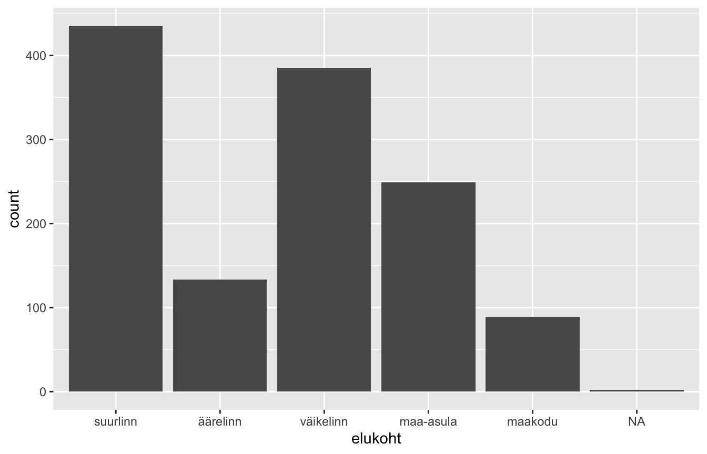
Oma tarbeks sellest piisaks. Kui aga joonis läheb kuhugi, kus teda näevad ka teised, tuleb teda korrastada.
- Funktsioon
labs()annab pealkirjad. Argumendidx,yjatitlevõtavad vastavad väärtused. Kui tahad mõne pealkirja ära jätta, anna talle väärtusNULL. - Funktsioonid, mis algavad
theme_, muudavad joonise üldist välimust. Näitekstheme_bw()teeb valge tausta ja musta raami. - Funktsiooni
geom_bar()argumendidfill(täitevärv) jacolor(piirjoone värv) muudavad tulpade välimust.
ggplot(data, aes(x = elukoht)) +
geom_bar(fill = "dodgerblue3", color = "black") +
labs(
x = NULL,
y = "vastajate arv",
title = "Vastajate elukoht"
) +
theme_bw()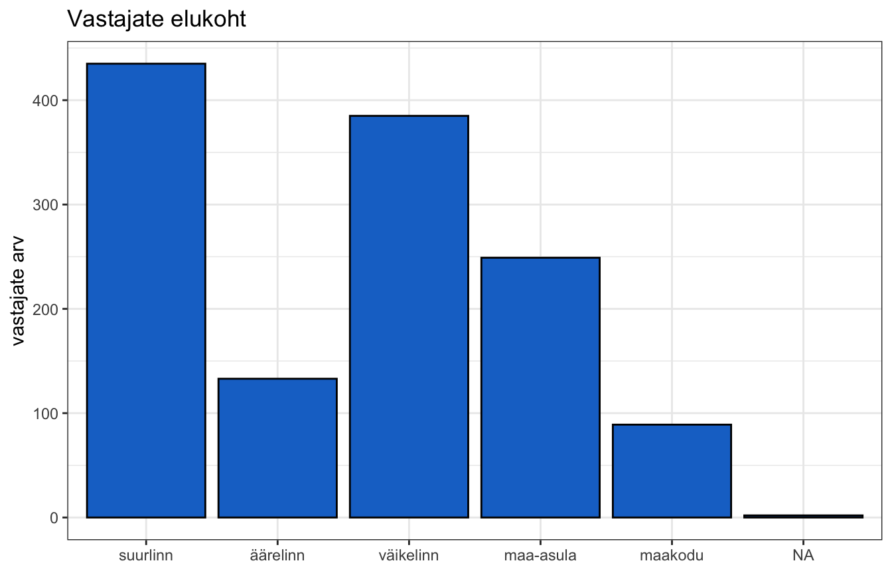
Sildid mahuvad ära, sest me tõlkisime nad praktikumis 4 juba andmestikus ära ja hoidsime lühikesed. Kui nad ei mahuks, saaks neid kallutada funktsiooniga theme(), mis muudab joonise üksikdetaile.
Argument axis.text.x puudutab x-telje teksti. Tema väärtuseks tuleb anda omakorda funktsioon element_text(), mis kirjeldab, milline tekst välja peaks nägema. Selle argument angle määrab nurga kraadides ja argument hjust (“horizontal justification”) joondab kallutatud teksti nii, et ta lõpp jääks telje juurde.
ggplot(data, aes(x = elukoht)) +
geom_bar(fill = "dodgerblue3", color = "black") +
labs(x = NULL, y = "vastajate arv", title = "Vastajate elukoht") +
theme_bw() +
theme(axis.text.x = element_text(angle = 45, hjust = 1))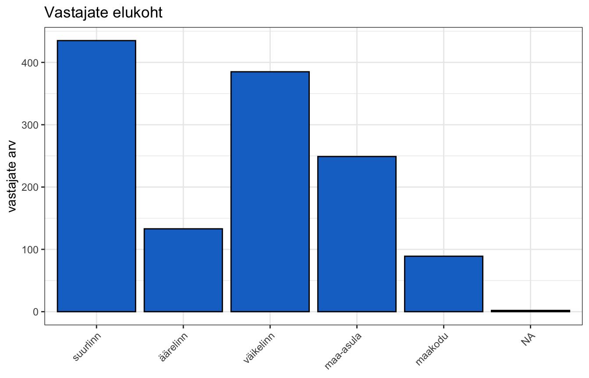
Teine muutuja juurde
Joonisele saab lisada informatsiooni, sidudes mõne teise muutuja näiteks tulpade värviga. Seda tuleb teha funktsiooni aes() sees, sest tegemist on muutujaga, mitte kindla värviga.
Argument position = "dodge" funktsioonis geom_bar() paneb tulbad kõrvuti.
ggplot(data, aes(x = elukoht, fill = sugu)) +
geom_bar(position = "dodge", color = "black") +
labs(x = NULL, y = "vastajate arv", title = "Elukoht soo lõikes", fill = "sugu") +
theme_bw() +
theme(axis.text.x = element_text(angle = 45, hjust = 1))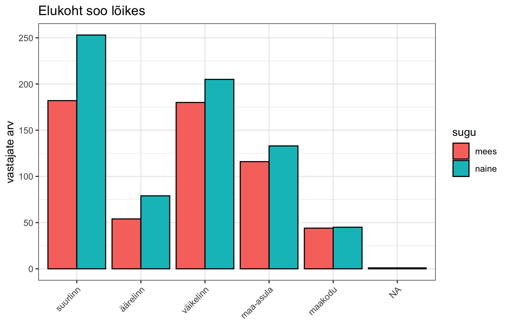
Argument position = "dodge" paneb tulbad kõrvuti. Ilma selleta pannakse nad üksteise otsa (mis on mõnikord samuti kasulik, kui tahad näidata kogusummat).
Oluline vahe. Kui sa kirjutad
fill = "dodgerblue3"väljaspoolaes(), siis on see kindel värv. Kui sa kirjutadfill = suguaes()sees, siis on see muutuja, mille järgi värv valitakse. See vahe on ggploti üks sagedasemaid komistuskive.
Värve saab käsitsi valida funktsiooniga scale_fill_manual(). Tema argument values võtab vektori värvinimedest — nii mitu, kui palju kategooriaid on, ja samas järjekorras.
ggplot(data, aes(x = elukoht, fill = sugu)) +
geom_bar(position = "dodge", color = "black") +
scale_fill_manual(values = c("firebrick3", "dodgerblue3")) +
labs(x = NULL, y = "vastajate arv", title = "Elukoht soo lõikes", fill = "sugu") +
theme_bw() +
theme(axis.text.x = element_text(angle = 45, hjust = 1))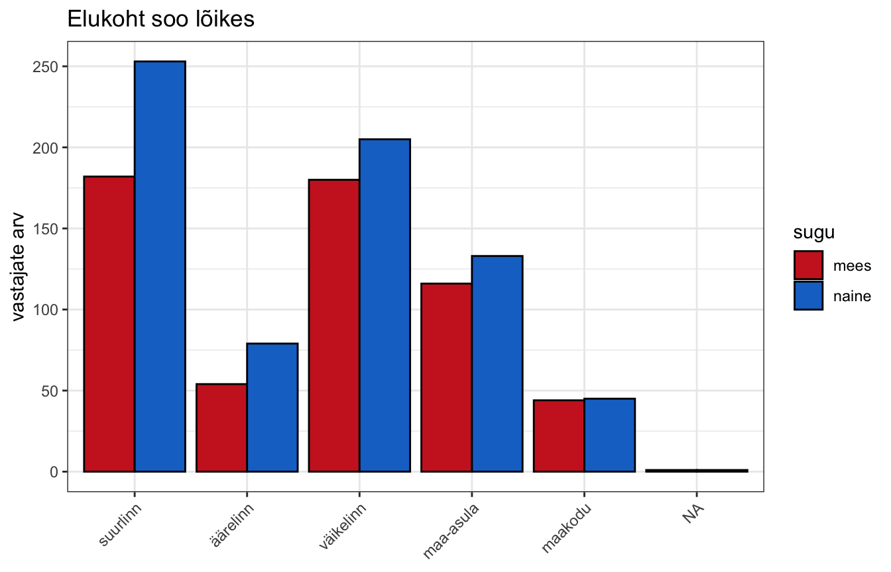
Kui kategooriate silte oleks vaja joonisel muuta, saaks seda teha funktsiooniga scale_x_discrete() ja selle argumendiga labels. Meil ei ole seda vaja, sest sildid on andmestikus juba korras.
Histogramm
Histogramm näitab pideva muutuja jaotust. Funktsioon on geom_histogram().
ggplot(data, aes(x = vanus)) +
geom_histogram()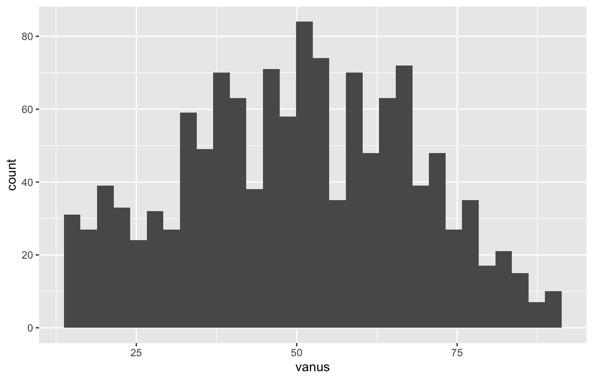
R annab teate, et ta valis kastide arvu ise, ja soovitab selle üle mõelda. Kastide arvu saab määrata argumendiga bins.
ggplot(data, aes(x = vanus)) +
geom_histogram(bins = 20, fill = "dodgerblue3", color = "white") +
labs(x = "vanus aastates", y = "vastajate arv", title = "Vastajate vanus") +
theme_bw()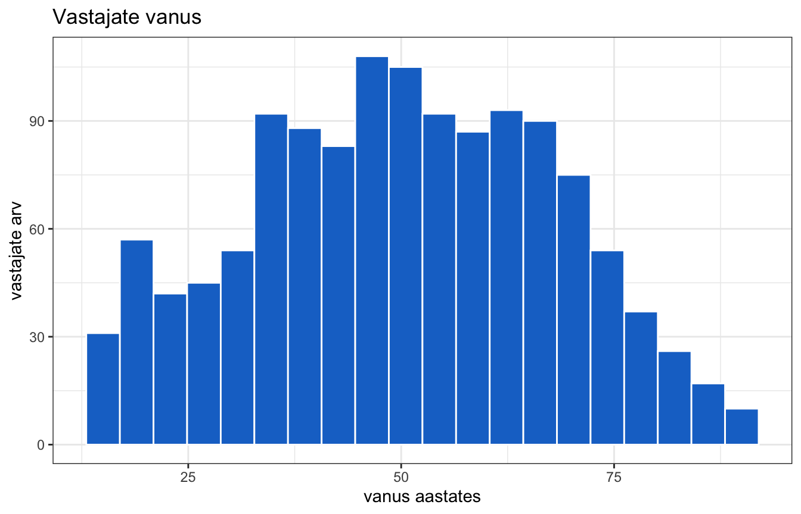
Mis vahe on tulpdiagrammil ja histogrammil? Tulpdiagrammi tulbad on eraldi kategooriad ja nende vahel on tühik. Histogrammi kastid on ühe pideva skaala lõigud ja nende vahel ei ole tühikut, sest skaala on katkematu.
Vaatame ka üht faktorskoori, mille me praktikumis 4 ise tegime.
ggplot(data, aes(x = ranne)) +
geom_histogram(bins = 25, fill = "dodgerblue3", color = "white") +
labs(
x = "suhtumine sisserändesse (faktorskoor)",
y = "vastajate arv",
title = "Suhtumine sisserändesse"
) +
theme_bw()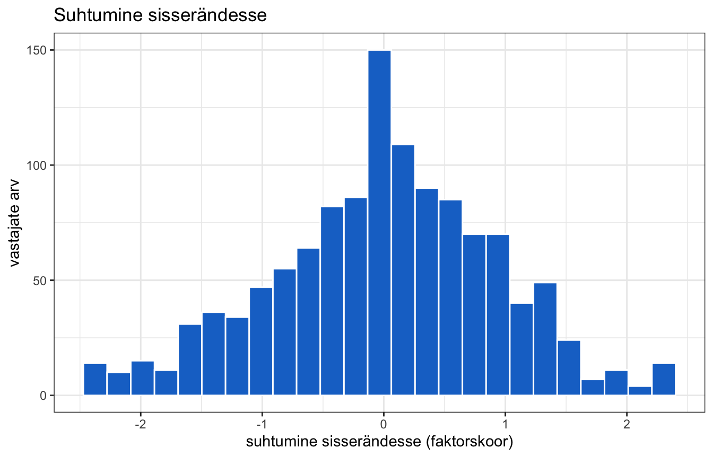
Tihedusdiagramm
Tihedusdiagramm (density plot) on histogrammile väga sarnane, kuid annab sujuva joone kastide asemel. Funktsioon on geom_density().
ggplot(data, aes(x = vanus)) +
geom_density(fill = "dodgerblue3", alpha = 0.6) +
labs(x = "vanus aastates", y = "tihedus", title = "Vastajate vanus") +
theme_bw()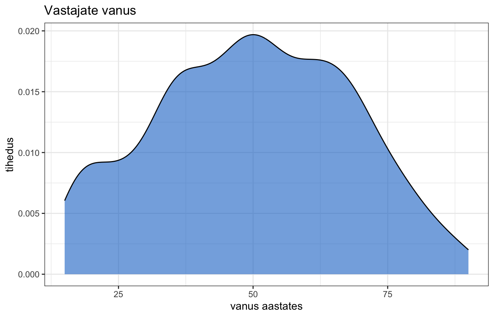
Argument alpha määrab läbipaistvuse: 0 on täiesti läbipaistev, 1 täiesti läbipaistmatu.
Tihedus ei ole otseselt tõlgendatav arv. Pea lihtsalt meeles: mida kõrgem on joon, seda rohkem on selle väärtuse juures juhtumeid.
Kastdiagramm
Kastdiagramm (box plot) näitab, kuidas pideva muutuja jaotus sõltub kategoorilise muutuja kategooriatest. Funktsioon on geom_boxplot(). Nüüd on vaja joonisel määrata mõlemad teljed (siduda nad muutujatega).
ggplot(data, aes(x = erakond, y = ranne)) +
geom_boxplot(fill = "grey85") +
labs(
x = NULL,
y = "suhtumine sisserändesse",
title = "Suhtumine sisserändesse erakondliku eelistuse lõikes"
) +
theme_bw() +
theme(axis.text.x = element_text(angle = 45, hjust = 1))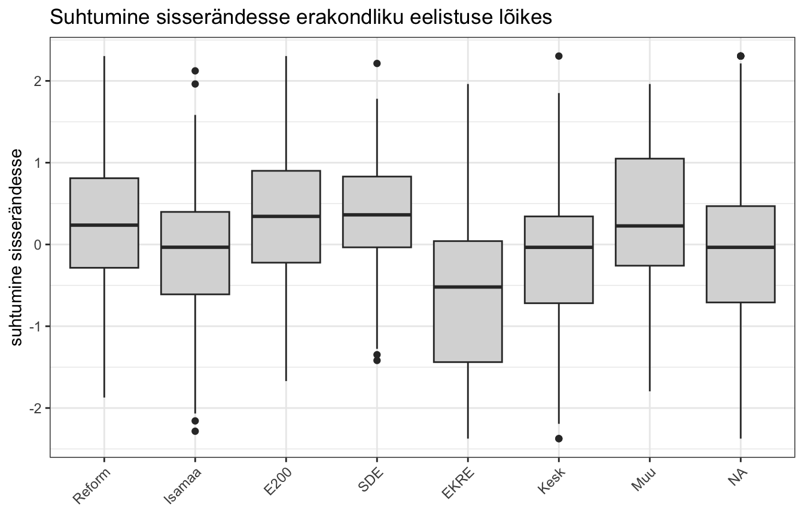
Mida kasti osad tähendavad?
- Kasti keskel olev jaotusjoon on mediaan.
- Kasti alumine ja ülemine serv on esimene ja kolmas kvartiil — kasti sisse jääb seega keskmine 50% juhtumitest.
- Vurrud ulatuvad kõige kaugemate väärtusteni, mis ei ole erindid.
- Üksikud punktid on erindid (outliers) — väärtused, mis on ülejäänutest ebatavaliselt kaugel.
Viiulidiagramm
Viiulidiagramm (violin plot) täidab sama eesmärki, kuid näitab kogu jaotuse kuju, mitte ainult kvartiile. Sisuliselt on see tihedusdiagramm iga kategooria kohta eraldi. Funktsioon on geom_violin() ja teda kasutatakse täpselt nagu geom_boxplot().
ggplot(data, aes(x = erakond, y = ranne)) +
geom_violin(fill = "grey85") +
labs(
x = NULL,
y = "suhtumine sisserändesse",
title = "Suhtumine sisserändesse erakondliku eelistuse lõikes"
) +
theme_bw() +
theme(axis.text.x = element_text(angle = 45, hjust = 1))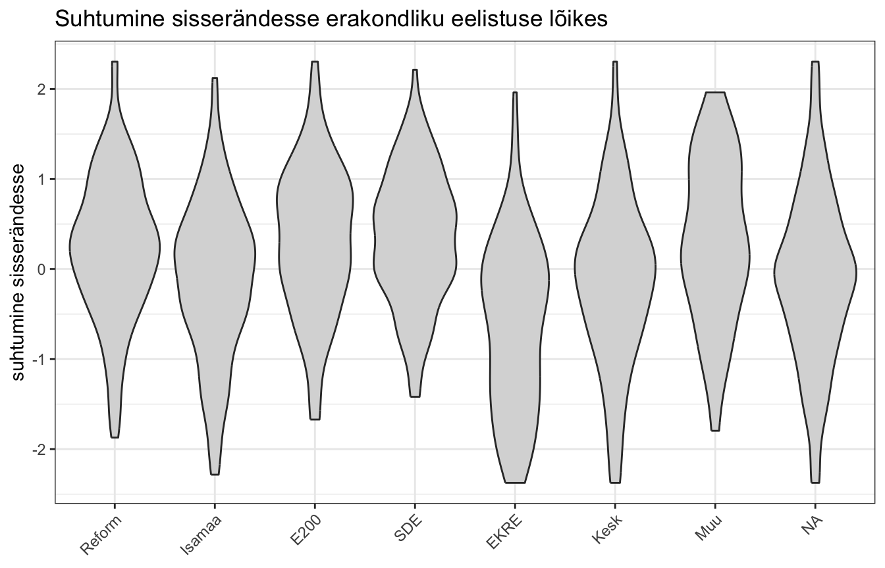
Hajuvusdiagramm
Hajuvusdiagramm (scatterplot) näitab kahe pideva muutuja seost. Iga punkt on üks juhtum ja tema asukoht määratakse kahe muutuja väärtustega. Funktsioon on geom_point().
ggplot(data, aes(x = ranne, y = usaldus)) +
geom_point() +
labs(
x = "suhtumine sisserändesse",
y = "institutsionaalne usaldus",
title = "Kaks faktorskoori"
) +
theme_bw()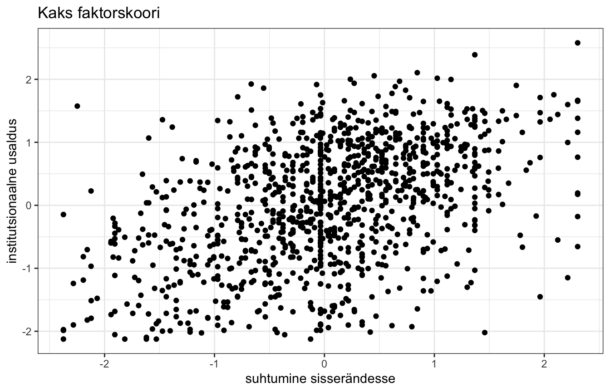
Kui punktid katavad üksteist
Kui palju punkte satub täpselt üksteise peale — mis juhtub sageli, kui muutujal on vähe erinevaid väärtusi — siis ei näe me enam, kui palju neid kuskil tegelikult on. Selle vastu on kaks abinõu ja neid kasutatakse sageli koos.
Esimene: läbipaistvus. Argument alpha funktsioonis geom_point() teeb punktid poolläbipaistvaks, nii et üksteise peal olevad punktid tulevad tumedamad.
ggplot(data, aes(x = vanus, y = usaldus_pol)) +
geom_point(alpha = 0.2) +
labs(
x = "vanus",
y = "usaldus poliitikute vastu (0-10)",
title = "Vanus ja usaldus poliitikute vastu"
) +
theme_bw()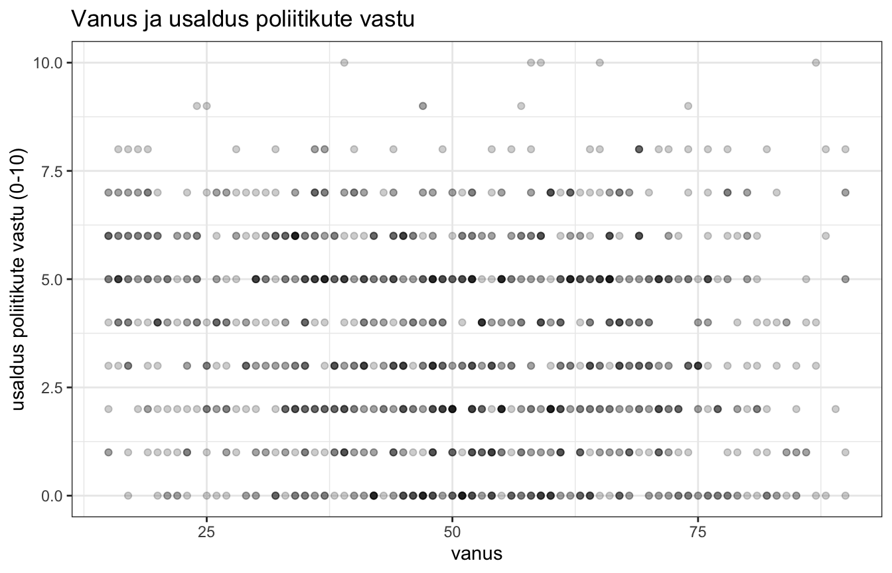
Siin on näha üks tüüpiline probleem: usaldus_pol on skaalal 0–10 ja võtab ainult täisarvulisi väärtusi, seega paiknevad punktid ridadena. Praktikumis 10 vaatame, kuidas seda lahendada.
Jooniste salvestamine
Joonist saab RStudios salvestada ka käsitsi, kuid kiirem ja korratavam on kasutada funktsiooni ggsave(). Ta salvestab viimasena tehtud joonise, seega tuleb teda kasutada kohe pärast joonise tegemist.
ggplot(data, aes(x = vanus)) +
geom_histogram(bins = 20, fill = "dodgerblue3", color = "white") +
labs(x = "vanus", y = "vastajate arv") +
theme_bw()
ggsave("joonis_vanus.pdf", width = 7, height = 5)Faili nimi tuleb kirjutada koos laiendiga. Soovitatav on PDF, sest see on vektorformaat — ta ei lähe suurendamisel uduseks. Laius ja kõrgus on tollides; proovi erinevaid ja vali see, millega joonis välja näeb nii, nagu vaja.
Kuidas seda kirja panna
NõuanneKuidas seda kirja panna
Joonis ei ole töös kunagi üksi. Tal peab olema number ja allkiri ning teksti sees peab olema viide (“Joonis 2 näitab, et …”) ja tõlgendus. Lugeja ei tohi olla sunnitud joonisest ise järeldusi tegema.
Allkiri peab ütlema, mida joonis näitab, milliste andmete põhjal ja kui palju juhtumeid on:
Joonis 2. Vastajate vanuseline jaotus (ESS11, Eesti, n = 1286).
Ja tekstis:
Vastajate vanuseline jaotus on suhteliselt ühtlane (joonis 2), kusjuures kõige arvukam on vanuserühm 45–65 aastat. Väga noori vastajaid on vähe, mis on küsitlusuuringutele tüüpiline.
Sagedased vead, mida vältida.
- Teljed ilma siltideta — lugeja ei tea, mida ta vaatab.
- Muutujate nimed sildina (
ranne,usaldus_pol) — kirjuta inimkeeles ja lisa skaala ulatus. - Joonis ilma tõlgenduseta — kui sa ei oska öelda, mida ta näitab, siis ei ole teda tööl vaja.
- Liiga väike tekst. See on kõige sagedasem vormistusviga. Joonis tehakse ekraanil, kus ta on suur, ja pannakse siis töösse, kus ta on väike — tulemuseks on sildid, mida keegi ei loe.
Rusikareegel teksti suuruse kohta: joonisel olev tekst peaks olema ligilähedaselt sama suur kui töö enda tekst. Kontrolli seda alati nii, nagu lugeja seda näeb — pane joonis dokumenti, prindi leht välja või vaata teda ekraanil selles suuruses, milles ta lõpuks on. Ära hinda joonist RStudio aknas.
Kui tekst on liiga väike, siis on lahendus teha joonis väiksemaks, mitte teksti suuremaks. Väiksemas joonises on tekst suhteliselt suurem. Funktsiooni
ggsave()argumendidwidthjaheighton just selle jaoks.
Ja üks üldisem põhimõte. Iga element joonisel peab kandma olulist infot. Kõik, mis seda ei tee, tuleb ära jätta.
Sellest järeldub kaks asja:
- Ära dubleeri infot. Kui kategooriad on juba x-teljel kirjas, siis ei ole eraldi värvilegendi vaja — värv ei ütle midagi juurde. Kui pealkiri ütleb “vanuse jaotus”, siis ei pea x-telje silt olema “vanus” ja pealkirjas sama sõna.
- Ära lisa kaunistusi. Taustavärvid, varjud, kolmemõõtmelised tulbad ja ruudustikud, mida ei ole vaja lugemiseks — kõik need võtavad tähelepanu ja ei anna midagi vastu.
Seda mõtteviisi on kõige tuntumalt sõnastanud Edward Tufte, kes rääkis data-ink’i mõistest: võimalikult suur osa joonise “tindist” peaks kuluma andmete näitamisele, mitte kõige muu peale. Tema soovitus on lihtne — vaata iga elementi ja küsi, mis juhtuks, kui ma ta ära võtaksin. Kui vastus on “mitte midagi”, siis võta ära.
Harjutused
1. Kirjeldav statistika. Arvuta muutuja usaldus_inim keskmine, mediaan ja standardhälve. Kui palju on puuduvaid väärtusi? Võrdle keskmist ja mediaani — mida see sulle jaotuse kohta ütleb?
2. Risttabel. Tee risttabel muutujatest erakond ja sugu. Arvuta veeruprotsendid. Millises erakonnas on naiste osakaal kõige suurem?
3. Joonis. Tee histogramm muutujast usaldus. Vali kastide arv nii, et jaotuse kuju oleks hästi näha. Lisa telgedele korralikud sildid ja pealkiri.
4. Kaks muutujat. Tee kastdiagramm, mis näitab, kuidas rahulolu_dem jaotub erakond kategooriate lõikes. Millise erakonna valijad on kõige rahulolevamad?
5. Salvestamine. Salvesta eelmine joonis PDF-failina. Ava fail ja vaata, kas tekst on loetavas suuruses.